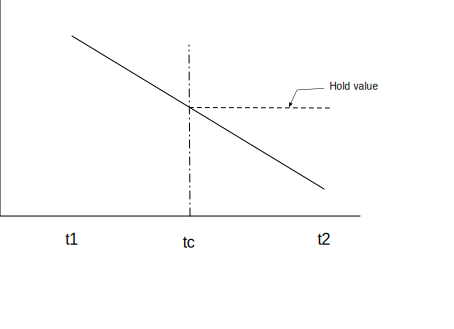
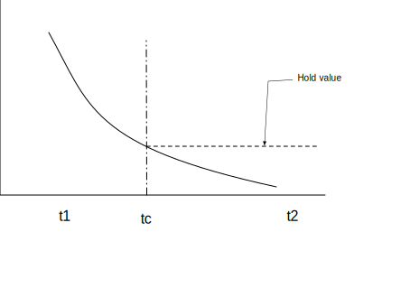
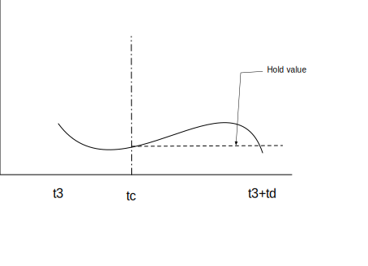

序文
これまでの Web 上のオーディオはかなり未発達なもので、ごく最近まで Flash や QuickTime のようなプラグインを通して配信しなくてはなりませんでした。HTML5 での audio 要素の導入は、基本的なストリーミング・オーディオ再生を可能にする重要なものです。しかし、より複雑なオーディオアプリケーションを扱うには、それだけではまだ充分に強力ではありません。洗練された Web ベースのゲームやインタラクティブ・アプリケーションのためには別の解決策が必要とされます。この仕様では、近年のデスクトップ・オーディオ制作アプリケーションに見られるミキシング、プロセシング、フィルタリング処理に加え、近年のゲームオーディオエンジンに見られるような機能も持たせる事を目標とします。
この API はさまざまな使用例 [webaudio-usecases] を考慮して設計されています。理想的にはすべての使用例が、JavaScript から制御される最適化された C++ エンジンを使って無理なく実装でき、ブラウザーで動作するようにサポートされなくてはなりません。とは言っても、近年のデスクトップ・オーディオソフトウェアは極めて高度な機能を持ち、それらの一部はこのシステムを使ったとしても構築する事が困難か不可能と考えられます。Apple 社の Logic Audio がそのようなアプリケーションの 1 つであり、外部 MIDI コントローラー、任意のプラグイン・オーディオエフェクトやシンセサイザー、高度に最適化されたオーディオファイルのディスクへの読み込み/書き出し、密に統合されたタイムストレッチなどなどをサポートしています。それでもなお、ここで提案するシステムは、音楽に関するものを含めて、かなり複雑なゲームやインタラクティブ・アプリケーションの広い範囲を充分にサポートする事が可能です。またそれは、WebGL によってもたらされる、より高度なグラフィックスの機能をよく引き立たせる事が可能です。このAPIはより高度な機能を後から追加できるように設計されています。
機能
この API は、これらの基本機能をサポートします:
-
単純な、または 複数のセンド、サブミックス を含む複雑なミキシング/エフェクト・アーキテクチャーのための モジュラールーティング
-
内部処理に 32 ビット浮動小数を使用した高いダイナミックレンジ
-
非常に高度なリズムの精度を必要とするドラムマシンやシーケンサーなどのアプリケーションのための、低 レイテンシー な サンプル単位の時間精度での音の再生。これには、エフェクトを 動的に生成 できるようにする事も含まれます
-
エンベロープ、フェードイン/フェードアウト、グラニュラーエフェクト、フィルタースイープ、LFO などのためのオーディオパラメーターのオートメーション
-
分割や結合など、オーディオストリームのチャンネルに対する柔軟な扱い
-
audioまたはvideomedia elementからのオーディオに対する処理 -
getUserMedia() からの
MediaStreamを使用したライブオーディオ入力に対する処理 -
WebRTC との統合
-
MediaStreamTrackAudioSourceNodeと [webrtc] を使ってリモート・ピアから受け取ったオーディオの処理 -
生成または加工されたオーディオストリームの
MediaStreamAudioDestinationNodeと [webrtc] を使ったリモート・ピアへの送信
-
-
Script での直接的 なオーディオストリームの合成および加工
-
3D ゲームや没入環境を幅広くサポートする 空間音響 :
-
パンニングモデル: 等価パワー, HRTF, パススルー
-
距離減衰
-
サウンドコーン
-
障害物 / 遮蔽物
-
ソース / リスナー
-
-
広範囲の線形エフェクト、特に非常に高い品質のルーム・エフェクトに使用できるコンボリューションエンジン。これによって可能なエフェクトの例を以下に示します:
-
小さい / 大きい部屋
-
大聖堂
-
コンサートホール
-
洞窟
-
トンネル
-
廊下
-
森
-
野外劇場
-
出入り口を経由した遠くの部屋
-
極端なフィルター
-
風変りな巻き戻し効果
-
極端なコムフィルター効果
-
-
ミックス全体の制御やスウィートニング ( 訳注:ビデオに効果音などをつける MA 作業 ) のためのダイナミック・コンプレッション
-
効率的な双二次フィルターによる、ローパス、ハイパス、その他一般的なフィルター
-
ディストーションやその他の非線形エフェクトのためのウェーブシェイピング・エフェクト
-
オシレーター
モジュラールーティング
モジュラールーティングによって異なる AudioNode オブジェクト同士を任意に接続できます。それぞれのノードは入力および出力を持っています。
ソースノードは入力は持たず、ひとつの出力を持ちます。
デスティネーションノードはひとつの入力を持ち、出力は持っていません。フィルターなどの他のノードはソースとデスティネーションの間に配置することができます。2 つのオブジェクトが互いに接続している場合、低レベルのストリーム形式の詳細について開発者が煩わされる事なく、適正な処理が行われます。
例えばもしモノラルの音声ストリームがステレオの入力に接続されていても、左右のチャンネルに 適正 にミックスされます。
最も単純な例は、ひとつの音声ソースを出力に直接接続したものです。すべての接続は単一の AudioDestinationNode を持つ AudioContext 内部で行われます:

この単純なルーティングを図示します。この例では単一の音を再生しています:
var context= new AudioContext(); function playSound() { var source= context. createBufferSource(); source. buffer= dogBarkingBuffer; source. connect( context. destination); source. start( 0 ); }
これはもっと複雑な例で、3 つのソースとコンボリューションリバーブが最終出力段にあるダイナミックコンプレッサーを介して送られます:

var context= 0 ; var compressor= 0 ; var reverb= 0 ; var source1= 0 ; var source2= 0 ; var source3= 0 ; var lowpassFilter= 0 ; var waveShaper= 0 ; var panner= 0 ; var dry1= 0 ; var dry2= 0 ; var dry3= 0 ; var wet1= 0 ; var wet2= 0 ; var wet3= 0 ; var masterDry= 0 ; var masterWet= 0 ; function setupRoutingGraph() { context= new AudioContext(); // Create the effects nodes. lowpassFilter= context. createBiquadFilter(); waveShaper= context. createWaveShaper(); panner= context. createPanner(); compressor= context. createDynamicsCompressor(); reverb= context. createConvolver(); // Create master wet and dry. masterDry= context. createGain(); masterWet= context. createGain(); // Connect final compressor to final destination. compressor. connect( context. destination); // Connect master dry and wet to compressor. masterDry. connect( compressor); masterWet. connect( compressor); // Connect reverb to master wet. reverb. connect( masterWet); // Create a few sources. source1= context. createBufferSource(); source2= context. createBufferSource(); source3= context. createOscillator(); source1. buffer= manTalkingBuffer; source2. buffer= footstepsBuffer; source3. frequency. value= 440 ; // Connect source1 dry1= context. createGain(); wet1= context. createGain(); source1. connect( lowpassFilter); lowpassFilter. connect( dry1); lowpassFilter. connect( wet1); dry1. connect( masterDry); wet1. connect( reverb); // Connect source2 dry2= context. createGain(); wet2= context. createGain(); source2. connect( waveShaper); waveShaper. connect( dry2); waveShaper. connect( wet2); dry2. connect( masterDry); wet2. connect( reverb); // Connect source3 dry3= context. createGain(); wet3= context. createGain(); source3. connect( panner); panner. connect( dry3); panner. connect( wet3); dry3. connect( masterDry); wet3. connect( reverb); // Start the sources now. source1. start( 0 ); source2. start( 0 ); source3. start( 0 ); }
モジュラールーティングはまた AudioNode の出力を 別の AudioNode の動きを制御する AudioParam パラメーターに接続する事もできます。この場合は、ノードからの出力は 入力信号ではなくモジュレーション信号として働きます。
function setupRoutingGraph() { var context= new AudioContext(); // Create the low frequency oscillator that supplies the modulation signal var lfo= context. createOscillator(); lfo. frequency. value= 1.0 ; // Create the high frequency oscillator to be modulated var hfo= context. createOscillator(); hfo. frequency. value= 440.0 ; // Create a gain node whose gain determines the amplitude of the modulation signal var modulationGain= context. createGain(); modulationGain. gain. value= 50 ; // Configure the graph and start the oscillators lfo. connect( modulationGain); modulationGain. connect( hfo. detune); hfo. connect( context. destination); hfo. start( 0 ); lfo. start( 0 ); }
API の概要
定義されているインターフェイスは次のとおりです:
-
AudioContext インターフェイスは、
AudioNode間の接続を表すオーディオ信号グラフを保持します。 -
AudioNodeインターフェイスは、オーディオのソース、オーディオの出力、その間にある処理モジュールを表します。AudioNodeは モジュラー方式 で動的に互いに接続されます。AudioNodeはAudioContextのコンテキスト内に存在します。 -
AnalyserNodeインターフェイスは、ミュージックビジュアライザーやその他の視覚化アプリケーションで使用されるAudioNodeです。 -
AudioBufferインターフェイスは、メモリー内に保持されるオーディオのリソースで使用されます。これらはワンショットの音、またはもっと長いオーディオクリップを表します。 -
AudioBufferSourceNodeインターフェイスは、AudioBuffer からの音を発生するAudioNodeです。 -
AudioDestinationNodeインターフェイスは、AudioNodeのサブクラスでオーディオの最終的な出力地点を表します。 -
AudioParamインターフェイスは、AudioNodeの個別の機能、例えば音量などを制御します。 -
AudioListenerインターフェイスは、PannerNodeと共に空間音響のために使用されます。 -
AudioWorkletインターフェイスは、スクリプトでオーディオを直接処理するカスタムノードを作成するファクトリーを表します。 -
AudioWorkletGlobalScopeインターフェイスは、AudioWorkletProcessor の処理スクリプトが実行されるコンテキストです。 -
AudioWorkletNodeインターフェイスは、AudioWorkletProcessor で処理されるAudioNodeを表します。 -
AudioWorkletProcessorインターフェイスは、Audio ワーカー内の 1 つのノードのインスタンスを表します。 -
BiquadFilterNodeインターフェイスは、次のような一般的な低次のフィルターのAudioNodeです:-
ローバス
-
ハイパス
-
バンドパス
-
ローシェルフ
-
ハイシェルフ
-
ピーキング
-
ノッチ
-
オールパス
-
-
ChannelMergerNodeインターフェイスは、複数のオーディオストリームからひとつのオーディオストリームにチャンネルの結合を行うAudioNodeです。 -
ChannelSplitterNodeインターフェイスは、ルーティンググラフ内のオーディオストリームの個別のチャンネルにアクセスするために使用されるAudioNodeです。 -
ConstantSourceNodeインターフェイスは、AudioParamによる値のオートメーションが可能な定数値を出力するAudioNodeです。 -
ConvolverNodeインターフェイスは、( 例えばコンサートホールでの音のような ) リアルタイム線形エフェクトを加えるAudioNodeです。 -
DynamicsCompressorNodeインターフェイスは、ダイナミクス・コンプレッションのためのAudioNodeです。 -
GainNodeインターフェイスは、明示的なゲイン制御を行うAudioNodeです。AudioNodeへの入力は (ユニティー・ゲインの加算による) 複数の接続をサポートしているため、GainNode を使う事でミキサーが 簡単に構成 できます。 -
IIRFilterNodeインターフェイスは、一般的な IIR フィルターのAudioNodeです。 -
MediaElementAudioSourceNodeインターフェイスは、audio、videoその他のメディア要素を音源とするAudioNodeです。 -
MediaStreamAudioSourceNodeインターフェイスは、ライブオーディオ入力やリモート・ピアから受け取ったような MediaStream を音源とするAudioNodeです。 -
MediaStreamTrackAudioSourceNodeインターフェイスは、MediaStreamTrack からのオーディオを音源とするAudioNodeです。 -
MediaStreamAudioDestinationNodeインターフェイスは、リモート・ピアに送信する MediaStream を出力先とするAudioNodeです。 -
PannerNodeインターフェイスは、3D 空間での空間音響/空間定位のためのAudioNodeです。 -
PeriodicWaveインターフェイスは、OscillatorNodeで使用されるカスタム周期波形を指定するために使用されます。 -
OscillatorNodeインターフェイスは、周期的な波形を発生するAudioNodeです。 -
StereoPannerNodeインターフェイスは、ステレオストリームで 入力された信号の equal-power 方式の定位を行うAudioNodeです。 -
WaveShaperNodeインターフェイスは、例えばディストーションや微妙なウォーミング効果 ( 訳注:いわゆるサチュレーション効果の事 ) など、非線形のウェーブシェイピング・エフェクトを加えるためのAudioNodeです。
また非推奨ですがまだ削除されておらず、置き換えの実装が予定されているいくつかの Web Audio API があります。
-
ScriptProcessorNodeインターフェイスは、スクリプトでオーディオを直接生成または処理するためのAudioNodeです。 -
AudioProcessingEventインターフェイスは、ScriptProcessorNodeオブジェクトと共に用いられるイベントタイプです。
1. オーディオ API
1.1. BaseAudioContext インターフェイス
このインターフェイスは AudioNode オブジェクトのセットとそれらの接続を表します。それによって AudioDestinationNode に任意の信号をルーティングする事を可能にします。ノードはコンテキストから作成され、お互いに connected されます。
BaseAudioContext は直接的にはインスタンス化されず、代わりに AudioContext (リアルタイムレンダリングの場合)と OfflineAudioContext (オフラインレンダリングの場合)が拡張された具体的なインターフェイスとなっています。
enum {AudioContextState "suspended" ,"running" ,"closed" };
| 列挙値の説明 | |
|---|---|
"suspended"
| このコンテキストは現在中断 ( コンテキストの時間は進まず、オーディオハードウェアはパワーダウン / 解放 ) しています。 |
"running"
| オーディオは処理状態にあります。 |
"closed"
| このコンテキストは解放され、もうオーディオ処理に使用できません。すべてのシステムオーディオリソースは解放されました。 |
callback DecodeErrorCallback =void (DOMException );error callback DecodeSuccessCallback =void (AudioBuffer ); [decodedData Exposed =Window ]interface :BaseAudioContext EventTarget {readonly attribute AudioDestinationNode destination ;readonly attribute float sampleRate ;readonly attribute double currentTime ;readonly attribute AudioListener listener ;readonly attribute AudioContextState state ; [SameObject ,SecureContext ]readonly attribute AudioWorklet audioWorklet ;attribute EventHandler onstatechange ;AnalyserNode createAnalyser ();BiquadFilterNode createBiquadFilter ();AudioBuffer createBuffer (unsigned long ,numberOfChannels unsigned long ,length float );sampleRate AudioBufferSourceNode createBufferSource ();ChannelMergerNode createChannelMerger (optional unsigned long numberOfInputs = 6);ChannelSplitterNode createChannelSplitter (optional unsigned long numberOfOutputs = 6);ConstantSourceNode createConstantSource ();ConvolverNode createConvolver ();DelayNode createDelay (optional double maxDelayTime = 1.0);DynamicsCompressorNode createDynamicsCompressor ();GainNode createGain ();IIRFilterNode createIIRFilter (sequence <double >,feedforward sequence <double >);feedback OscillatorNode createOscillator ();PannerNode createPanner ();PeriodicWave createPeriodicWave (sequence <float >,real sequence <float >,imag optional PeriodicWaveConstraints );constraints ScriptProcessorNode createScriptProcessor (optional unsigned long bufferSize = 0,optional unsigned long numberOfInputChannels = 2,optional unsigned long numberOfOutputChannels = 2);StereoPannerNode createStereoPanner ();WaveShaperNode createWaveShaper ();Promise <AudioBuffer >decodeAudioData (ArrayBuffer ,audioData optional DecodeSuccessCallback ?,successCallback optional DecodeErrorCallback ?);errorCallback Promise <void >resume (); };
1.1.1. 属性
audioWorklet, AudioWorklet 型, readonly-
[worklets-1] と
AudioWorkletのアルゴリズムにより定義されたAudioWorkletProcessorクラスのスクリプトをインポート可能なWorkletオブジェクトへのアクセスを行います。 currentTime, double 型, readonly-
コンテキストのレンダリンググラフで最後に処理されたオーディオブロックの最後のサンプルフレームの次のサンプルの秒で表した時刻です。もしコンテキストのレンダリンググラフがまだオーディオブロックを処理していない場合
currentTimeは 0 になります。currentTimeの時間軸で 0 はグラフで処理される最初のブロックの最初のサンプルフレームに対応します。このシステムの経過時間はBaseAudioContextが生成するオーディオストリームの経過時間に対応し、それはシステム内の他の時計には同期しないかも知れません。(OfflineAudioContextでは、ストリームはどのデバイスも能動的に再生しないため、実時間とはまったく違う進み方になります )Web Audio API のすべてのスケジュールされた時刻は
currentTimeに対する相対値になります。BaseAudioContextが "running" 状態にあるとき、この属性は単調増加し、レンダリングスレッドにより 1 レンダリング量子 に対応する均一な増分で更新されます。そのため動作中のコンテキストでは、currentTimeはシステムがオーディオブロックを処理するに従って徐々に増加し、常に次に処理されるオーディオブロックの先頭の時刻を表します。それはまた現在の状態に対する変更が効力を持つ最も早い時刻でもあります。currentTimeは制御スレッドが戻るまでに アトミック に読み取られなくてはなりません ( MUST )。 destination, AudioDestinationNode 型, readonly-
AudioDestinationNodeは単一の入力を持ち、すべてのオーディオの最終的な出口を表しています。通常これは実際のオーディオハードウェアを表します。動作中のすべてのAudioNodeは直接または間接的にこのdestinationに接続されます。 listener, AudioListener 型, readonly-
AudioListenerは 3D 空間音響 で使用されます。 onstatechange, EventHandler 型-
BaseAudioContextに AudioContext の状態が変化したとき ( 例えば、対応する Promise がリゾルブされたときなど ) にディスパッチされるイベントのEventHandlerを設定するために使用されるプロパティです。 AudioContext の状態を直接問い合わせる事ができるEvent型のイベントがイベントハンドラーに発行されます。 新たに作成された AudioContextは 常にsuspended状態から開始し、状態の変化イベントは異なる状態への遷移の度に発行されます。このイベントはoncompleteイベントが発行される前に発行されます。 sampleRate, float 型, readonly-
BaseAudioContextが扱うオーディオのサンプルレート ( 1 秒あたりのサンプルフレーム数 ) です。コンテキスト内のすべてのAudioNodeはこのレートで動作する事を想定しています。これを想定するため、サンプレートコンバータや " 可変速 " 処理はリアルタイム処理内ではサポートされません。 ナイキスト周波数 はこのサンプルレートの半分の値となります。 state, AudioContextState 型, readonly-
制御スレッド における
AudioContextの現在の状態を表します。
1.1.2. メソッド
createAnalyser()-
AnalyserNodeの ファクトリーメソッド です。パラメーターなし戻り値:AnalyserNode createBiquadFilter()-
いくつかのタイプのフィルターに設定可能な 2 次フィルターを表す
BiquadFilterNodeの ファクトリーメソッド です。パラメーターなし戻り値:BiquadFilterNode createBuffer(numberOfChannels, length, sampleRate)-
与えられたサイズの AudioBuffer を作成します。バッファー内のデータは 0 ( 無音 ) で初期化されます。もし、引数のどれかが負、0 または範囲外の場合、
NotSupportedError例外を発生します ( MUST )。BaseAudioContext.createBuffer() メソッドの引数 パラメーター 型 Null可 省略可 説明 numberOfChannelsunsigned long ✘ ✘ バッファーが持つチャンネル数を指定します。実装は少なくとも 32 チャンネルをサポートしなくてはなりません ( MUST )。 lengthunsigned long ✘ ✘ バッファーのサイズをサンプルフレーム数で指定します。 sampleRatefloat ✘ ✘ バッファー内のリニア PCM オーディオデータのサンプルレートを秒あたりのサンプルフレーム数で表します。実装は少なくとも 8000 から 96000 の範囲をサポートしなくてはなりません ( MUST )。 戻り値:AudioBuffer createBufferSource()-
AudioBufferSourceNodeの ファクトリーメソッド です。パラメーターなし createChannelMerger(numberOfInputs)-
チャンネルマージャーを表す
ChannelMergerNodeの ファクトリーメソッド です。numberOfInputsが 1 より小さいかサポートされる数より大きい場合はIndexSizeError例外を発生します ( MUST )。BaseAudioContext.createChannelMerger(numberOfInputs) メソッドの引数 パラメーター 型 Null可 省略可 説明 numberOfInputsunsigned long ✘ ✔ 入力の数を指定します。値は 32 までサポートされなくてはなりません ( MUST )。もし指定されない場合は 6となります。戻り値:ChannelMergerNode createChannelSplitter(numberOfOutputs)-
チャンネルスプリッターを表す
ChannelSplitterNodeの ファクトリーメソッド です。numberOfOutputsが 1 より小さいかサポートされる数より大きい場合は、IndexSizeError例外を発生します ( MUST )。BaseAudioContext.createChannelSplitter(numberOfOutputs) メソッドの引数 パラメーター 型 Null可 省略可 説明 numberOfOutputsunsigned long ✘ ✔ 出力の数を指定します。値は 32 までサポートされなくてはなりません ( MUST )。もし指定されない場合は 6となります。戻り値:ChannelSplitterNode createConstantSource()-
ConstantSourceNodeの ファクトリーメソッド です。パラメーターなし戻り値:ConstantSourceNode createConvolver()-
ConvolverNodeの ファクトリーメソッド です。パラメーターなし戻り値:ConvolverNode createDelay(maxDelayTime)-
DelayNodeの ファクトリーメソッド です。初期化時のデフォルト遅延時間は 0 秒です。BaseAudioContext.createDelay(maxDelayTime) メソッドの引数 パラメーター 型 Null可 省略可 説明 maxDelayTimedouble ✘ ✔ 遅延機能の遅延時間の最大値を秒で指定します。指定する場合は、その値は 0 よりも大きく 3 分よりも小さくなければなりません ( MUST )。そうでない場合 NotSupportedError例外を発生します ( MUST )。 指定しない場合は1となります。戻り値:DelayNode createDynamicsCompressor()-
DynamicsCompressorNodeの ファクトリーメソッド です。パラメーターなし createGain()-
GainNodeの ファクトリーメソッド です。パラメーターなし戻り値:GainNode createIIRFilter(feedforward, feedback)-
BaseAudioContext.createIIRFilter() メソッドの引数 パラメーター 型 Null可 省略可 説明 feedforwardsequence<double> ✘ ✘ IIR フィルターの伝達関数のフィードフォワード ( 分子 ) の係数の配列です。この配列の最大の長さは 20 です。もしすべての値が 0 の場合、 InvalidStateError例外を発生します ( MUST )。 配列の長さが 0 または 20 より大きい場合はNotSupportedError例外を発生します ( MUST )。feedbacksequence<double> ✘ ✘ IIR フィルターの伝達関数のフィードバック ( 分母 ) の係数の配列です。この配列の最大の長さは20です。もし配列の最初の要素が 0 の場合、 InvalidStateError例外を発生します ( MUST )。 もし配列の長さが 0 または 20 より大きい場合はNotSupportedError例外を発生します ( MUST )。戻り値:IIRFilterNode createOscillator()-
OscillatorNodeの ファクトリーメソッド です。パラメーターなし戻り値:OscillatorNode createPanner()-
PannerNodeの ファクトリーメソッド です。パラメーターなし戻り値:PannerNode createPeriodicWave(real, imag, constraints)-
PeriodicWaveを作成する ファクトリーメソッド です。このメソッドを呼び出したとき、以下の手順が実行されます:-
もし
realとimagが同じ長さでない場合、IndexSizeErrorが発生します ( MUST )。 -
o を
PeriodicWaveOptions型の新しいオブジェクトとします。 -
このファクトリーメソッドに各々渡された
realおよびimagパラメーターを、o の同じ名前の属性としてセットします。 -
o の
disableNormalization属性を、ファクトリーメソッドに渡されたconstraints属性のdisableNormalizationの値にセットします。 -
このファクトリーメソッドが呼ばれた
BaseAudioContextを最初の引数とし、o を渡して新しいPeriodicWavep を作成します。 -
p を返します。
BaseAudioContext.createPeriodicWave() メソッドの引数 パラメーター 型 Null可 省略可 説明 realsequence<float> ✘ ✘ コサインパラメーターの数値列です。詳細の説明についてはコンストラクタの引数 realを参照してください。imagsequence<float> ✘ ✘ サインパラメーターの数値列です。詳細の説明についてはコンストラクタの引数 imagを参照してください。constraintsPeriodicWaveConstraints ✘ ✔ 指定されていない場合は、波形は正規化されます。そうでない場合、波形は constraintsに与えられた値に従って正規化されます。戻り値:PeriodicWave -
createScriptProcessor(bufferSize, numberOfInputChannels, numberOfOutputChannels)-
ScriptProcessorNodeの ファクトリーメソッド です。このメソッドは廃止予定 ( DEPRECATED ) で、code class="idl">AudioWorkletNode で置き換えられます。 スクリプトによるオーディオデータ直接処理のためのScriptProcessorNodeを作成します。bufferSizeまたはnumberOfInputChannelsまたはnumberOfOutputChannelsが範囲外の場合、IndexSizeError例外を発生します ( MUST )。numberOfInputChannelsとnumberOfOutputChannelsの両方を 0 にしてはいけません。この場合、IndexSizeError例外を発生します ( MUST )。BaseAudioContext.createScriptProcessor(bufferSize, numberOfInputChannels, numberOfOutputChannels) メソッドの引数 パラメーター 型 Null可 省略可 説明 bufferSizeunsigned long ✘ ✔ bufferSizeパラメーターはサンプルフレーム数でバッファーのサイズを指定します。もしそれが渡されない場合、または値が 0 である場合、実装はノードのライフタイムを通して一定な、動作環境に最適な2の累乗のバッファーサイズを選択します。それ以外の場合は明示的にバッファーサイズを指定します。それは次の値のどれかでなければなりません: 256、512、1024、2048、4096、8192、16384 ( MUST )。この値はonaudioprocessイベントが発生する頻度とそれぞれの呼び出しでどれだけのサンプルフレームを処理する必要があるかを制御します。bufferSizeが小さい値ならば レイテンシー は低く ( 良く ) なります。オーディオが途切れ、グリッジ が発生する事を避けるには大きな値が必要となります。レイテンシー とオーディオ品質の間のバランスを取るためには、プログラマーはこのバッファーサイズを指定せず、実装に最適なバッファーサイズを選択させる事が推奨されます。もしこのパラメーターの値が上に示した許された2の累乗の値でない場合、IndexSizeError例外を発生します ( MUST )。numberOfInputChannelsunsigned long ✘ ✔ このパラメーターはこのノードの入力チャンネル数を指定します。32 チャンネルまでの値がサポートされなくてはなりません。チャンネル数がサポート外の場合、 NotSupportedError例外を発生します。numberOfOutputChannelsunsigned long ✘ ✔ このパラメーターはこのノードの出力チャンネル数を指定します。32 チャンネルまでの値がサポートされなくてはなりません。チャンネル数がサポート外の場合、 NotSupportedError例外を発生します。戻り値:ScriptProcessorNode createStereoPanner()-
StereoPannerNodeの ファクトリーメソッド です。パラメーターなし戻り値:StereoPannerNode createWaveShaper()-
非線形な歪み効果を表す
WaveShaperNodeの ファクトリーメソッド です。パラメーターなし戻り値:WaveShaperNode decodeAudioData(audioData, successCallback, errorCallback)-
ArrayBuffer内にあるオーディオファイルのデータを非同期にデコードします。ArrayBufferは、例えばXMLHttpRequestでresponseTypeに"arraybuffer"を指定した場合のresponse属性としてロードされます。オーディオファイルデータはaudio要素でサポートされるどのフォーマットでも構いません。decodeAudioData()に渡されるバッファーは [mimesniff] で説明される手順で判定されるコンテントタイプを持ちます。この関数の基本的なインターフェイスの手段は戻り値の promise ではありますが、歴史的な理由からコールバックのパラメーターも提供されています。システムは Promise がリゾルブまたはリジェクトし、コールバック関数が呼ばれて完了する前に
AudioContextがガベージコレクションされない事を保証しなくてはなりません。decodeAudioDataが呼ばれたとき、制御スレッド上では次の手順を実行します ( MUST ):-
promise を新しい promise とします。
-
もし
audioDataに対する、IsDetachedBuffer([ECMASCRIPT] で説明されています) がfalseの場合、次の手順を実行します:-
audioDataArrayBufferを Detach します。この操作は [ECMASCRIPT] で説明されています。 -
別のスレッドで実行されるデコード処理をキューにいれます。
-
-
そうでなければ、次の手順を実行します:
-
error を
DataCloneErrorとします。 -
promise を error でリジェクトします。
-
errorCallbackを error で呼び出すタスクをキューに入れます。
-
-
promise を返します。
制御スレッド でも レンダリングスレッド でもない、デコーディングスレッドと呼ばれる別スレッドで実行されるデコード処理がキューに入れられるとき、次の手順が発生します ( MUST )。注 : 複数回の
decodeAudioDataの呼び出しを処理するため、複数のデコーディングスレッドが並列して走る事もあります。-
エンコードされている
audioDataをリニア PCM にデコードを試みます。 -
もしオーディオフォーマットが認識できない、サポートされていない、あるいはデータが破壊 / 不正 / 一貫していないという理由でデコードエラーが発生した場合、制御スレッド で次の手順を実行するためのタスクをキューに入れます:
-
error を
EncodingErrorという名前のDOMExceptionとします。 -
promise を error を持ってリジェクトします。
-
もし
errorCallbackがあれば、error を持ってerrorCallbackを呼び出します。
-
-
それ以外の場合:
-
リニア PCM で表現され、もし
audioDataのサンプルレートがAudioContextのサンプルレートと異なっていた場合はリサンプルを行ったものを結果とします。 -
制御スレッド のイベントループで次の手順を実行するタスクをキューに入れます:
buffer を最終的な結果 ( 必要ならサンプルレート変換を行った後 ) を保持した
AudioBufferとします。-
promise を buffer を持ってリゾルブします。
-
もし
successCallbackがあれば、buffer を持ってsuccessCallbackを呼び出します。
-
-
BaseAudioContext.decodeAudioData() メソッドの引数 パラメーター 型 Null可 省略可 説明 audioDataArrayBuffer ✘ ✘ 圧縮されたオーディオデータを含む ArrayBuffer です。 successCallbackDecodeSuccessCallback? ✔ ✔ デコードが完了したときに呼び出されるコールバック関数です。コールバック関数の引数は 1 つでデコードされた PCM オーディオデータをあらわす AudioBuffer になります。 errorCallbackDecodeErrorCallback? ✔ ✔ オーディオファイルをデコード中にエラーが起こった場合に呼び出されるコールバック関数です。 戻り値:Promise<AudioBuffer> -
resume()-
BaseAudioContextがサスペンドされている場合、currentTimeの進行を再開します。resume が呼ばれた場合、以下の手順が実行されます:-
promise を新しい Promise とします。
-
もし
BaseAudioContextの制御スレッドの状態フラグがclosedならば、promise をInvalidStateErrorでリジェクトし、以降の手順を中止して promise を返します。 -
もし
BaseAudioContextが スタート可能 ではないとき、promise を pendingResumePromises に追加して以降の手順を中止し、promise を返します。 -
BaseAudioContextの制御スレッドの状態フラグをrunningにします。 -
promise を返します。
BaseAudioContextを再開する 制御メッセージ を実行する事は レンダリングスレッド で、以下の手順を実行する事を意味します:-
システムリソースの取得 を試みます。
-
BaseAudioContext上の レンダリングスレッド状態 フラグをrunningにセットします。 -
オーディオグラフのレンダリング を開始します。
-
失敗した場合、制御スレッド に以下を実行するタスクをキューに入れ、これらの手順を中止します:
-
pendingResumePromises にあるすべての promise を順序に従ってリジェクトし、pendingResumePromises をクリアします。
-
promise をリジェクトします。
-
-
制御スレッド のイベントループで以下の手順を実行するタスクをキューに入れます:
-
pendingResumePromises にある promise を順序に従ってリゾルブし、pendingResumePromises をクリアします。
-
promise をリゾルブします。
-
もし
BaseAudioContextのstate属性が既に "running" でない場合:-
BaseAudioContextのstate属性を "running" にセットします。 -
BaseAudioContextにstatechangeという名前のシンプルイベントを発行するタスクをキューに入れます。
-
-
パラメーターなし -
1.1.3. コールバック DecodeSuccessCallback() パラメーター
decodedData,AudioBuffer 型-
デコードされたオーディオデータを保持する AudioBuffer です。
1.1.4. コールバック DecodeErrorCallback() パラメーター
error,DOMException 型-
デコード中に発生したエラーです。
1.1.5. ライフタイム
AudioContext は一度作成された後、これ以上再生する音がなくなるまで、あるいはページを移動するまで再生を続けます。
1.1.6. 内部検査やシリアライゼーションの基本機能の欠如
Web Audio API は音源のスケジューリングに fire-and-forget アプローチを取っています。つまり、音源ノード は、AudioContext のライフタイムの間のひとつひとつの音に対応して作成され、明示的にグラフからの削除は行いません。これはシリアライゼーション API とは互換性がなく、そのためシリアライズ可能な固定的なノードのセットもありません。
さらに、内部検査のための API を持つためにはスクリプトの中身のガベージコレクションの監視が必要になります。
1.1.7. BaseAudioContext のサブクラスに関連付けられるシステムリソース
サブクラス、AudioContext と OfflineAudioContext はコストの高いオブジェクトと考えるべきです。これらのオブジェクトの作成には、高プライオリティのスレッドまたは低レイテンシーのシステムオーディオを含み、どちらも消費電力への影響があります。通常は、1 つのドキュメント内に 1 つ以上の AudioContext を作成する事は不必要です。
BaseAudioContext のサブクラスの作成または再開は、そのコンテキストがシステムリソースを取得する事を含みます。このためには AudioContext としてはシステムオーディオのストリームを作成する事も必要です。これらの動作はコンテキストが関連するオーディオグラフから出力の生成を開始する際に処理を戻します。
なお、ユーザーエージェントは実装で定められた最大数の AudioContext を持つ事ができ、それ以上の新しい AudioContext の作成は失敗して、NotSupportedError 例外を発生します。
プログラマーは suspend および close を使う事で、スレッド、プロセスおよびオーディオストリームを含むシステムリソースの解放を行う事ができます。BaseAudioContext をサスペンドする事で、実装は一部のリソースを解放して後で resume を呼び出したときに再開できるようにします。 AudioContext のクローズによって、実装はすべてのリソースを解放し、再度使用したり再開したりはできなくなります。
注 : これは例えば、定期的なコールバックの呼び出しを待つ事やハードウェアが処理可能になるのを待つ事も含みます。
1.2. AudioContext インターフェイス
このインターフェイスは、その AudioDestinationNode がデバイスへのリアルタイム出力によって直接ユーザーに信号が届くオーディオグラフを表します。多くの場合、１ つのドキュメントにつき 1 つの AudioContext が使用されます。
もしユーザーエージェントとシステムが現在のコンテキストでオーディオの出力を許可していれば、AudioContext はスタート可能となります。言い換えれば、 AudioContext の制御スレッドの状態は suspended から running に遷移する事ができます。
注 : 例えば、ユーザーエージェントとしては AudioContext の制御スレッドが状態を running に変えるには ( [HTML] で説明されている ) ユーザーアクションによるトリガー が必要かもしれません。
enum {AudioContextLatencyCategory "balanced" ,"interactive" ,"playback" };
| 列挙値の説明 | |
|---|---|
"balanced"
| オーディオ出力のレイテンシーと安定性/消費電力のバランスを取ります。 |
"interactive"
| オーディオ出力のレイテンシーをグリッジが発生しない最小値にする。これがデフォルトになります。 |
"playback"
| オーディオ出力のレイテンシーよりも再生の途切れを起こさない事を優先します。消費電力は最も低くなります。 |
[Exposed =Window ,Constructor (optional AudioContextOptions )]contextOptions interface :AudioContext BaseAudioContext {readonly attribute double baseLatency ;readonly attribute double outputLatency ;AudioTimestamp getOutputTimestamp ();Promise <void >suspend ();Promise <void >close ();MediaElementAudioSourceNode createMediaElementSource (HTMLMediaElement );mediaElement MediaStreamAudioSourceNode createMediaStreamSource (MediaStream );mediaStream MediaStreamTrackAudioSourceNode createMediaStreamTrackSource (MediaStreamTrack );mediaStreamTrack MediaStreamAudioDestinationNode createMediaStreamDestination (); };
1.2.1. コンストラクタ
AudioContext(contextOptions)-
AudioContextを作成する際は、以下の手順を実行します:-
AudioContext上の制御スレッドの状態をsuspendedにセットします。 -
AudioContext上のレンダリングスレッドの状態をsuspendedにセットします。 -
pendingResumePromises を空の promise のリストとします。
-
もし
contextOptionsが与えられていれば、オプションを適用します:-
この
AudioContextの内部レイテンシーをlatencyHintの項に書かれているように、contextOptions.に従ってセットします。latencyHint -
もし
contextOptions.が指定されていれば、このsampleRateAudioContextのsampleRateをその値にセットします。 そうでなければ、デフォルト出力デバイスのサンプルレートを使用します。 もし選択されたサンプルレートが出力デバイスのサンプルレートと異なる場合、このAudioContextはオーディオ出力を出力デバイスのサンプルレートに合うようにリサンプリングしなくてはなりません ( MUST )。注 : もしリサンプリングが必要とされる場合、AudioContext のレイテンシーに大きな影響があるかも知れません。
-
-
もし
AudioContextが スタート可能 でない場合、これらの手順は中止されます。 -
処理を開始するための 制御メッセージ を送ります。
処理を開始するための 制御メッセージ を送るには次の手順を実行します:-
システムリソースの取得 を試みます。
-
失敗した場合、これらの手順を中止します。
-
AudioContextの レンダリングスレッドの状態 をrunningにセットします。 -
制御スレッド のイベントループで以下の手順を実行するためのタスクをキューに入れます:
-
AudioContextのstate属性を "running" にセットします。 -
AudioContextにstatechangeという名前のシンプルイベントを発行するためのタスクをキューに入れます。
-
注 : 残念ながら、
AudioContextの作成の失敗についてプログラム上の通知をすることはできません。ユーザーエージェントは、デベロッパーツールコンソールのようなログメカニズムにアクセスできる場合、これを知らせるメッセージをログに記録することをお勧めします。AudioContext.AudioContext() メソッドの引数 パラメーター 型 Null可 省略可 説明 contextOptionsAudioContextOptions ✘ ✔ AudioContextをどのように作成するかをユーザーが指定するオプション。 -
1.2.2. 属性
baseLatency, double 型, readonly-
これは
AudioContextがAudioDestinationNodeからオーディオサブシステムにオーディオを渡す処理で発生するレイテンシーの秒数を表します。これにはAudioDestinationNodeの出力とオーディオハードウェアの間で発生するかも知れないその他の処理による追加のレイテンシーは含まれず、特にオーディオグラフ自体に発生するレイテンシーは含まれません。例えばもし、オーディオコンテキストが 44.1 kHz で動作しており、
AudioDestinationNodeの実装が内部でダブルバッファリングによる レンダリング量子 の出力処理を行う場合、処理のレイテンシーは、約 \((2\cdot128)/44100 = 5.805 \mathrm{ ms}\) となります。 outputLatency, double 型, readonly-
オーディオ出力処理のレイテンシーの秒数の見積もり。つまり、UA がホストシステムにバッファーを再生を要求した時間から、バッファー内の最初のサンプルが実際にオーディオ出力デバイスで処理される時間までの間隔。この後者の時間は、スピーカーやヘッドフォンのような音の信号を発生するデバイスがサンプルの音を発生する時間を指します。
outputLatency属性の値はプラットフォームと接続されているオーディオ出力デバイスに依存します。outputLatency属性の値は接続されているオーディオ出力デバイスが同じである限り、コンテキストのライフタイムを通じて変化する事はありません。もしオーディオ出力デバイスが変化したならば、outputLatency属性の値もそれに従ってアップデートされます。
1.2.3. メソッド
close()-
AudioContextをクローズし、使用中の システムリソースを解放 します。これは、AudioContextが作成したすべてのオブジェクトを自動的に開放はしませんが、AudioContextのcurrentTimeの進行を止め、オーディオデータの処理を停止します。close が呼ばれたとき、以下の手順が実行されます:-
promise を新しい Promise とします。
-
もし
AudioContextの制御スレッドの状態フラグがclosedであった場合、promise をInvalidStateErrorでリジェクトし、これらの手順を中断して promise を返します。 -
もし
AudioContextのstate属性が既に "closed" であった場合、promise をリゾルブして返却し、これらの手順を中断します。 -
AudioContextの制御スレッドの状態フラグをclosedにセットします。 -
promise を返します。
AudioContextをクローズするための 制御メッセージ を実行する事は、レンダリングスレッド で、以下の手順を実行する事を意味します:-
システムリソースの解放 を試みます。
-
レンダリングスレッドの状態 を
suspendedにセットします。 -
制御スレッド のイベントループで以下の手順を実行するタスクをキューに入れます:
-
promise をリゾルブします。
-
もし
AudioContextのstate属性が既に "closed" でない場合:-
AudioContextのstate属性を "closed" にセットします。 -
AudioContextでstatechangeという名前のシンプルイベントを発行するためのタスクをキューに入れます。
-
-
AudioContextがクローズされた場合、AudioContextに接続されているすべての MediaStream とHTMLMediaElementはその出力を無視されます。 つまり、これらはもうスピーカーなどの出力デバイスに出力されなくなります。より柔軟な挙動のためには、HTMLMediaElement.captureStream()の使用を検討してください。注 :
AudioContextがクローズされるとき、実装はサスペンドの場合よりも積極的に多くのリソースを解放する事ができます。パラメーターなし -
createMediaElementSource(mediaElement)-
指定された HTMLMediaElement から
MediaElementAudioSourceNodeを作成します。 このメソッドの呼び出しにより、HTMLMediaElement からのオーディオの再生はAudioContextの処理グラフに再ルーティングされるようになります。AudioContext.createMediaElementSource() メソッドの引数 パラメーター 型 Null可 省略可 説明 mediaElementHTMLMediaElement ✘ ✘ 再ルーティングされるメディアエレメントです。 createMediaStreamDestination()-
MediaStreamAudioDestinationNodeを作成します。パラメーターなし createMediaStreamSource(mediaStream)-
MediaStreamAudioSourceNodeを作成します。AudioContext.createMediaStreamSource() メソッドの引数 パラメーター 型 Null可 省略可 説明 mediaStreamMediaStream ✘ ✘ 音源となるメディアストリームです。 createMediaStreamTrackSource(mediaStreamTrack)-
MediaStreamTrackAudioSourceNodeを作成します。AudioContext.createMediaStreamTrackSource() メソッドの引数 パラメーター 型 Null可 省略可 説明 mediaStreamTrackMediaStreamTrack ✘ ✘ 音源となる MediaStreamTrack です。 その kind属性は"audio"でなくてはならず、そうでない場合は、InvalidStateError例外を発生します ( MUST )。 getOutputTimestamp()-
コンテキストのオーディオストリームについて、2 つの関連する位置情報を含む新しい
AudioTimestampインスタンスを返します:contextTimeメンバーには、オーディオ出力デバイスによって現在レンダリングされているサンプルフレームの時間 ( つまり出力されているオーディオストリームの位置 ) が含まれます。これにはコンテキストのcurrentTimeと同じ単位と起点を使用します。 そしてperformanceTimeメンバーには、contextTimeに格納された値に対応するサンプルフレームがperformance.now()( [hr-time-2] で説明されています ) と同じ単位および起点で、オーディオ出力デバイスによってレンダリングされる瞬間を推定する時間が含まれます 。コンテキストのレンダリンググラフがまだオーディオブロックを処理していないときに
getOutputTimestampを呼び出すと、両方のメンバーが 0 であるAudioTimestampインスタンスを返します。コンテキストのレンダリンググラフがオーディオブロックの処理を開始すると、その
currentTime属性の値は常にgetOutputTimestampメソッドの呼び出しで取得されるcontextTime値より大きくなります。getOutputTimestampメソッドから返された値は、コンテキストの時刻のわずかに後になるパフォーマンスの時刻の見積もりを得るのに使用できます:function outputPerformanceTime( contextTime) { var timestamp= context. getOutputTimestamp(); var elapsedTime= contextTime- timestamp. contextTime; return timestamp. performanceTime+ elapsedTime* 1000 ; } 上の例での見積もりの精度は、引数の値が現在の出力オーディオストリームの位置にどれほど近いかによって決まります: つまり与えられた
contextTimeがtimestamp.contextTimeに近いほど、得られた推定の精度は良くなります。注 : コンテキストの
currentTimeとgetOutputTimestampメソッドの呼び出しから得られたcontextTimeの値の差は、currentTimeが不均一な時間間隔で増加する可能性があるため、信頼できる出力レイテンシーの見積もりとみなす事はできず、代わりにoutputLatency属性を使用する必要があります。パラメーターなし戻り値:AudioTimestamp suspend()-
AudioContextのcurrentTimeの進行を中断し、デスティネーションで再生するために既に処理を終えた現在のコンテキストの処理ブロックを再生し、その後システムがオーディオハードウェアの占有を解放できるようにします。 これは一般的に、アプリケーションがしばらくの間AudioContextを必要とせず、一時的にAudioContextに関連付けられた システムリソースを解放 したいことがアプリケーションに分かっているときに役に立ちます。この promise は、フレームバッファーが空のとき ( ハードウェアに渡されたとき )、またはコンテキストがすでにsuspended状態のときは即座に ( 副作用なしで ) リゾルブされます。コンテキストがクローズされた場合、promise はリジェクトされます。suspend が呼び出された場合、以下の手順を実行します:-
promise を新しい Promise とします。
-
もし
AudioContextの制御スレッドの状態フラグがclosedの場合、promise をInvalidStateErrorでリジェクトし、これらの手順を中止して promise を返します。 -
AudioContextの制御スレッドの状態フラグをsuspendedにセットします。 -
AudioContextをサスペンドするための制御メッセージをキューに入れます。 -
promise を返します。
AudioContextをサスペンドするための 制御メッセージ を実行する、とは レンダリングスレッド で、以下の手順を実行する事を意味します:-
システムリソースの解放 を試みます。
-
AudioContextの レンダリングスレッドの状態 をsuspendedにセットします。 -
制御スレッド のイベントループで以下の手順を実行するタスクをキューに入れます:
-
promise をリゾルブします。
-
もし
AudioContextのstate属性が既に "suspended" でない場合:-
AudioContextのstate属性を "suspended" にセットします。 -
AudioContextでstatechangeという名前のシンプルイベントを発行するタスクをキューに入れます。
-
-
AudioContextがサスペンドされている間、MediaStream の出力は無視されます。つまり、メディアストリームのリアルタイム性によって、データは失われます。HTMLMediaElementも同様に、システムが再開されるまでその出力は無視されます。AudioWorkletNodeおよびScriptProcessorNodeは、サスペンド中は処理ハンドラーの呼び出しが止まりますが、コンテキストがリジュームされると再開します。AnalyserNodeでは、ウィンドウ関数の目的そのものにより、データは連続ストリームとみなされます。つまり、resume()/suspend()によってAnalyserNodeのデータストリームに無音は発生しません。特に、AudioContextがサスペンドされているときにAnalyserNodeの関数を繰り返し呼び出した際は、同じデータが返されなければなりません ( MUST )。パラメーターなし -
1.2.4. AudioContextOptions
AudioContextOptions ディクショナリは AudioContext のユーザー指定のオプションを決めるために使用されます。
dictionary { (AudioContextOptions AudioContextLatencyCategory or double )latencyHint = "interactive";float sampleRate ; };
1.2.4.1. ディクショナリ AudioContextOptions メンバー
latencyHint,(AudioContextLatencyCategory または double)型, デフォルトは"interactive"-
オーディオ出力のレイテンシーと消費電力の間のトレードオフに影響を与える、再生のタイプを指示します。
latencyHintの値は、AudioContextLatencyCategoryから選択する事が推奨されます。ただし、レイテンシーと消費電力をより細かくバランスを取るために、レイテンシーの秒数を double 型で指定することもできます。数値を適切に解釈するのはブラウザーの裁量に委ねられています。実際に使用されるレイテンシーは、AudioContext のbaseLatency属性によって与えられます。 sampleRate, float 型-
作成される
AudioContextのsampleRateをこの値に設定します。サポートされている値は、AudioBufferのサンプルレートと同じです。指定されたサンプルレートがサポートされていない場合は、NotSupportedError例外を発生します ( MUST )。もし
sampleRateが指定されていない場合、このAudioContextの出力デバイスが推奨するサンプルレートが使用されます。
1.2.5. AudioTimestamp
dictionary {AudioTimestamp double contextTime ;DOMHighResTimeStamp performanceTime ; };
1.2.5.1. ディクショナリ AudioTimestamp メンバー
contextTime, double 型-
BaseAudioContext の
currentTimeの時間軸内の時刻を表します。 performanceTime, DOMHighResTimeStamp 型-
Performanceインターフェイスの実装における時間軸内の時刻を表します ( [hr-time-2] で説明されています )。
1.3. OfflineAudioContext インターフェイス
OfflineAudioContext は、レンダリング/ミックスダウンのための特殊なタイプの BaseAudioContext で、( 潜在的には ) リアルタイムよりも高速に動作します。これはオーディオハードウェアに対してレンダリングせず、返した promise に可能な限り高速にレンダリングした結果を AudioBuffer として渡します。
[Exposed =Window ,Constructor (OfflineAudioContextOptions contextOptions ),Constructor (unsigned long numberOfChannels ,unsigned long length ,float sampleRate )]interface :OfflineAudioContext BaseAudioContext {Promise <AudioBuffer >startRendering ();Promise <void >suspend (double );suspendTime readonly attribute unsigned long length ;attribute EventHandler oncomplete ; };
1.3.1. コンストラクタ
OfflineAudioContext(contextOptions)-
c を新しい
OfflineAudioContextオブジェクトとします。c を次のように初期化します:-
c の
制御スレッドの状態を "suspended" とします。 -
c の
制御スレッドの状態を"suspended"とします。 -
channelCountをcontextOptions.numberOfChannelsとしたAudioDestinationNodeを作成します。
OfflineAudioContext.OfflineAudioContext(contextOptions) メソッドの引数 パラメーター 型 Null可 省略可 説明 contextOptionsこのコンテキストを作成する際に必要な初期化パラメーター -
OfflineAudioContext(numberOfChannels, length, sampleRate)-
OfflineAudioContextは AudioContext.createBuffer と同じ引数で作成できます。もし引数のどれかが負、0、または範囲外の場合はNotSupportedError例外を発生します ( MUST )。OfflineAudioContext は、次の呼び出し
new OfflineAudioContext({ numberOfChannels: numberOfChannels, length: length, sampleRate: sampleRate}) が行われたのと同じように作成されます。
OfflineAudioContext.OfflineAudioContext(numberOfChannels, length, sampleRate) メソッドの引数 パラメーター 型 Null可 省略可 説明 numberOfChannelsunsigned long ✘ ✘ バッファーが持つチャンネルの数を指定します。サポートされているチャンネル数については、 createBuffer()を参照してください。lengthunsigned long ✘ ✘ バッファーのサイズをサンプルフレーム数で指定します。 sampleRatefloat ✘ ✘ バッファー内のリニア PCM オーディオデータのサンプルレートをサンプルフレーム / 秒で記述します。有効なサンプルレートについては、 createBuffer()を参照してください。
1.3.2. 属性
length, unsigned long 型, readonly-
サンプルフレーム数で表したバッファーのサイズ。これは、コンストラクタの
lengthパラメーターの値と同じです。 oncomplete, EventHandler 型-
OfflineAudioCompletionEvent. 型の EventHandler です。これは、
OfflineAudioContextで最後に発行されるイベントです。
1.3.3. メソッド
startRendering()-
現在の接続と変化のスケジュールが与えられると、オーディオのレンダリングが開始されます。システムは promise を リゾルブし、コールバック関数が呼び出されて完了するか、
suspend関数が呼び出されるまで、OfflineAudioContextがガベージコレクションされないようにしなければなりません。レンダリングされたオーディオデータを取得する主な方法は、promise の戻り値を経由する方法ですが、インスタンスは歴史的な理由により、
completeという名前のイベントも発生させます。[[rendering started]]をこのOfflineAudioContextの内部スロットとします。 このスロットは false に初期化されます。startRenderingが呼び出されたとき、制御スレッド で次の手順を実行しなくてはなりません ( MUST )。-
OfflineAudioContextの[[rendering started]]スロットが true の場合、InvalidStateErrorでリジェクトした promise を返し、これらの手順を中止します。 -
OfflineAudioContextの[[rendering started]]スロットを true に設定します。 - promise を新しい Promise とします。
-
contextOptionsパラメーターでこのインスタンスのコンストラクタに渡されたnumberOfChannels、length、およびsampleRateの値にそれぞれ等しいチャンネル数、長さ、およびサンプルレートを持つ、新しいAudioBufferを作成します。このバッファーをOfflineAudioContextの内部スロット[[rendered buffer]]に割り当てます。 -
前項の
AudioBufferコンストラクタ呼び出し中に例外が発生した場合、この例外を持って promise をリジェクトします。 - そうでなく、バッファーが正常に作成された場合は、オフラインレンダリングを開始 します。
- promise を返します。
オフラインレンダリングを開始するには、その際に作成された レンダリングスレッド で次の手順が実行されなくてはなりません ( MUST )。-
現在の接続と変化のスケジュールが与えられたら、
length長のオーディオのサンプルフレームを[[rendered buffer]]にレンダリングし始めます。 - レンダリング量子 ごとに、チェックを行い、必要ならばサスペンドします。
- もしサスペンドされていたコンテキストが再開された場合、バッファーへのレンダリングを継続します。
-
レンダリングが完了したら、制御スレッド のイベントループで次の手順を実行するタスクをキューに入れます:
-
startRendering()によって作成された promise を[[rendered buffer]]をもってリゾルブします。 -
OfflineAudioCompletionEventのインスタンスのrenderedBufferプロパティに[[rendered buffer]]を設定し、completeという名前のイベントを発行するタスクをキューに入れます。
-
パラメーターなし戻り値:Promise<AudioBuffer> -
suspend(suspendTime)-
指定された時刻にオーディオコンテキストの時間進行の停止をスケジュールし、promise を返します。これは一般的に、
OfflineAudioContextでオーディオグラフを同期して操作する場合に有用です。サスペンドの最大の精度は レンダリング量子 のサイズであり、指定されたサスペンドの時刻は最も近い レンダリング量子 の境界に丸められることに注意してください。このため、同じ量子化されたフレーム内で複数のサスペンドをスケジュールすることはできません。また、精度の高いサスペンドを確実に行うには、コンテキストが running でない間にスケジューリングを行う必要があります。
OfflineAudioContext.suspend() メソッドの引数 パラメーター 型 Null可 省略可 説明 suspendTimedouble ✘ ✘ 指定された時刻にレンダリングのサスペンドをスケジューリングします。時刻は レンダリング量子 のサイズで量子化されて丸められます。 量子化されたフレーム番号が - 負の値
- 現在の時刻より小さいか同じ
- レンダリング全体の長さより大きいか同じ
- 同じ時刻に別のサスペンドがスケジュールされている
InvalidStateErrorでリジェクトされます。
1.3.4. OfflineAudioContextOptions
これは、OfflineAudioContext の作成の際に使用するオプションを指定します。
dictionary {OfflineAudioContextOptions unsigned long numberOfChannels = 1;required unsigned long length ;required float sampleRate ; };
1.3.4.1. ディクショナリ OfflineAudioContextOptions メンバー
length, unsigned long 型-
サンプルフレーム数で表したレンダリングされる
AudioBufferの長さ。 numberOfChannels, unsigned long 型, デフォルトは1-
この
OfflineAudioContextのチャンネル数。 sampleRate, float 型-
この
OfflineAudioContextのサンプルレート。
1.3.5. OfflineAudioCompletionEvent インターフェイス
これは、歴史的な理由から OfflineAudioContext に発行される Event オブジェクトです。
[Exposed =Window ,(Constructor DOMString ,type OfflineAudioCompletionEventInit )]eventInitDict interface :OfflineAudioCompletionEvent Event {readonly attribute AudioBuffer renderedBuffer ; };
1.3.5.1. 属性
renderedBuffer, AudioBuffer 型, readonly-
レンダリングされたオーディオデータを含む
AudioBufferです。
1.3.5.2. OfflineAudioCompletionEventInit
dictionary :OfflineAudioCompletionEventInit EventInit {required AudioBuffer renderedBuffer ; };
1.3.5.2.1. ディクショナリ OfflineAudioCompletionEventInit メンバー
renderedBuffer, AudioBuffer 型-
イベントの
renderedBuffer属性に割り当てる値。
1.4. AudioBuffer インターフェイス
このインターフェイスは、メモリー上にあるオーディオデータ ( ワンショットサウンドおよびその他の短いオーディオクリップ用 ) を表します。そのフォーマットはノンインタリーブな 32 ビットの浮動小数点の リニア PCM で、通常は \([−1, 1]\) の範囲になりますが、値はこの範囲に限定はされません。これは 1 つまたは複数のチャンネルを持つことができます。通常、PCM データの長さはかなり短く ( 通常は 1 分未満 ) と想定されています。音楽サウンドトラックなどのより長いサウンドの場合、audio 要素と MediaElementAudioSourceNode によるストリーミングを使うべきです。
AudioBuffer は、1 つ以上の AudioContext によって使用される事があり、OfflineAudioContext と AudioContext の間で共有する事もできます。
AudioBuffer には 4 つの内部スロットがあります：
[[number of channels]]-
この
AudioBufferのオーディオチャンネルの数、符号なし long 型です。 [[length]]-
この
AudioBufferの各チャンネルの長さ、符号なし long 型です。 [[sample rate]]-
Hz で表した
AudioBufferのサンプルレート、float 型です。 [[internal data]]-
オーディオのサンプルデータを保持する データブロック です。
[Exposed =Window ,Constructor (AudioBufferOptions )]options interface {AudioBuffer readonly attribute float sampleRate ;readonly attribute unsigned long length ;readonly attribute double duration ;readonly attribute unsigned long numberOfChannels ;Float32Array getChannelData (unsigned long );channel void copyFromChannel (Float32Array ,destination unsigned long ,channelNumber optional unsigned long = 0);startInChannel void copyToChannel (Float32Array ,source unsigned long ,channelNumber optional unsigned long = 0); };startInChannel
1.4.1. コンストラクタ
AudioBuffer(options)-
-
optionsの値のいずれかが公称範囲外にある場合は、NotSupportedError例外を発生し、以下の手順を中止します。 -
b を新しい
AudioBufferオブジェクトとします。 -
コンストラクタで渡された AudioBufferOptions の属性
numberOfChannels、length、sampleRateの値をそれぞれ内部スロット[[number of channels]]、[[length]]、[[sample rate]]に割り当てます。 -
この
AudioBufferの内部スロット[[internal data]]をCreateByteDataBlock(を呼び出した結果に設定します。[[length]]*[[number of channels]])注 : これは、下層にある記憶域をゼロに初期化します。
-
b を返します。
AudioBuffer.AudioBuffer() メソッドの引数 パラメーター 型 Null可 省略可 説明 optionsAudioBufferOptions ✘ ✘ -
1.4.2. 属性
duration, double 型, readonly-
PCM オーディオデータの長さで、単位は秒です。
これは
[[sample rate]]とAudioBufferの[[length]]から計算され、[[length]]を[[sample rate]]で割る事で求められます。 length, unsigned long 型, readonly-
サンプルフレーム数で表した PCM オーディオデータの長さです。これは
[[length]]の値を返さなければなりません ( MUST )。 numberOfChannels, unsigned long 型, readonly-
個別のオーディオチャンネルの数です。これは
[[number of channels]]の値を返さなければなりません ( MUST )。 sampleRate, float 型, readonly-
サンプル / 秒で表した PCM オーディオデータのサンプルレートです。これは、
[[sample rate]]の値を返さなければなりません ( MUST )。
1.4.3. メソッド
copyFromChannel(destination, channelNumber, startInChannel)-
copyFromChannel()メソッドは、AudioBufferの指定されたチャンネルからサンプルをdestinationの配列にコピーします。bufferを \(N_b\) フレームのAudioBufferとし、\(N_f\) をdestination配列の要素数とし、\(k\) をstartInChannelの値とします。このとき、bufferからdestinationにコピーされるフレームの数は \(\min(N_b - k, N_f)\) となります。もしこれが \(N_f\) より小さい場合、destinationの残りの要素は変更されません。AudioBuffer.copyFromChannel() メソッドの引数 パラメーター 型 Null可 省略可 説明 destinationFloat32Array ✘ ✘ チャンネルデータがコピーされる配列です。 channelNumberunsigned long ✘ ✘ データをコピーするチャンネルのインデックスです。 channelNumberがAudioBufferのチャンネル数と同じか大きい場合、IndexSizeError例外を発生します ( MUST )。startInChannelunsigned long ✘ ✔ データをどこからコピーするかのオプションのオフセットです。 startInChannelがAudioBufferのlengthより大きい場合は、IndexSizeError例外を発生します ( MUST )。戻り値:void copyToChannel(source, channelNumber, startInChannel)-
copyToChannel()メソッドは、source配列からAudioBufferの指定されたチャンネルにサンプルをコピーします。もし、
sourceがバッファーにコピーできない場合は、UnknownErrorを発生します。bufferを \(N_b\) フレームのAudioBufferとし、\(N_f\) をsource配列の要素数とし、\(k\) をstartInChannelの値とします。このとき、sourceからbufferにコピーされるフレームの数は \(\min(N_b - k, N_f)\) となります。これが \(N_f\) より小さい場合、bufferの残りの要素は変更されません。AudioBuffer.copyToChannel() メソッドの引数 パラメーター 型 Null可 省略可 説明 sourceFloat32Array ✘ ✘ チャンネルデータがコピーされる元の配列です。 channelNumberunsigned long ✘ ✘ データをコピーする先のチャンネルのインデックスです。 channelNumberがAudioBufferのチャンネル数より大きいか同じ場合、IndexSizeErrorを発生します ( MUST )。startInChannelunsigned long ✘ ✔ データをコピーする先を示すオプションのオフセットです。 startInChannelがAudioBufferのlengthより大きい場合は、IndexSizeError例外を発生します ( MUST )。戻り値:void getChannelData(channel)-
コンテントの取得 の 参照の取得 または コピーの取得 で説明されているルールに従って、
[[internal data]]に格納されているバイトデータを新しいFloat32Arrayとして取得します。もし、
[[internal data]]の読み出しまたはFloat32Arrayが作成できなかった場合は、UnknownErrorを発生します。AudioBuffer.getChannelData() メソッドの引数 パラメーター 型 Null可 省略可 説明 channelunsigned long ✘ ✘ このパラメーターは、データを取得する特定のチャンネルを表すインデックスです。インデックス値 0 は最初のチャンネルを表します。このインデックス値は numberOfChannelsより小さくなくてはならず ( MUST )、そうでない場合はIndexSizeError例外を発生します ( MUST )。戻り値:Float32Array
注 : copyToChannel() および copyFromChannel() メソッドは、より大きな配列に対する view である Float32Array を渡す事で配列の一部だけを埋める事ができます。AudioBuffer のチャンネルからデータのブロックを読み出す場合、getChannelData() を呼び出して結果の配列にアクセスするよりも不必要なメモリー割り当てとコピーを避けるため、copyFromChannel() を使用するべきです。
APIの実装が AudioBuffer の内容が必要になったとき、「AudioBuffer の内容の取得」の内部処理が起動されます。この処理は呼び出し元に変更不能なチャンネルデータを返します。
AudioBuffer の 「内容の取得」 処理は次の手順で実行されます:
-
AudioBufferのArrayBufferのどれかがIsDetachedBufferに対してtrueを返した場合、これらの手順を中止し、呼び出し元に長さ 0 のチャンネルデータバッファーを返します。 -
この
AudioBufferのgetChannelData()によってこれまでに返された配列のすべてのArrayBufferを デタッチ します。 -
これらの
ArrayBufferの下層にある[[internal data]]を保持し、それらへの参照を呼び出し側に返します。 -
次回の
getChannelData()の呼び出しでは、AudioBufferのデータのコピーを保持するArrayBufferをアタッチして返します。
「AudioBuffer の内容の取得」 は、次の場合に呼び出されます:
-
AudioBufferSourceNode.startが呼び出されると、ノードのbufferの「内容の取得」を行います。この処理が失敗した場合、何も再生されません。 -
AudioBufferSourceNode.startがあらかじめ呼び出されている状態で、AudioBufferSourceNodeのbufferがセットされたとき、setter はAudioBufferの「内容の取得」を行います。この処理が失敗した場合、何も再生されません。 -
ノードが出力ノードに接続されている状態で
ConvolverNodeのbufferがあるAudioBufferに設定されたとき、またはConvolverNodeのbufferがあるAudioBufferに設定されている状態でConvolverNodeが出力ノードに接続されたときに、AudioBufferの「内容の取得」が行われます。 -
AudioProcessingEventのディスパッチが完了すると、そのoutputBufferの「内容の取得」が行われます。
注 : これは copyToChannel() は現在 AudioNode が「AudioBuffer の内容を取得」して使用している AudioBuffer の内容を変更するためには使えない事を意味します。AudioNode は以前に取得したデータを使い続けます。
1.4.4. AudioBufferOptions
これは、AudioBuffer の作成に使用するオプションを指定します。length と sampleRate メンバーは必須です。必須のメンバーが指定されていない場合は、NotFoundError 例外を発生します ( MUST )。
dictionary {AudioBufferOptions unsigned long numberOfChannels = 1;required unsigned long length ;required float sampleRate ; };
1.4.4.1. ディクショナリ AudioBufferOptions メンバー
このディクショナリのメンバーが取れる値には制約があります。createBuffer() を参照してください。
length, unsigned long 型-
サンプルフレーム数で表されるバッファーの長さです。制約については
lengthを参照してください。 numberOfChannels, unsigned long 型, デフォルトは1-
バッファーのチャンネル数です。制約については
numberOfChannelsを参照してください。 sampleRate, float 型-
Hz で表されるバッファーのサンプルレートです。制約については
sampleRateを参照してください。
1.5. AudioNode インターフェイス
AudioNode は、AudioContext を構成するブロックです。このインターフェイスは、オーディオソース、オーディオデスティネーション、および中間の処理モジュールを表しています。これらのモジュールは互いに接続されて、音をオーディオハードウェアに出力するための 処理グラフ を形成します。それぞれのノードは 入力 や 出力 を持つ事ができます。ソースノード は入力を持たず、単一の出力を持ちます。フィルターのようなほとんどの処理ノードは、1 つの入力と 1 つの出力を持ちます。それぞれのタイプの AudioNode はどのようにオーディオを処理したり合成するのかの詳細が異なっています。しかし一般的に、AudioNode は ( 持っていれば ) 入力を処理し、( 持っていれば ) その出力にオーディオ信号を送り出します。
それぞれの出力は 1 つ以上のチャンネルを持っています。正確なチャンネル数はそれぞれの AudioNode の詳細に依存します。
出力は 1 つ以上の AudioNode 入力に接続でき、つまりファンアウトがサポートされています。入力は初期化時には接続されていません。しかし、1 つ以上の AudioNode 出力から接続する事ができ、即ち、ファンインがサポートされています。AudioNode の出力を AudioNode の入力に接続するため connect() メソッドが呼ばれたとき、それをその入力への connection と呼びます。
各 AudioNode の入力はその時々で特定のチャンネル数を持ちます。この数はその入力への 接続 によって変化します。もし入力が接続を持っていない場合、チャンネル数は 1 で無音となります。
AudioNode は 各々の 入力 について、その入力へのすべての接続のミックス ( 通常はアップミックス ) を行います。この詳細に関して参考情報としては §3 ミキサーゲイン構成 、基準としての詳細要件については §5 チャンネルのアップミックスとダウンミックス セクションを参照してください。
AudioNode の入力および内部の処理は、そのノードが出力を接続されているか、またそれらの出力が AudioContext の AudioDestinationNode に最終的に到達しているかどうかに関わらず、AudioContext の時刻を踏まえて継続的に行われます。
パフォーマンス上の理由から、実際の実装では、ブロック処理を使用する必要があります。各 AudioNode は、block-size で示される大きさの固定の数のサンプルフレームを処理します。実装全体の振る舞いを統一するため、この値を明示的に定めます。block-size は、44.1kHz のサンプルレートで約 3ms に対応する 128 サンプルフレームと定義します。
[Exposed =Window ]interface AudioNode :EventTarget {AudioNode connect (AudioNode destinationNode ,optional unsigned long output = 0,optional unsigned long input = 0);void connect (AudioParam destinationParam ,optional unsigned long output = 0);void disconnect ();void disconnect (unsigned long output );void disconnect (AudioNode destinationNode );void disconnect (AudioNode destinationNode ,unsigned long output );void disconnect (AudioNode destinationNode ,unsigned long output ,unsigned long input );void disconnect (AudioParam destinationParam );void disconnect (AudioParam destinationParam ,unsigned long output );readonly attribute BaseAudioContext context ;readonly attribute unsigned long numberOfInputs ;readonly attribute unsigned long numberOfOutputs ;attribute unsigned long channelCount ;attribute ChannelCountMode channelCountMode ;attribute ChannelInterpretation channelInterpretation ; };
1.5.1. AudioNode の作成
AudioNode の作成には 2 つの方法があります: 特定のインターフェイスのコンストラクタを使用する方法、と BaseAudioContext または AudioContext の ファクトリーメソッドを使用する方法です。
AudioNode のコンストラクタの最初の引数として渡される BaseAudioContext は、作成される AudioNode が関連する BaseAudioContext と呼ばれます。同様に、ファクトリーメソッドを使用する場合、AudioNode が関連する BaseAudioContext は このファクトリーメソッドが呼び出される BaseAudioContext です。
BaseAudioContext c を最初の引数とし、関連するオプションオブジェクト option を 2 番目の引数として、特定の型 n の新しい AudioNode を c の 関連するグローバル から作成するには、次の手順を実行します:
-
o を型 n の新しいオブジェクトとします。
-
c および option を引数として o を 初期化 します。
-
o を返します。
AudioNode から継承したインターフェイス n のオブジェクト o を初期化する事は、このインターフェイスのコンストラクタに引数 context と dict を渡して、次のステップを実行することを意味します。
-
context を o が関連する
BaseAudioContextとします。 -
numberOfInputs、numberOfOutputs、channelCount、channelCountMode、channelInterpretationの値を、各AudioNodeのセクションで説明するそれぞれのインターフェイスのデフォルト値に設定します。 -
作成される
AudioNodeがConvolverNodeの場合、normalize属性を dict のdisableNormalizationの逆の値に設定し、buffer属性を dict メンバーのbufferの値に順次設定し、この手順の最後のステップにジャンプします。注 : これは、バッファーが
normalize属性の値に従って正規化されることを意味します。 -
渡された dict の各メンバーについて、k をメンバーのキー、v を値として、以下の手順を実行します:
-
k が
disableNormalizationまたはbufferで、n がConvolverNodeの場合、このループの先頭にジャンプします。 -
k がこのインターフェイスの
AudioParamの名前である場合、このAudioParamのvalue属性を v に設定します。 -
そうでなく、k がこのインターフェイスの属性の名前である場合、この属性に関連付けられたオブジェクトを v に設定します。
-
ファクトリーメソッドに関連するインターフェイスは、このメソッドから返されるオブジェクトのインターフェイスです。インターフェイスに関連するオプションオブジェクトは、このインターフェイスのコンストラクタに渡すことができるオプションオブジェクトです。
AudioNode は [DOM] で説明されているように EventTarget です。つまり、他の EventTargets がイベントを受け入れるのと同じ方法で、イベントを AudioNode にディスパッチすることができます。
enum {ChannelCountMode "max" ,"clamped-max" ,"explicit" };
ChannelCountMode は、ノードの channelCount および channelInterpretation の値と組み合わせて、ノードへの入力をどのようにミックスするかを制御する computedNumberOfChannels を決定するために使用されます。computedNumberOfChannels は以下のように決定されます。ミックスがどのように行われるかの詳細については、「§5 チャンネルのアップミックスとダウンミックス」 を参照してください。
| 列挙値の説明 | |
|---|---|
"max"
|
computedNumberOfChannels は入力となっている全接続のチャンネル数の最大値になります。このモードでは channelCount は無視されます。
|
"clamped-max"
|
computedNumberOfChannels は "max" のときと同じように計算されますが、指定された channelCount を上限として制限されます。
|
"explicit"
|
computedNumberOfChannels の値は channelCount によって指定された値そのものになります。
|
enum {ChannelInterpretation "speakers" ,"discrete" };
| 列挙値の説明 | |
|---|---|
"speakers"
|
アップミックス式 または ダウンミックス式 を使用します。チャンネル数がスピーカーの基本レイアウトに合致しない場合は、"discrete" に戻します。
|
"discrete"
| アップミックスの場合は、チャンネルを使い切るまで順に埋めて行き、余っているチャンネルには 0 を出力します。ダウンミックスでは、可能な限りチャンネルを順に埋め、余ったチャンネルは捨てられます。 |
1.5.2. 属性
channelCount, unsigned long 型-
channelCountはノードへの入力の接続におけるアップミックスおよびダウンミックスの際に使用されるチャンネル数です。値が別途定められている特定のノードを除いて、デフォルトは 2 です。この属性は入力を持たないノードでは意味を持ちません。もしこの値が 0、あるいは実装のチャンネル数の最大値より大きい値にセットされた場合、NotSupportedError例外を発生します ( MUST )。さらに、一部のノードではこれに加えてチャンネル数の制約があります:
AudioDestinationNode-
この動作は、接続先ノードが
AudioContextまたはOfflineAudioContextの宛先であるかどうかによって異なります:AudioContext-
チャンネル数は 1 以上から
maxChannelCount の間でなければなりません ( MUST )。この範囲外の値を設定しようとすると、IndexSizeError 例外を発生します ( MUST )。
OfflineAudioContext-
チャンネル数を変更することはできません。値を変更しようとすると、
InvalidStateError例外を発生します ( MUST )。
ChannelMergerNode-
チャンネル数を変更することはできません。値を変更しようとすると
InvalidStateError例外を発生します ( MUST )。 ChannelSplitterNode-
チャンネル数を変更することはできません。値を変更しようとすると
InvalidStateError例外を発生します ( MUST )。 ConvolverNode-
チャンネル数は 2 から変更することはできません。値を変更しようとすると
NotSupportedError例外を発生します ( MUST )。 DynamicsCompressorNode-
チャンネル数は 2 より大きくすることはできません。2 より大きな値に変更しようとすると
NotSupportedError例外を発生します ( MUST )。 PannerNode-
チャンネル数は 2 より大きくすることはできません。2 より大きな値に変更しようとすると
NotSupportedError例外を発生します ( MUST )。 ScriptProcessorNode-
チャンネル数を変更することはできません。値を変更しようとすると
InvalidStateError例外を発生します ( MUST )。 StereoPannerNode-
チャンネル数は 2 より大きくすることはできません。2 より大きな値に変更しようとすると
NotSupportedError例外を発生します ( MUST )。
この属性のより詳細な説明については、§5 チャンネルアップミキシングとダウンミキシング を参照してください。
channelCountMode, ChannelCountMode-
channelCountModeは、ノードの入力への接続をアップミキシングおよびダウンミックスするときに、チャンネルがどのようにカウントされるかを決定します。デフォルト値は "max" です。この属性は、入力のないノードには影響しません。さらに、一部のノードでは、チャンネル数モードが取れる値について channelCountMode の制約 があります。
AudioDestinationNode-
AudioDestinationNodeがOfflineAudioContextのdestinationノードである場合、チャンネル数モードは変更できません。値を変更しようとすると、InvalidStateError例外を発生します ( MUST )。 ChannelMergerNode-
チャンネル数モードは "
explicit" から変更できません。値を変更しようとするとInvalidStateError例外を発生します ( MUST )。 ChannelSplitterNode-
チャンネル数モードは "
explicit" から変更できません。値を変更しようとするとInvalidStateError例外を発生します ( MUST )。 ConvolverNode-
チャンネル数モードは "
clamped-max" から変更することはできません。値を変更しようとするとNotSupportedError例外を発生します ( MUST )。 DynamicsCompressorNode-
チャンネル数モードを "
max" に設定することはできません。"max" に設定しようとするとNotSupportedError例外を発生します ( MUST )。 PannerNode-
チャンネル数モードを "
max" に設定することはできません。"max" に設定しようとするとNotSupportedError例外を発生します ( MUST )。 ScriptProcessorNode-
チャンネル数モードは "
explicit" から変更できません。値を変更しようとするとInvalidStateError例外を発生します ( MUST )。 StereoPannerNode-
チャンネル数モードを "
max" に設定することはできません。"max" に設定しようとするとNotSupportedError例外を発生します ( MUST )。
この属性のより詳細な説明については、§5 チャンネルアップミキシングとダウンミキシング セクションを参照してください。
channelInterpretation, ChannelInterpretation 型-
channelInterpretationは、ノードへの入力への接続をアップミキシングおよびダウンミックスするときに、個々のチャンネルをどのように扱うかを決定します。デフォルト値は "speakers" です。この属性は、入力のないノードには影響しません。さらに、一部のノードでは、チャンネル解釈が取れる値に追加の channelInterpretation の制約があります。
ChannelSplitterNode-
チャンネルの解釈は "
discrete" から変更することはできません。値を変更しようとするとInvalidStateError例外を発生します ( MUST )。
この属性のより詳細な説明については、§5 チャンネルアップミキシングとダウンミキシング セクションを参照してください。
context, BaseAudioContext 型, readonly-
この
AudioNodeを所有するBaseAudioContextです。 numberOfInputs, unsigned long 型, readonly-
この
AudioNodeの入力の数です。ソースノードではこれは 0 になります。この属性は多くのAudioNodeのタイプで固定の値になりますが、ChannelMergerNodeやAudioWorkletNodeのようないくつかのAudioNodeでは入力の数は可変です。 numberOfOutputs, unsigned long 型, readonly-
この
AudioNodeから出る出力の数です。この属性はいくつかのAudioNodeでは固定の値ですが、ChannelSplitterNodeやAudioWorkletNodeなどでは可変になります。
1.5.3. メソッド
connect(destinationNode, output, input)-
あるノードの特定の出力から別のノードの特定の入力への接続は 1 つだけ存在できます。同じ端子間の複数回の接続は無視されます。
このメソッドは、
destinationのAudioNodeオブジェクトを返します。AudioNode.connect(destinationNode, output, input) メソッドの引数 パラメーター 型 Null可 省略可 説明 destinationNodedestinationパラメーターは接続先のAudioNodeです。もしdestinationが他のAudioContextによって作成されたAudioNodeの場合、InvalidAccessError例外を発生します ( MUST )。つまりAudioNodeは複数のAudioContext間で共有する事はできません。outputunsigned long ✘ ✔ outputパラメーターはAudioNodeのどの出力を接続するかを指定するインデックスです。もしこのパラメーターが範囲外の場合、IndexSizeError例外を発生します ( MUST )。 connect() を複数回呼び出してAudioNodeの出力から複数の入力に接続する事は可能です。つまり、"ファンアウト"がサポートされています。inputinputパラメーターは接続先のAudioNodeのどの入力に接続するかを指定するインデックスです。もしこのパラメーターが範囲外の場合、IndexSizeError例外を発生します ( MUST )。 あるAudioNodeから他のAudioNodeに循環を作るような接続を行う事も可能です: つまりあるAudioNodeから、最初のAudioNodeの入力かAudioParamに接続を行っている別のAudioNodeに対して接続を行う事ができます。これは循環の中に少なくとも 1 つのDelayNodeがある場合にのみ可能で、そうでなければNotSupportedError例外を発生します ( MUST )。戻り値:AudioNode connect(destinationParam, output)-
AudioNodeをAudioParamに接続し、パラメーターの値をオーディオレートの信号で制御します。connect() を複数回呼び出す事で
AudioNodeの出力を複数のAudioParamに接続する事が可能です。即ち、"ファンアウト"がサポートされています。connect() を複数回呼び出す事で、複数の
AudioNodeを 1 つのAudioParamに接続する事が可能です。即ち、"ファンイン"がサポートされています。AudioParamはそれに接続されている すべてのAudioNodeの出力からレンダリングされたオーディオデータを取り出し、それがモノラルでなければ、ダウンミックスによってモノラルに変換します。そして接続されている各出力をミックスし、さらに最終的にパラメーターが持っているタイムラインの変化スケジュールを含む固有値 (AudioParamに何も接続されていない状態でのvalue) とミックスします。モノラルへのダウンミックスは、
channelCount= 1、channelCountMode= "explicit"、およびchannelInterpretation= "speakers" のAudioNodeのダウンミックスに相当します。特定のノードの出力と特定の
AudioParamの間の接続は 1 つのみ存在できます。同じ終端点を持つ複数の接続は無視されます。AudioNode.connect(destinationParam, output) メソッドの引数 パラメーター 型 Null可 省略可 説明 destinationParamAudioParam ✘ ✘ destinationパラメーターは接続先の code class="idl">AudioParam です。このメソッドはdestinationのAudioParamオブジェクトを返しません。destinationParamが属するAudioNodeを作成したBaseAudioContextと、このメソッドが呼び出されたAudioNodeを作成したBaseAudioContextが異なる場合、InvalidAccessError例外を発生します ( MUST )。outputunsigned long ✘ ✔ outputパラメーターはAudioNodeのどの出力から接続するかを指定するインデックスです。もしparameterが範囲外の場合、IndexSizeError例外を発生します ( MUST )。戻り値:void disconnect()-
AudioNodeから出るすべての接続を切断します。パラメーターなし戻り値:void disconnect(output)-
AudioNodeの 1 つの出力から他のAudioNodeまたはAudioParamオブジェクトへの接続をすべて切断します。AudioNode.disconnect(output) メソッドの引数 パラメーター 型 Null可 省略可 説明 outputunsigned long ✘ ✘ このパラメーターは接続を切る AudioNodeの出力のインデックスです。これは与えられた出力から出るすべての接続を切断します。もしこのパラメーターが範囲外の場合、IndexSizeError例外を発生します ( MUST )。戻り値:void disconnect(destinationNode)-
AudioNodeのすべての出力から特定の接続先となるAudioNodeに繋がる接続を切断します。AudioNode.disconnect(destinationNode) メソッドの引数 パラメーター 型 Null可 省略可 説明 destinationNodedestinationNodeパラメーターは切断するAudioNodeです。これは与えられたdestinationNodeに対するすべての接続を切断します。もしdestinationNodeに対する接続がない場合、InvalidAccessError例外を発生します ( MUST )。戻り値:void disconnect(destinationNode, output)-
AudioNodeの特定の出力から特定の接続先AudioNode入力への接続を切断します。AudioNode.disconnect(destinationNode, output) メソッドの引数 パラメーター 型 Null可 省略可 説明 destinationNodedestinationNodeパラメーターは切断するAudioNodeです。もし与えられた出力からdestinationNodeに対する接続がない場合、InvalidAccessError例外を発生します ( MUST )。outputunsigned long ✘ ✘ outputパラメーターは接続を切るAudioNodeの出力を表すインデックスです。もしこのパラメーターが範囲外の場合はIndexSizeError例外を発生します ( MUST )。戻り値:void disconnect(destinationNode, output, input)-
AudioNodeの特定の出力から 接続先AudioNodeの特定の入力への接続を切断します。AudioNode.disconnect(destinationNode, output, input) メソッドの引数 パラメーター 型 Null可 省略可 説明 destinationNodedestinationNodeパラメーターは切断する code class="idl">AudioNode です。もし与えられた出力からdestinationNodeへの接続が存在しない場合、InvalidAccessError例外を発生します ( MUST )。outputunsigned long ✘ ✘ outputパラメーターは切断するAudioNodeの出力のインデックスです。もしこのパラメーターが範囲外の場合、IndexSizeError例外を発生します ( MUST )。inputinputパラメーターは切断する接続先AudioNodeの入力のインデックスです。もしこのパラメーターが範囲外の場合、IndexSizeError例外を発生します ( MUST )。戻り値:void disconnect(destinationParam)-
特定の接続先
AudioParamに繋がるAudioNodeのすべての出力を切断します。この操作によって、このAudioNodeからパラメーター値の計算への寄与は 0 となります。パラメーターの固有値はこの操作に影響されません。AudioNode.disconnect(destinationParam) メソッドの引数 パラメーター 型 Null可 省略可 説明 destinationParamAudioParam ✘ ✘ destinationParamパラメーターは切断するAudioParamです。もしdestinationParamに対する接続がない場合はInvalidAccessError例外を発生します ( MUST )。戻り値:void disconnect(destinationParam, output)-
AudioNodeの特定の出力から特定のAudioParamへの接続を切断します。この操作によって、このAudioNodeからパラメーター値の計算への寄与は 0 となります。パラメーターの固有値はこの操作に影響されません。AudioNode.disconnect(destinationParam, output) メソッドの引数 パラメーター 型 Null可 省略可 説明 destinationParamAudioParam ✘ ✘ destinationParamパラメーターは切断されるAudioParamです。もしdestinationParamへの接続が存在しない場合、InvalidAccessError例外を発生します ( MUST )。outputunsigned long ✘ ✘ outputパラメーターは切断されるAudioNodeの出力のインデックスです。もし、parameterが範囲外の場合、IndexSizeError例外を発生します ( MUST )。戻り値:void
1.5.4. AudioNodeOptions
これは、すべての AudioNode の生成の際に使用できるオプションを指定します。すべてのメンバーはオプションです。ただし、それぞれのノードで使われる値は、実際のノードに依存します。
dictionary AudioNodeOptions {unsigned long channelCount ;ChannelCountMode channelCountMode ;ChannelInterpretation channelInterpretation ; };
1.5.4.1. ディクショナリ AudioNodeOptions メンバー
channelCount, unsigned long 型-
channelCount属性に要求するチャンネル数です。 channelCountMode, ChannelCountMode 型-
channelCountMode属性に要求するモードです。 channelInterpretation, ChannelInterpretation 型-
channelInterpretation属性に要求するモードです。
1.5.5. ライフタイム
以下の振る舞いは、AudioNode が存在し続ける、つまり実装によってグラフ内に保持される ( MUST ) ための条件の基準となります。これらの条件が満たされなくなった場合、AudioNode は実装によって解放されるかもしれません。
参照には何種類かのタイプがあります:
-
通常の参照。通常のガベージコレクションのルールに従います。
-
AudioBufferSourceNode、MediaElementAudioSourceNode、MediaStreamAudioSourceNode、OscillatorNodeの再生中の参照。これらのノードは再生している間、自分自身への再生中参照を維持します。 -
接続の参照。別の
AudioNodeから 1 つ以上の入力に接続されている場合に発生します。ノードのAudioParamに接続されている事は参照にはなりません。 -
tail-time による参照。
AudioNodeは何かしらの内部プロセスで未出力の状態がある間、自分自身を維持します。例えば、ConvolverNodeは無音の入力を受けた後でも再生し続ける余韻を持ちます ( 大きなコンサートホールで手を叩くと、ホール中に響きわたる音が聞こえるのをイメージしてください )。いくつかのAudioNodeは、この特性を持ちます。各ノードの詳細を見てください。 -
MediaStream は、その下層の MediaStreamTrack が
MediaStreamAudioSourceNodeを通して再生しているとき、( [mediacapture-streams] に従って ) 終了 状態になるまでMediaStreamAudioSourceNodeを有効状態に保持します。 -
HTMLMediaElementでは、この後、そのHTMLMediaElementが、オーディオを再生できる状態にある限り、関連付けられたMediaElementAudioSourceNodeを有効に保ちます。注 ：
HTMLMediaElementが、src属性を""に設定され、その参照がすべてなくなったとき、MediaElementAudioSourceNodeも解放されます (MediaElementAudioSourceNodeはすべてを解放し、保持するものはありません )。
循環で接続され、且つ、AudioContext 内の AudioDestinationNode または MediaStreamAudioDestinationNode に直接的または間接的に接続されている AudioNode は AudioContext が存続している限り有効に保持され続けます。
注 : AudioNode の継続的な動作はそのノードへの暗黙的な参照が存在しているという事を意味し、たとえオーディオグラフから切断されていても、ノードは入力を処理し続け、内部状態を更新し続けます。この処理は CPU と電力を消費し続けるため、開発者は注意深く切り離されたノードによるリソースの使用について考慮しなくてはなりません。特に、可能なときは明示的に切断されたノードを停止状態にする事でリソースの消費を最小化するのは良い考えです。
AudioNode は参照がなくなった時、削除されます。 また、削除する前に、接続されている他の AudioNode から切断され、他のノードに対する接続参照 (3) をすべて解放します。
上記の参照に関わらず、AudioNode は、その AudioContext が削除されたときには削除されます。
1.6. AudioParam インターフェイス
AudioParam は AudioNode の例えば音量のような個別の機能をコントロールします。パラメーターは value 属性を使って特定の値に即時にセットする事ができます。あるいは ( AudioContext の currentTime 属性の時間軸で ) 非常に高い時間精度で値の変化のスケジュールを組む事ができ、エンベロープ、音量のフェード、LFO、フィルタースイープ、グレイン窓、などに応用する事ができます。このような方法で任意のタイムラインベースのオートメーション曲線をすべての AudioParam に対して設定する事が可能です。またさらに、AudioNode からの出力の音声信号を AudioParam に接続する事ができ、個別に持っているパラメーターの固有値に加算する事ができます。
いくつかの合成や処理の AudioNode は、オーディオサンプル単位で反映されなくてはならない ( MUST ) AudioParam 型の属性を持っています。その他の AudioParam はサンプル単位の精度は重要ではなく、その値の変化はより粗く取り込まれます。各 AudioParam は a-rate パラメーターつまりサンプル単位で反映される ( MUST )か、それ以外の k-rate パラメーターかが指定されます。
実装はそれぞれの AudioNode について、1 レンダリング量子 ごとのブロック単位の処理を行わなくてはなりません ( MUST )。
それぞれの レンダリング量子 に対して、k-rate パラメーターは最初のサンプルのタイミングで取り込まれ、その値はブロック全体に対して使用されなくてはなりません ( MUST )。a-rate パラメーターはブロック内のサンプルフレームごとに取り込まれなくてはなりません ( MUST )。 AudioParam によっては、automationRate 属性を "a-rate" または "k-rate" のいずれかに設定することによって、レートを制御できます。詳細については、個々の AudioParam の説明を参照してください。
各 AudioParam は minValue および maxValue 属性を持っており、それがパラメーターの単純な公称範囲となっています。実際のパラメーターの値は \([\mathrm{minValue}, \mathrm{maxValue}]\) の範囲に制限されます。詳細は、「§ 1.6.3 値の計算」 を参照してください。
多くの AudioParam では、minValue と maxValue は可能な最大限の範囲に設定されています。この場合、maxValue は、最も正の単精度浮動小数点値 ( 3.4028235e38 ) となります。( ただし、JavaScript では IEEE-754 倍精度浮動小数点値のみをサポートするため、これは 3.4028234663852886e38 と書かなくてはなりません ) 同様に、minValue は最も負の単精度浮動小数点値、つまり 最も正の単精度浮動小数点値 の符号を負にしたもの: -3.4028235e38 となります。( 同様に、これは JavaScript では -3.4028234663852886e38 として記述する必要があります )。
AudioParam は、0 個以上のオートメーションイベントのリストを保持しています。各オートメーションイベントは、AudioContext の currentTime 属性の時間軸におけるオートメーションイベント時刻に関連して、特定の時間範囲にわたるパラメーター値の変更を指定します。オートメーションイベントのリストは、オートメーションイベント時刻の昇順で管理されます。
オートメーションイベントの振る舞いは、AudioContext の現在の時刻とこのイベントのオートメーションイベント時刻とリスト内に隣接するイベントの関数になります。以下のオートメーションメソッドは、そのメソッドに固有のタイプの新しいイベントをイベントリストに追加し、変更します:
-
setValueAtTime()-SetValue -
linearRampToValueAtTime()-LinearRampToValue -
exponentialRampToValueAtTime()-ExponentialRampToValue -
setTargetAtTime()-SetTarget -
setValueCurveAtTime()-SetValueCurve
これらのメソッドが呼ばれるとき、次の規則が適用されます:
-
オートメーションイベント時刻 は、使われるサンプルレートに対して量子化されません。カーブと傾斜を決定する式では、イベントをスケジューリングするときに与えられた正確な時刻を使用されます。
-
これらのイベントが、リストの中で既に 1 つまたは複数のイベントが存在する時刻に追加された場合、そのイベントの後で、時刻がより後ろのイベントの前に追加されます。
-
If setValueCurveAtTime() が時刻 \(T\) と持続時間 \(D\) を指定して呼ばれたとき、\(T\) より後ろで \(T + D\) より手前に何らかのイベント既に存在している場合、
NotSupportedError例外を発生します ( MUST )。 言い換えれば、他のイベントを含む期間に値のカーブをスケジュールする事はできません。 -
同様に、時刻 \(T\) と 持続時間 \(D\) で示される期間 \([T, T+D)\), \(T\) に含まれる時刻を指定して何らかのオートメーションメソッドを呼んだ場合、
NotSupportedError例外を発生します ( MUST )。
注 : AudioParam の属性は、value 属性を除いて、読み取り専用です。
AudioParam のオートメーションレートは、automationRate 属性を次のいずれかの値で設定して選択できます。ただし、一部の AudioParam では、オートメーションレートを変更できるかどうかについて制約があります。
enum {AutomationRate "a-rate" ,"k-rate" };
| 列挙値の説明 | |
|---|---|
"a-rate"
|
この AudioParam は、a-rate での処理に設定されます。
|
"k-rate"
|
この AudioParam は、k-rate での処理に設定されます。
|
各 AudioParam には内部スロット [[current value]] があり、AudioParam の defaultValue に初期設定されています。
[Exposed =Window ]interface AudioParam {attribute float value ;attribute AutomationRate automationRate ;readonly attribute float defaultValue ;readonly attribute float minValue ;readonly attribute float maxValue ;AudioParam setValueAtTime (float ,value double );startTime AudioParam linearRampToValueAtTime (float ,value double );endTime AudioParam exponentialRampToValueAtTime (float ,value double );endTime AudioParam setTargetAtTime (float ,target double ,startTime float );timeConstant AudioParam setValueCurveAtTime (sequence <float >,values double ,startTime double );duration AudioParam cancelScheduledValues (double );cancelTime AudioParam cancelAndHoldAtTime (double ); };cancelTime
1.6.1. 属性
automationRate, AutomationRate 型-
AudioParamのオートメーションの速度です。デフォルト値は実際のAudioParamに依存します。デフォルト値についてはAudioParamの説明を参照してください。いくつかのノードには、次のような追加のオートメーション速度の制約があります:
AudioBufferSourceNode-
AudioParamのplaybackRateとdetuneは "k-rate" でなくてはなりません ( MUST )。速度が "a-rate" に変更された場合は、a-rateが発生します。 DynamicsCompressorNode-
AudioParamのthreshold、knee、ratio、attack、およびreleaseは、"k-rate" でなければなりません ( MUST )。速度が "a-rate" に変更された場合、InvalidStateErrorが発生します。 PannerNode-
panningModelが "HRTF" の場合、PannerNodeのすべてのAudioParamに対するautomationRateの設定は無視されます。同様に、AudioListenerのすべてのAudioParamのautomationRateの設定は無視されます。この場合、AudioParamは、automationRateが "k-rate" に設定されているかのように動作します。
defaultValue, float 型, readonly-
value属性の初期値です。 maxValue, float 型, readonly-
パラメーターが取ることができる名目上の最大値です。
minValueと組み合わせて、これはこのパラメーターの 公称範囲 となります。 minValue, float 型, readonly-
パラメーターが取ることができる名目上の最小値です。
maxValueと組み合わせて、これはこのパラメーターの 公称範囲 となります。 value, float 型-
パラメーターの浮動小数点の値です。この属性の初期値は
defaultValueとなります。この属性を読み取ると、
[[current value]]スロットの内容が返されます。これは、オーディオのレンダリングスレッドの最も直近のレンダリング量子の最後でのこのパラメーターの値、あるいはレンダリングが行われていない場合は、最も直近に割り当てられた値を保持しています。この属性を設定すると、要求された値を
[[current value]]スロットに割り当て、現在のAudioContextのcurrentTimeと[[current value]]を使って setValueAtTime() メソッドを呼び出す効果があります。この属性を設定することでsetValueAtTime()による例外が発生する事もあります。
1.6.2. メソッド
cancelAndHoldAtTime(cancelTime)-
これは
cancelTimeと同じかそれ以降の時刻のスケジュールされたすべてのパラメーターの変化をキャンセルするという点でcancelScheduledValues()と似ていますが、それに加えてcancelTimeの時点でのオートメーション値が、他のオートメーションイベントが起こるまで、保持されます。オートメーションが動作中に
cancelAndHoldAtTime()を呼び出してからcancelTimeに達するまでの任意の時間のcancelAndHoldAtTime()に対するタイムラインの動作は非常に複雑です。cancelAndHoldAtTime()の動作は、次のアルゴリズムで定義されます。\(t_c\) をcancelTimeの値とします。そして、-
時刻 \(t_1\) におけるイベントを ( 存在すれば ) \(E_1\) とし、\(t_1\) が \(t_1 \le t_c\) を満たす最大の数であるとします。
-
時間 \(t_2\) におけるイベントを ( 存在すれば ) \(E_2\) とし、\(t_2\) が \(t_c \lt t_2\) を満たす最小の数であるとします。
-
もし \(E_2\) が存在すれば:
-
もし、\(E_2\) が linear または exponential カーブの場合、
-
実質的に \(E_2\) を書き換えて、時刻 \(t_c\) に終了し、最終値が元の傾斜の \(t_c\) の時点の値とである同じ種類の傾斜とします。 
-
ステップ 5. に行きます。
-
-
そうでなければ ステップ 4. に行きます。
-
-
もし \(E_1\) が存在すれば:
-
もし \(E_1\) が
setTargetイベントの場合、-
時刻 \(t_c\) に
setValueAtTimeイベントを暗黙的に挿入し、setTargetが時刻 \(t_c\) に持つであろう値とします。  -
ステップ 5. に行きます。
-
-
もし \(E_1\) が
setValueCurveで、開始時刻が \(t_3\) 、持続時間が \(d\) の場合-
もし \(t_c \gt t_3 + d\) ならば ステップ 5. に行きます。
-
そうでなければ、
-
実質的にこのイベントを、開始時刻が \(t_3\)、新しい持続時間が \(t_c-t_3\) の
setValueCurveイベントで置き換えます。しかしながら、これは単なる置き換えではありません。このオートメーションは、オリジナルと同じ出力を生成するために留意しなくてはならず ( MUST )、ただ異なる持続時間を使用して計算された出力ではありません。( これだと、値の曲線を少し違う方法でサンプリングして、異なる結果を生じることになります )。  -
ステップ 5. に行きます。
-
実質的にこのイベントを、開始時刻が \(t_3\)、新しい持続時間が \(t_c-t_3\) の
-
-
-
時刻 \(t_c\) より後ろのすべてのイベントを削除します。
イベントが追加されない場合は、
cancelAndHoldAtTime()の後のオートメーション値は、元のタイムラインが時刻 \(t_c\) に持つ定数値となります。AudioParam.cancelAndHoldAtTime() メソッドの引数 パラメーター 型 Null可 省略可 説明 cancelTimedouble ✘ ✘ この時刻以降の以前スケジュールされたパラメーターの変化はキャンセルされます。これは、 AudioContextのcurrentTime属性と同じ時間軸の時刻です。もしcancelTimeが負であるか、有限数でない場合、RangeError例外を発生します ( MUST )。cancelTimeがcurrentTimeより小さい場合は、currentTimeにクランプされます。戻り値:AudioParam -
cancelScheduledValues(cancelTime)-
cancelTimeと同じか後ろの時刻にスケジュールされたすべてのパラメーター変化を取り消します。スケジュールされたパラメーター変化を取り消すという事は、スケジュールされたイベントをイベントリストから削除することを意味します。オートメーションイベントの時刻 がcancelTime未満の現在動作中のオートメーションも取り消され、( そのオートメーション以前の ) 直前の値が直ちに復元されるため、このような取り消しは不連続を引き起こす可能性があります。cancelAndHoldAtTime()によってスケジュールされたすべてのホールド値で、cancelTimeの後ろにホールドの時刻が発生した場合にもまた削除されます。AudioParam.cancelScheduledValues() メソッドの引数 パラメーター 型 Null可 省略可 説明 cancelTimedouble ✘ ✘ この時刻以降で以前にスケジュールされたパラメーター変化はキャンセルされます。これは、 AudioContextのcurrentTime属性と同じ時間軸の時刻です。もしcancelTimeが負であるか、有限数でない場合、RangeError例外を発生します ( MUST )。cancelTimeがcurrentTimeより小さい場合は、currentTimeにクランプされます。戻り値:AudioParam exponentialRampToValueAtTime(value, endTime)-
前にスケジュールされているバラメーター値から指定された値まで、指数的に連続して値を変化させる事をスケジュールします。フィルターの周波数や再生スピードなどのパラメーターは人間の聴覚特性のため、指数的変化が適しています。
時間範囲 \(T_0 \leq t < T_1\) ( ここで \(T_0\) は前のイベントの時刻で \(T_1\) はこのメソッドに渡された
endTimeパラメーターです ) に対して次のように計算されます:$$ v(t) = V_0 \left(\frac{V_1}{V_0}\right)^\frac{t - T_0}{T_1 - T_0} $$ここで \(V_0\) は時刻 \(T_0\) での値、\(V_1\) はこのメソッドに渡された
valueパラメーターです。もし \(V_0\) と \(V_1\) が、逆の符号を持つか \(V_0\) が 0 ならば、\(T_0 \le t \lt T_1\) に対して \(v(t) = V_0\) となります。これはまた、0 に向かう指数カーブが不可能である事も示しています。
setTargetAtTime()で適当な時間定数を選択する事で良い近似を得る事ができます。もしこの ExponentialRampToValue イベント以降のイベントがない場合 t≥T1, v(t)=V1 となります
もしこのイベントより前にイベントが存在しない場合、指数カーブは
setValueAtTime(value, currentTime)が呼び出されたかのように動作します。ここで、valueは属性の現在の値で、currentTimeはexponentialRampToValueAtTime呼び出されたときのコンテキストのcurrentTimeです。もし、前のイベントが
SetTargetイベントの場合、\(T_0\) と \(V_0\) はSetTargetオートメーションの現在の時刻と値から選択されます。SetTargetイベントがまだ開始されていない場合、\(T_0\) はイベントの開始時刻であり、\(V_0\) はSetTargetイベントの開始直前の値です。ExponentialRampToValueイベントは実質的にSetTargetイベントを置き換えます。SetTargetイベントが既に開始されている場合、\(T_0\) は現在のコンテキストの時刻であり、\(V_0\) は時刻 \(T_0\) での現在のSetTargetオートメーションの値です。どちらの場合も、オートメーション曲線は連続しています。AudioParam.exponentialRampToValueAtTime() メソッドの引数 パラメーター 型 Null可 省略可 説明 valuefloat ✘ ✘ パラメーターが指数変化により指定された時刻に到達する値です。この値が 0 の場合、 RangeError例外を発生します ( MUST )。endTimedouble ✘ ✘ AudioContextのcurrentTime属性と同じ時間軸で、指数変化が終了する時刻です。 もし endTime が負の値または有限数でない場合RangeError例外を発生します ( MUST )。 もし endTime がcurrentTimeよりも小さい場合、currentTimeにクランプされます。戻り値:AudioParam linearRampToValueAtTime(value, endTime)-
前にスケジュールされているパラメーター値から指定された値まで、直線的に連続して値を変化させる事をスケジュールします。
時間範囲 \(T_0 \leq t < T_1\) ( ここで \(T_0\) は前のイベントの時刻、\(T_1\) はこのメソッドで指定された
endTimeです ) の間の値は次のように計算されます:$$ v(t) = V_0 + (V_1 - V_0) \frac{t - T_0}{T_1 - T_0} $$ここで \(V_0\) は時刻 \(T_0\) での値、\(V_1\) はこのメソッドで指定された
valueです。もしこの LinearRampToValue イベント以降にイベントがない場合、\(t \geq T_1\), \(v(t) = V_1\) となります。
もしこのイベントにより前にイベントが存在しない場合、直線変化は
setValueAtTime(value, currentTime)が呼び出されたかのように動作します。ここで、valueは属性の現在の値で、currentTimeはlinearRampToValueAtTimeが呼び出されたときのコンテキストのcurrentTimeです。もし、前のイベントが
SetTargetイベントの場合、\(T_0\) と \(V_0\) はSetTargetオートメーションの現在の時刻と値から選択されます。つまり、SetTargetイベントがまだ開始されていない場合、\(T_0\) はイベントの開始時刻であり、\(V_0\) はSetTargetイベントの開始直前の値です。この場合、LinearRampToValueイベントは実質的にSetTargetイベントを置き換えます。SetTargetイベントが既に開始されている場合、\(T_0\) は現在のコンテキストの時刻であり、\(V_0\) は時刻 \(T_0\) での現在のSetTargetオートメーションの値です。どちらの場合も、オートメーションの曲線は連続しています。AudioParam.linearRampToValueAtTime() メソッドの引数 パラメーター 型 Null可 省略可 説明 valuefloat ✘ ✘ 与えられた時刻にパラメーターが直線変化で到達する値です。 endTimedouble ✘ ✘ code class="idl">AudioContext の currentTime属性と同じ時間軸で、オートメーションが終了する時刻です。もしendTimeが負の値または有限数でない場合RangeError例外を発生します ( MUST )。 もし endTime がcurrentTimeよりも小さい場合、currentTimeにクランプされます。戻り値:AudioParam setTargetAtTime(target, startTime, timeConstant)-
指定の時刻から、指定の時定数によって指数的に目標の値に漸近を開始します。様々な使い方がありますが、これは ADSR エンベロープの "ディケイ" および "リリース" を実装する際に役立ちます。値は指定の時刻に即、目標値になるのではなく徐々に目標値に向かって変化する事に注意してください。
時間範囲 \(T_0 \leq t\) について、ここで \(T_0\) は
startTimeパラメーターの時刻として :$$ v(t) = V_1 + (V_0 - V_1)\, e^{-\left(\frac{t - T_0}{\tau}\right)} $$ここで、\(V_0\) は \(T_0\) (
startTimeパラメーター ) での初期値 (.value属性の値 )、\(V_1\) はtargetパラメーターの値、そして \(\tau\) はtimeConstantパラメーターです。LinearRampToValueまたはExponentialRampToValueイベントがこのイベントの後に続く場合、その動作はそれぞれlinearRampToValueAtTime()またはexponentialRampToValueAtTime()で説明しています。他のすべてのイベントの場合は、SetTargetイベントは次のイベントの時点で終了します。AudioParam.setTargetAtTime() メソッドの引数 パラメーター 型 Null可 省略可 説明 targetfloat ✘ ✘ パラメーターが指定の時刻から変化を開始する際の目標値です。 startTimedouble ✘ ✘ AudioContextのcurrentTime属性と同じ時間軸で指数的漸近を開始する時刻です。もしstartが負の値または有限数でない場合はRangeError例外を発生します ( MUST )。 もし、startTime が code class="idl">currentTime よりも小さい場合、currentTimeの値にクランプされます。timeConstantfloat ✘ ✘ 目標値に漸近する一次フィルター ( 指数 ) の時定数です。この値が大きいと変化はゆっくりになります。値は負の値ではならず ( MUST )、そうでない場合 RangeError例外を発生します ( MUST )。 もしtimeConstantがゼロの場合、出力値は直ちに最終値にジャンプします。より正確には、timeConstant は、ステップ入力応答 ( 0 から 1 への遷移 ) が与えられた場合、一次線形連続時間不変システムが値 \(1 - 1/e\) ( 約 63.2％ ) に達する時間です。戻り値:AudioParam setValueAtTime(value, startTime)-
指定の時刻になるとパラメーター値を変更するようにスケジュールします。
もしこの
もしこのSetValueイベントの後にもうイベントがない場合、\(t \geq T_0\) に対して \(v(t) = V\) ここで \(T_0\) はstartTime、そして \(V\) はvalueパラメーターの値です。別の言い方をすれば、値は定数のまま保持されます。SetValueイベントの次のイベント ( 時刻は \(T_1\) ) がLinearRampToValueまたはExponentialRampToValueでない場合、\(T_0 \leq t < T_1\) に対して:$$ v(t) = V $$
別の言い方をすれば、値に "ステップ" を作ってこの期間定数のまま保持されます。
この
SetValueイベントに続く次のイベントがLinearRampToValueまたはExponentialRampToValueの場合、linearRampToValueAtTime()またはexponentialRampToValueAtTime()をそれぞれ参照してください。AudioParam.setValueAtTime() メソッドの引数 パラメーター 型 Null可 省略可 説明 valuefloat ✘ ✘ 指定の時刻にパラメーターが変化する値です。 startTimedouble ✘ ✘ BaseAudioContextのcurrentTime属性と同じ時間軸で与えられた値に変化する時刻です。 もしstartTimeが負の値または有限数でない場合はRangeError例外を発生します ( MUST )。 もし startTime がcurrentTimeよりも小さい場合、currentTimeにクランプされます。戻り値:AudioParam setValueCurveAtTime(values, startTime, duration)-
指定の時刻と期間に対して、任意の値の配列を設定します。値の個数は必要とされる期間に合うようにスケーリングされます。
\(T_0\) を
startTime、\(T_D\) をduration、\(V\) をvalues配列、\(N\) をvalues配列の長さとすると、期間 \(T_0 \le t < T_0 + T_D\) の間、次のようになります:$$ \begin{align*} k &= \left\lfloor \frac{N - 1}{T_D}(t-T_0) \right\rfloor \\ \end{align*} $$そして \(v(t)\) は \(V[k]\) と \(V[k+1]\) の間で直線補間されます。
曲線の期間が終了した後、(\(t \ge T_0 + T_D\)) に対して値は ( もしあれば ) 別のオートメーションイベントまで、最後の曲線の値を保持します。
時刻 \(T_0 + T_D\) 、値 \(V[N-1]\) として暗黙的な
setValueAtTime()の呼び出しが行われ、以後のオートメーションはsetValueCurveAtTime()イベントの終わりから開始するようになります。AudioParam.setValueCurveAtTime() メソッドの引数 パラメーター 型 Null可 省略可 説明 valuessequence<float> ✘ ✘ パラメーター値の曲線を表す float 値のシーケンスです。これらの値は、指定された時刻から開始される、指定された期間に割り当てられます。このメソッドが呼び出されると、オートメーションのためにカーブの内部的なコピーが作成されます。そのため、それ以降に渡した配列の中身を変更しても AudioParamに対する効果はありません。この属性のsequence<float>オブジェクトの長さが 2 未満の場合、InvalidStateErrorが発生します ( MUST )。startTimedouble ✘ ✘ AudioContextのcurrentTime属性と同じ時間軸の曲線の適用を開始する時刻です。もしstartTimeが負の値または有限数でない場合RangeError例外を発生します ( MUST )。もし startTime がcurrentTimeよりも小さい場合、currentTimeの値にクランプされます。durationdouble ✘ ✘ ( startTimeパラメーターの時刻の後 )valuesパラメーターに基づいて値が計算される期間の秒数です。durationが ( 訳注: 0 を含まない )厳密に正でないか、有限数でない場合、RangeError例外を発生します ( MUST )。戻り値:AudioParam
1.6.3. 値の計算
AudioParam には、単純パラメーター と 複合パラメーター という 2 つの異なる種類があります。単純パラメーター ( デフォルト ) は、AudioNode の最終的なオーディオ出力を計算するために単独で使用されます。複合パラメーターは、他の AudioParam と一緒に合わせて計算された値が、AudioNode の出力を計算するための入力となる AudioParam です。
computedValue はオーディオ DSP を制御する最終的な値であり、オーディオレンダリングスレッドによって、それぞれのレンダリング量子の時刻に計算します。内部的には次のように計算されなくてはなりません ( MUST ):
-
固有のパラメーター値は、
value属性に直接値が設定されたとき、あるいは、あらかじめまたはこの時刻に設定された オートメーションイベント があれば、これらのイベントから計算されます。 読み取られると、value属性は常に現在の時刻の固有値を返します。オートメーションイベントが特定の時間範囲から削除された場合、value属性が直接設定されるか、時間範囲に対してオートメーションイベントが追加されるまで、固有値は変更されずに以前の値にとどまります。 -
computedValue は、固有値と 入力 AudioParam バッファー の値の合計です。読み取られた場合、
value属性は常に現在の時刻の computedValue を返します。 -
もしこの
AudioParamが 複合パラメーター の場合、他のAudioParamと合わせて最終的な値を計算します。
computedValue の公称範囲は、このパラメーターが実質的に持つことができる最小値と最大値です。単純パラメーター の場合、computedValue はこのパラメーターの 単純な公称範囲 内にクランプされます。複合パラメーター では、複合される別の AudioParam の値と合わせて計算された後、最終的な値が 公称範囲 にクランプされます。
オートメーションメソッドを使用する場合にも、クランプは依然として適用されます。ただし、オートメーション自体はクランプが全くないかのように実行され、オートメーションの値が出力される際にのみ、上記のクランプが実行されます。
N. p. setValueAtTime( 0 , 0 ); N. p. linearRampToValueAtTime( 4 , 1 ); N. p. linearRampToValueAtTime( 0 , 2 );
曲線の最初の勾配は 4 であり、最大値 1 に達すると出力は一定に保たれます。最後に、時刻 2 の近くで、曲線の傾きは -4 になります。これを図示したのが下のグラフで、破線はクリッピングされない場合に何が起こったかを示し、実線は公称範囲へのクリッピングによる audioparam の実際の予想される動作を示しています。
1.6.4. AudioParam オートメーションの例

var curveLength= 44100 ; var curve= new Float32Array( curveLength); for ( var i= 0 ; i< curveLength; ++ i) curve[ i] = Math. sin( Math. PI* i/ curveLength); var t0= 0 ; var t1= 0.1 ; var t2= 0.2 ; var t3= 0.3 ; var t4= 0.325 ; var t5= 0.5 ; var t6= 0.6 ; var t7= 0.7 ; var t8= 1.0 ; var timeConstant= 0.1 ; param. setValueAtTime( 0.2 , t0); param. setValueAtTime( 0.3 , t1); param. setValueAtTime( 0.4 , t2); param. linearRampToValueAtTime( 1 , t3); param. linearRampToValueAtTime( 0.8 , t4); param. setTargetAtTime( .5 , t4, timeConstant); // Compute where the setTargetAtTime will be at time t5 so we can make // the following exponential start at the right point so there’s no // jump discontinuity. From the spec, we have // v(t) = 0.5 + (0.8 - 0.5)*exp(-(t-t4)/timeConstant) // Thus v(t5) = 0.5 + (0.8 - 0.5)*exp(-(t5-t4)/timeConstant) param. setValueAtTime( 0.5 + ( 0.8 - 0.5 ) * Math. exp( - ( t5- t4) / timeConstant), t5); param. exponentialRampToValueAtTime( 0.75 , t6); param. exponentialRampToValueAtTime( 0.05 , t7); param. setValueCurveAtTime( curve, t7, t8- t7);
1.7. AudioScheduledSourceNode インターフェイス
このインターフェイスは、AudioBufferSourceNode、ConstantSourceNode、および code class="idl">OscillatorNode などのソースノードの共通の機能を表します。
( start() を呼び出すことによって ) ソースが開始されるより前は、ソースノードは無音 ( 0 ) を出力しなければなりません ( MUST )。( stop() を呼び出すことによって ) ソースが停止した後、ソースは無音 ( 0 ) を出力しなければなりません ( MUST )。
AudioScheduledSourceNode は直接インスタンス化することはできませんが、代わりにソースノードの具体的なインターフェイスに拡張されています。
[Exposed =Window ]interface AudioScheduledSourceNode :AudioNode {attribute EventHandler onended ;void start (optional double when = 0);void stop (optional double when = 0); };
1.7.1.
onended, EventHandler 型-
この属性は
AudioScheduledSourceNode型のノードに送られる ended イベントのEventHandler( HTML[HTML]) で説明されています ) を設定します。( 実体化したノードによって決まる方法で ) ソースノードが再生を停止したときEvent型のイベント ( HTML [HTML] で説明されています ) がイベントハンドラーに送られます。すべての
AudioScheduledSourceNodeは、stop()によって指定された停止時間に達するとonendedイベントが送出されます。AudioBufferSourceNodeの場合はdurationに達するか、バッファー全体を再生し終わったときもイベントが送出されます。
1.7.2. メソッド
start(when)-
指定した時刻に音を再生するようにスケジュールします。
このメソッドが呼ばれると以下の手順を実行します:-
このノードで
stop()が既に呼び出されている場合、またはstart()が既に呼び出されている場合は、InvalidStateError例外を発生します ( MUST )。 -
後述するパラメーターの制約のために発生するエラーがないか調べます。
-
AudioScheduledSourceNodeを開始するための制御メッセージをパラメーターと共にキューに入れます。
AudioScheduledSourceNode.start(when) メソッドの引数 パラメーター 型 Null可 省略可 説明 whendouble ✘ ✔ whenパラメーターは、サウンドの再生開始時刻を秒単位で表します。これは、AudioContextのcurrentTime属性と同じ時間軸を使用します。AudioScheduledSourceNodeが信号を出力する際の開始時刻を示すwhenは常にサンプルフレーム単位に丸めずに使用されます。この値に 0 が渡された場合、または値が currentTime よりも小さい場合は、サウンドが即時に再生されます。whenが負の場合にはRangeError例外を発生します ( MUST )。戻り値:void -
stop(when)-
正確な時刻に音の再生を停止するようにスケジュールします。
stopがすでに呼び出された後に再度呼び出された場合は、最後の呼び出しだけが適用されます。後続のコールの前にバッファーがすでに停止していない限り、前回の呼び出しで設定された停止時刻は適用されません。バッファーがすでに停止している場合は、さらにstopを呼び出しても効果はありません。スケジュールされた開始時刻よりも前に停止時刻に達すると、音は再生されません。このメソッドが呼び出されると、以下の手順が実行されます:-
まだ
startが呼び出されていない場合はInvalidStateError例外を発生します ( MUST )。 -
後述するパラメーターの制約のために発生するエラーがないか調べます。
-
AudioScheduledSourceNodeを停止するための制御メッセージをパラメーターと共にキューに入れます。
もしノードがAudioBufferSourceNodeの場合、AudioBufferSourceNodeを停止する 制御メッセージ を実行することは、再生アルゴリズム のhandleStop()関数を呼び出すことを意味します。AudioScheduledSourceNode.stop(when) メソッドの引数 パラメーター 型 Null可 省略可 説明 whendouble ✘ ✔ whenパラメーターは、ソースの再生を停止する時間 ( 秒 ) を示します。これは、AudioContextのcurrentTime属性と同じ時間軸を使用します。この値に 0 が渡された場合、または値がcurrentTimeよりも小さい場合は、音の再生は即時に停止します。when が負の場合にはRangeError例外を発生します ( MUST )。戻り値:void -
1.8. AnalyserNode インターフェイス
このインターフェイスはリアルタイムの周波数および時間領域の分析を可能にするノードを表します。オーディオストリームは加工されずに入力から出力に渡されます。
| プロパティ | 値 | 説明 |
|---|---|---|
numberOfInputs
| 1 | |
numberOfOutputs
| 1 | この出力は接続されずに放置される事もあります。 |
channelCount
| 2 | |
channelCountMode
| "max"
| |
channelInterpretation
| "speakers"
| |
| tail-time reference | No |
[Exposed =Window ,Constructor (BaseAudioContext ,context optional AnalyserOptions )]options interface AnalyserNode :AudioNode {void getFloatFrequencyData (Float32Array );array void getByteFrequencyData (Uint8Array );array void getFloatTimeDomainData (Float32Array );array void getByteTimeDomainData (Uint8Array );array attribute unsigned long fftSize ;readonly attribute unsigned long frequencyBinCount ;attribute double minDecibels ;attribute double maxDecibels ;attribute double smoothingTimeConstant ; };
1.8.1. コンストラクタ
AnalyserNode(context, options)-
AnalyserNode.AnalyserNode() メソッドの引数 パラメーター 型 Null可 省略可 説明 contextBaseAudioContext ✘ ✘ 新しく作成される AnalyserNodeが 関連付け られるBaseAudioContextです。optionsAnalyserOptions ✘ ✔ この AnalyserNodeのオプションの初期パラメーター値です。
1.8.2. 属性
fftSize, unsigned long 型-
周波数領域の分析に使用する FFT のサイズです。これは 32 から 32768 までの 2 の累乗でなくてはならず ( MUST )、そうでなければ、
IndexSizeError例外を発生します ( MUST )。 デフォルトの値は 2048 です。大きな FFT サイズは計算量が増加する事に注意してください。fftSizeが異なる値に変更されると、(getByteFrequencyData()およびgetFloatFrequencyData()の ) 周波数データの平滑化に関連するすべての状態がリセットされます。つまり、時間の経過による 平滑化 に使用される 前のブロック のデータ、\(\hat{X}_{-1}[k]\) が、すべての \(k\) に対して 0 に設定されます。fftSizeを増加させた時、現在の時間領域のデータはそれまでと異なり、より過去のサンプルフレームを含んで伸長する必要があることに注意してください。 これは実質的にAnalyserNodeは最後の 32768 のサンプルフレームを常に保持しなければならない ( MUST ) ことを意味し、「現在の時間領域のデータ」は、常に最新のfftSizeの大きさのサンプルフレームとなります。 frequencyBinCount, unsigned long 型, readonly-
FFT サイズの 1/2 の値です。
maxDecibels, double 型-
maxDecibelsは FFT 解析データを unsigned byte 値へ変換するスケーリングの際の最大パワー値です。デフォルトの値は -30 です。もしこの属性の値がminDecibelsより小さいか同じ値に設定された場合、IndexSizeError例外を発生します ( MUST )。 minDecibels, double 型-
minDecibelsは FFT 解析データを unsigned byte値へ変換するスケーリングの際の最少パワー値です。デフォルトの値は -100 です。もしこの属性の値がmaxDecibelsよりも大きいか同じに設定された場合、IndexSizeError例外を発生します ( MUST )。 smoothingTimeConstant, double 型-
0 -> 1 の範囲の値で、0 ならば最後の解析フレームに対して時間平均が取られない事を表します。デフォルトの値は 0.8 です。もしこの属性の値が 0 より小さいか 1 より大きい値が設定された場合、
IndexSizeError例外を発生します ( MUST )。
1.8.3. メソッド
getByteFrequencyData(array)-
渡された unsigned byte 配列に 現在の周波数データ をコピーします。もし配列が
frequencyBinCountよりも小さい場合、余った要素は捨てられます。もし配列がfrequencyBinCountよりも大きい場合、余剰の要素は無視されます。 最も最近のfftSizeのフレームが周波数データの計算に使用されます。以前の呼び出しと同じ レンダリング量子 内で
getByteFrequencyData()またはgetFloatFrequencyData()が再度呼び出された場合、現在の周波数データ は同じデータで更新されず、代わりに、以前に計算されたデータが返されます。unsigned byte 配列に格納される値は次のように計算されます。FFT 窓関数とスムージング で説明されているように \(Y[k]\) を 現在の周波数データ とします。バイトの値 \(b[k]\) は、
$$ b[k] = \left\lfloor \frac{255}{\mbox{dB}_{max} - \mbox{dB}_{min}} \left(Y[k] - \mbox{dB}_{min}\right) \right\rfloor $$ここで、\(\mbox{dB}_{min}\) は
minDecibels、\(\mbox{dB}_{max}\) はmaxDecibelsAnalyserNode.getByteFrequencyData() メソッドの引数 パラメーター 型 Null可 省略可 説明 arrayUint8Array ✘ ✘ このパラメーターは周波数領域の分析データをコピーする場所を示します。 戻り値:void getByteTimeDomainData(array)-
渡された unsigned byte 配列に 現在の時間領域データ ( 波形データ ) をコピーします。もし、配列が
fftSizeよりも小さい場合、余った要素は捨てられます。もし配列がfftSizeよりも多くの要素を持つ場合、余剰の要素は無視されます。最も最近のfftSizeのフレームがバイトデータの計算に使用されます。unsigned byte 配列に格納される値は次のように計算されます。\(x[k]\) を時間領域データとします。バイトの値、\(b[k]\) は、
$$ b[k] = \left\lfloor 128(1 + x[k]) \right\rfloor. $$
もし \(b[k]\) が 0 から 255 の範囲外の場合、\(b[k]\) は範囲内にクリップされます。
AnalyserNode.getByteTimeDomainData() メソッドの引数 パラメーター 型 Null可 省略可 説明 arrayUint8Array ✘ ✘ このパラメーターは時間領域のサンプルデータをコピーする場所を示します。 戻り値:void getFloatFrequencyData(array)-
渡された浮動小数配列に 現在の周波数データ をコピーします。もし配列が
frequencyBinCountよりも小さい場合、余った要素は捨てられます。もし配列がfrequencyBinCountよりも大きい場合、余剰の要素は無視されます。最も最近のfftSizeのフレームが周波数データの計算に使用されます。以前の呼び出しと同じ レンダリング量子 内で
getFloatFrequencyData()またはgetByteFrequencyData()が再度呼び出された場合、現在の周波数データ は同じデータで更新されず、代わりに、以前に計算されたデータが返されます。周波数データの単位は dB です。
AnalyserNode.getFloatFrequencyData() メソッドの引数 パラメーター 型 Null可 省略可 説明 arrayFloat32Array ✘ ✘ このパラメーターは周波数領域の分析データをコピーする場所を示します。 戻り値:void getFloatTimeDomainData(array)-
渡された浮動小数配列に、現在の時間領域データ ( 波形データ ) をコピーします。もし配列が
fftSizeよりも小さい場合、余った要素は捨てられます。もし配列がfftSizeよりも大きい場合、余剰の要素は無視されます。最も最近のfftSizeのフレームが (ダウンミックスされた後) 返されます。AnalyserNode.getFloatTimeDomainData() メソッドの引数 パラメーター 型 Null可 省略可 説明 arrayFloat32Array ✘ ✘ このパラメーターは時間領域のサンプルデータをコピーする場所を示します。 戻り値:void
1.8.4. AnalyserOptions
これは AnalyserNode を生成する際に使用するオプションを指定します。すべてのメンバーは省略可能で、もし指定されない場合は通常のデフォルト値がノードの生成に使用されます。
dictionary AnalyserOptions :AudioNodeOptions {unsigned long fftSize = 2048;double maxDecibels = -30;double minDecibels = -100;double smoothingTimeConstant = 0.8; };
1.8.4.1. ディクショナリ AnalyserOptions メンバー
fftSize, unsigned long 型, デフォルトは2048-
周波数領域解析のための FFT サイズとして要求する初期値。
maxDecibels, double 型, デフォルトは-30-
FFT 解析の最大パワー (dB) として要求する初期値。
minDecibels, double 型, デフォルトは-100-
FFT 解析の最小パワー (dB) として要求する初期値。
smoothingTimeConstant, double 型, デフォルトは0.8-
FFT 解析のスムーズ化定数として要求する初期値。
1.8.5. 時間領域のダウンミックス
現在の時間領域データが計算されるとき、入力信号は channelCount が 1 であり、channelCountMode が "max" であり、channelInterpretation が "speakers" であるかのように、モノラルに ダウンミックス されなければなりません。これは、AnalyserNode 自体の設定とは無関係です。最新の fftSize フレームがこのダウンミックス処理に使用されます。
1.8.6. FFT 窓関数と時間的スムージング
現在の周波数データが計算されたとき、次の処理が行われます:
-
現在の時間領域データ を計算します。
-
時間領域の入力データに対して ブラックマン窓を適用 します。
-
窓関数を通した時間領域の入力データからイマジナリとリアルの周波数データを得るため、フーリエ変換を適用 します。
-
周波数領域データに 時間的スムージング の処理を行います。
-
dB への変換 を行います。
次の式では \(N\) をこの AnalyserNode の fftSize 属性とします。
$$
\begin{align*}
\alpha &= \mbox{0.16} \\ a_0 &= \frac{1-\alpha}{2} \\
a_1 &= \frac{1}{2} \\
a_2 &= \frac{\alpha}{2} \\
w[n] &= a_0 - a_1 \cos\frac{2\pi n}{N} + a_2 \cos\frac{4\pi n}{N}, \mbox{ for } n = 0, \ldots, N - 1
\end{align*}
$$
窓関数を通した信号 \(\hat{x}[n]\) は
$$
\hat{x}[n] = x[n] w[n], \mbox{ for } n = 0, \ldots, N - 1
$$
$$
X[k] = \frac{1}{N} \sum_{n = 0}^{N - 1} \hat{x}[n]\, e^{\frac{-2\pi i k n}{N}}
$$
ただし、\(k = 0, \dots, N/2-1\)。
-
\(\hat{X}_{-1}[k]\) を 前回のブロック とします。前回のブロック は前回の 時間的スムージング 処理で計算されたバッファーとして定義され、もし 時間的スムージング 処理が最初の 1 回目の場合は \(N\) 個の 0 からなる配列になります。
-
\(\tau\) を この
AnalyserNodeのsmoothingTimeConstant属性とします。 -
\(X[k]\) を現在のブロックの フーリエ変換の適用 の結果とします。
そしてスムージングされた値、\(\hat{X}[k]\) は次の式で計算されます
$$
\hat{X}[k] = \tau\, \hat{X}_{-1}[k] + (1 - \tau)\, |X[k]|
$$
ただし、\(k = 0, \ldots, N - 1\)。
$$
Y[k] = 20\log_{10}\hat{X}[k]
$$
ただし、\(k = 0, \ldots, N-1\)。
この配列、\(Y[k]\) は getFloatFrequencyData(). によって出力の配列にコピーされます。getByteFrequencyData() に対しては、\(Y[k]\) は minDecibels と maxDecibelsminDecibels が 0、maxDecibels
1.9. AudioBufferSourceNode インターフェイス
このインターフェイスは AudioBuffer によってメモリー上に保持されているオーディオデータからのオーディオソースを表します。これはオーディオデータの再生に高度なスケジューリングの柔軟性と精度が要求される場合に役立ちます。もしネットワークからあるいはディスクからのデータをサンプル精度で再生する必要がある場合、再生機能の実装には AudioWorkletNode を使用しなくてはなりません。
start() メソッドはいつ再生されるかをスケジュールするために使用されます。start() メソッドを複数回呼び出す事はできません。再生は ( もし loop 属性が false の場合 ) バッファーのオーディオデータがすべて再生されると自動的に、あるいは stop() メソッドが呼び出されて指定された時刻になると停止します。より詳細には start() および stop() の説明を参照してください。
| プロパティ | 値 | 説明 |
|---|---|---|
numberOfInputs
| 0 | |
numberOfOutputs
| 1 | |
channelCount
| 2 | |
channelCountMode
| "max"
| |
channelInterpretation
| "speakers"
| |
| tail-time reference | No |
出力のチャンネル数は常に buffer 属性に指定された AudioBuffer のチャンネル数と同じになります。もし buffer が null の場合、チャンネルは無音の 1 チャンネルとなります。
AudioBufferSourceNode の 再生ヘッド位置は、バッファー内の最初のサンプルフレームの時刻を基準にした秒単位の時間オフセットとして定義される値です。その値はノードの playbackRate および detune パラメーターとは独立したものとして想定されます。一般に、再生ヘッド位置はサブサンプル精度であり、正確なサンプルフレーム位置を参照する必要はありません。その値は 0 とバッファー全体の秒数の間で有効な値を取ります。
playbackRate および detune 属性は、複合パラメーター を形成します。それらは組み合わせて使用され、次のように computedPlaybackRate 値を決定します:
computedPlaybackRate(t) = playbackRate(t) * pow(2, detune(t) / 1200)
この 複合パラメーター の 公称範囲 は \((-\infty, \infty)\) です。
AudioBufferSourceNode は作成されたときに ブーリアンの内部スロット [[buffer set]] を持っており、初期値は false に設定されています。
[Exposed =Window ,Constructor (BaseAudioContext ,context optional AudioBufferSourceOptions )]options interface AudioBufferSourceNode :AudioScheduledSourceNode {attribute AudioBuffer ?buffer ;readonly attribute AudioParam playbackRate ;readonly attribute AudioParam detune ;attribute boolean loop ;attribute double loopStart ;attribute double loopEnd ;void start (optional double when = 0,optional double offset ,optional double duration ); };
1.9.1. コンストラクタ
AudioBufferSourceNode(context, options)-
node を新しい
AudioBufferSourceNodeオブジェクトとします。node を 初期化 し、nodeを返します。AudioBufferSourceNode.AudioBufferSourceNode() メソッドの引数 パラメーター 型 Null可 省略可 説明 contextBaseAudioContext ✘ ✘ 作成した新しい AudioBufferSourceNodeが 関連付け られるBaseAudioContextです。optionsAudioBufferSourceOptions ✘ ✔ この AudioBufferSourceNodeのオプションの初期パラメーター値です。
1.9.2. 属性
buffer, AudioBuffer 型, nullable-
再生されるオーディオのリソースを指定します。
buffer属性を設定する際は次の手順が行われます:-
new buffer を
bufferに割り当てるAudioBufferまたはnullとします。 -
もし new buffer が
nullでなく、[[buffer set]]が true ならば、InvalidStateError例外を発生してこれらの手順を中止します。 -
もし new buffer が
nullでなければ、[[buffer set]]を true に設定します。 -
new buffer を
buffer属性に割り当てます。
-
detune, AudioParam 型, readonly-
オーディオストリームをレンダリングする速度を変調する追加のパラメーターで、単位はセントです。このパラメーターは、
playbackRateと組み合わせて computedPlaybackRate を計算する 複合パラメーター です。パラメーター 値 説明 defaultValue0 minValuemost-negative-single-float 約 -3.4028235e38 maxValuemost-positive-single-float 約 3.4028235e38 automationRate" k-rate"オートメーション速度の制約があります。 loop, boolean 型-
オーディオデータの
loopStartとloopEndで指定された範囲を繰り返してループ再生するかどうかを指定します。デフォルトはfalseです。 loopEnd, double 型-
loop属性が true の場合、ループの終了位置を示すオプションの 再生ヘッド位置 です。その値そのものはループ範囲に含まれません。そのデフォルトのvalueは 0 で、通常は 0 から バッファーの長さの範囲の任意の値に設定できます。loopEndが 0 より小さいまたは 0 である、またはloopEndがバッファーの長さよりも長い場合、ループはバッファーの最後が終了位置になります。 loopStart, double 型-
loop属性が true の場合にループを開始するオプションの 再生ヘッド位置 です。そのデフォルトのvalueは 0 で、0 からバッファーの長さの範囲の任意の値に設定できます。もしloopStartが 0 より小さい場合、ループは 0 から開始します。もしloopStartがバッファーの長さより大きい場合、ループはバッファーの最後から開始します。 playbackRate, AudioParam 型, readonly-
オーディオストリームをレンダリングする速度です。これは、
detuneと組み合わせて computedPlaybackRate が計算される 複合パラメーター です。パラメーター 値 説明 defaultValue1 minValuemost-negative-single-float 約 -3.4028235e38 maxValuemost-positive-single-float 約 3.4028235e38 automationRate" k-rate"オートメーション速度の制約 があります。
1.9.3. メソッド
start(when, offset, duration)-
指定の時刻に音の再生開始をスケジュールします。
メソッドが呼び出されたとき、以下の手順が実行されます:-
このノードで既に
stopが呼び出されている場合、または既にstartの呼び出しが発生している場合は、InvalidStateError例外を発生します ( MUST )。 -
後述するパラメーターの制約のために発生するエラーがないか調べます。
-
AudioBufferSourceNodeを開始するため、パラメーターと共に 制御メッセージをキューに入れます。
AudioBufferSourceNode.start(when, offset, duration) メソッドの引数 パラメーター 型 Null可 省略可 説明 whendouble ✘ ✔ whenパラメーターは、再生の開始時刻を ( 秒で ) 指定します。これはAudioContextのcurrentTime属性と同じ時間軸の時刻を使用します。もしこの値に 0 、あるいは currentTime よりも小さな値を渡した場合、音は即時に再生されます。もしwhenが負の値の場合、RangeError例外を発生します ( MUST )。offsetdouble ✘ ✔ offsetパラメーターは再生を開始する 再生ヘッド位置 を指定します。もしこの値に 0 が渡された場合、再生はバッファーの先頭から開始されます。もしoffsetが負の値の場合はRangeError例外を発生します ( MUST )。 もしoffsetがloopEndより大きい場合は、再生はloopEndから始まり (そして即時にloopStartにループし) ます。startTimeに到達したとき、offsetは [0,duration] の範囲に暗黙的にクランプされます。ここでdurationはこのAudioBufferSourceNodeのbuffer属性に設定されているAudioBufferのduration属性です。durationdouble ✘ ✔ durationパラメータは、再生される音の持続時間を表し、全体または部分的なループの反復を含む、出力されるバッファ内容全体の秒数で表します。durationの単位は、playbackRateの影響とは無関係です。 例えば、再生速度が 0.5 で 5 秒間のdurationの場合、5 秒間分のバッファ内容が半分の速度で出力され、10 秒間の出力が生成されます。durationが負の場合、RangeError例外を発生します ( MUST )。戻り値:void -
1.9.4. AudioBufferSourceOptions
AudioBufferSourceNode を生成する際のオプションを指定します。すべてのメンバーは省略可能です。指定されていない場合、通常のデフォルト値がノードの生成に使用されます。
dictionary AudioBufferSourceOptions {AudioBuffer ?buffer ;float detune = 0;boolean loop =false ;double loopEnd = 0;double loopStart = 0;float playbackRate = 1; };
1.9.4.1. ディクショナリ AudioBufferSourceOptions メンバー
buffer, AudioBuffer 型, nullable-
再生するオーディオのデータを指定します。これは
bufferをAudioBufferSourceNodeのbuffer属性に割り当てるのと等価です。 detune, float 型, デフォルトは0-
detuneAudioParam の初期値です。 loop, boolean 型, デフォルトはfalse-
loop属性の初期値です。 loopEnd, double 型, デフォルトは0-
loopEnd属性の初期値です。 loopStart, double 型, デフォルトは0-
loopStart属性の初期値です。 playbackRate, float 型, デフォルトは1-
playbackRate属性の初期値です。
1.9.5. ループ再生
このセクションは非基準情報です。基準としての要件については、再生アルゴリズム を参照してください。
loop 属性を true に設定すると、端点 loopStart および loopEnd によって定義され、その範囲内が再生されると、その後範囲の再生を繰り返します。loop が true である間、ループ再生は次のいずれかが発生するまで続きます:
ループの範囲は loopStart から loopEnd まで、ただし loopEnd そのものは含まない領域を占めているとみなされます。 ループ範囲の再生方向は、ノードの再生速度の符号を考慮します。 再生速度が正の場合、ループは loopStart から loopEnd まで; 再生速度が負の場合は loopEnd から loopStart までのループが発生します。
ループは start() の offset 引数の解釈には影響しません。再生は常に指定されたオフセットから開始され、再生中にループ範囲に差し掛かった場合にのみループが開始されます。
有効なループ開始点と終了点は、後述のアルゴリズムで定義されているように、0 から バッファーの長さの間にある必要があります。loopEnd は、loopStart よりも後ろになるようにさらに制約されます。これらの制約のいずれかに沿わない場合は、ループ範囲はバッファー全体を指すとみなされます。
ループの端点はサブサンプルの精度で扱われます。端点が正確なサンプルフレームのオフセットにならない場合、または再生レートが 1 に等しくない場合、ループの再生は、ループの終了点と開始点が一致するように繋ぎ合わされ、それがバッファーの連続した領域のオーディオであるように補間されます。
ループ関連のプロパティは、バッファーの再生中に変化させても良く、一般に次のレンダリング量子から有効となります。 正確な内容については、後述の基準としての再生アルゴリズムによって定義されます。
loopStart と loopEnd 属性のデフォルト値はどちらも 0 です。loopEnd の値が 0 である事はバッファー全体の長さと等価であるため、デフォルトのループ範囲はバッファー全体になります。
ループの端点の値は、バッファーのサンプルレートを前提とした時間のオフセットとして表されています。これらの値は再生中に動的に変化可能なノードの playbackRate パラメーターとは無関係であることに注意してください。
1.9.6. AudioBuffer 内容の再生
この基準情報のセクションでは、再生中に動的に変化する可能性がある次の要素の組み合わせの影響を考慮しつつ、バッファー内容の再生について定義します。
-
サブサンプル精度で表現されるスタートオフセット。
-
サブサンプル精度で表現されるループポイント。
-
再生速度とデチューンパラメーター。これらは組み合わされて、単一の計算済み再生速度となり、その値は有限の正または負の値となります。
AudioBufferSourceNode の出力を生成するための内部のアルゴリズムは、以下の原則に従います:
-
出力の効率または品質を向上させるため、バッファーのリサンプリングが必要になったとき、任意に UA によって実行されます
-
サブサンプル単位の開始オフセットまたはループポイントは、サンプルフレーム間に補間を必要とすることがあります。
-
ループバッファーの再生は、補間による影響を除いて、内容が繰り返されるオーディオのコンテンツがループされていないバッファーに現れた場合と同じように振舞わなくてはなりません。
アルゴリズムの説明は次のとおりです:
let buffer; // AudioBuffer employed by this node let context; // AudioContext employed by this node // The following variables capture attribute and AudioParam values for the node. // They are updated on a k-rate basis, prior to each invocation of process(). let loop; let detune; let loopStart; let loopEnd; let playbackRate; // Variables for the node’s playback parameters let start= 0 , offset= 0 , duration= Infinity ; // Set by start() let stop= Infinity ; // Set by stop() // Variables for tracking node’s playback state let bufferTime= 0 , started= false , enteredLoop= false ; let bufferTimeElapsed= 0 ; let dt= 1 / context. sampleRate; // Handle invocation of start method call function handleStart( when, pos, dur) { if ( arguments. length>= 1 ) { start= when; } offset= pos; if ( arguments. length>= 3 ) { duration= dur; } } // Handle invocation of stop method call function handleStop( when) { if ( arguments. length>= 1 ) { stop= when; } else { stop= context. currentTime; } } // Interpolate a multi-channel signal value for some sample frame. // Returns an array of signal values. function playbackSignal( position) { /* This function provides the playback signal function for buffer, which is a function that maps from a playhead position to a set of output signal values, one for each output channel. If |position| corresponds to the location of an exact sample frame in the buffer, this function returns that frame. Otherwise, its return value is determined by a UA-supplied algorithm that interpolates between sample frames in the neighborhood of position. If position is greater than or equal to loopEnd and there is no subsequent sample frame in buffer, then interpolation should be based on the sequence of subsequent frames beginning at loopStart. */ ... } // Generate a single render quantum of audio to be placed // in the channel arrays defined by output. Returns an array // of |numberOfFrames| sample frames to be output. function process( numberOfFrames) { let currentTime= context. currentTime; // context time of next rendered frame let output= []; // accumulates rendered sample frames // Combine the two k-rate parameters affecting playback rate let computedPlaybackRate= playbackRate* Math. pow( 2 , detune/ 1200 ); // Determine loop endpoints as applicable let actualLoopStart, actualLoopEnd; if ( loop&& buffer!= null ) { if ( loopStart>= 0 && loopEnd> 0 && loopStart< loopEnd) { actualLoopStart= loopStart; actualLoopEnd= Math. min( loopEnd, buffer. duration); } else { actualLoopStart= 0 ; actualLoopEnd= buffer. duration; } } else { // If the loop flag is false, remove any record of the loop having been entered enteredLoop= false ; } // Handle null buffer case if ( buffer== null ) { stop= currentTime; // force zero output for all time } // Render each sample frame in the quantum for ( let index= 0 ; index< numberOfFrames; index++ ) { // Check that currentTime and bufferTimeElapsed are // within allowable range for playback if ( currentTime< start|| currentTime>= stop|| bufferTimeElapsed>= duration) { output. push( 0 ); // this sample frame is silent currentTime+= dt; continue ; } if ( ! started) { // Take note that buffer has started playing and get initial // playhead position. bufferTime= offset; started= true ; } // Handle loop-related calculations if ( loop) { // Determine if looped portion has been entered for the first time if ( ! enteredLoop) { if ( offset< actualLoopEnd&& bufferTime>= actualLoopStart) { // playback began before or within loop, and playhead is // now past loop start enteredLoop= true ; } if ( offset>= actualLoopEnd&& bufferTime< actualLoopEnd) { // playback began after loop, and playhead is now prior // to the loop end enteredLoop= true ; } } // Wrap loop iterations as needed. Note that enteredLoop // may become true inside the preceding conditional. if ( enteredLoop) { while ( bufferTime>= actualLoopEnd) { bufferTime-= actualLoopEnd- actualLoopStart; } while ( bufferTime< actualLoopStart) { bufferTime+= actualLoopEnd- actualLoopStart; } } } if ( bufferTime>= 0 && bufferTime< buffer. duration) { output. push( playbackSignal( bufferTime)); } else { output. push( 0 ); // past end of buffer, so output silent frame } bufferTime+= dt* computedPlaybackRate; bufferTimeElapsed+= dt* computedPlaybackRate; currentTime+= dt; } // End of render quantum loop if ( currentTime>= stop) { // end playback state of this node. // no further invocations of process() will occur. } return output; }
次の図 (非基準) は、雑多な主要シナリオでのアルゴリズムの動作を示しています。バッファーのダイナミックリサンプリングは考慮されませんが、ループ位置の時間が変更されない限り、結果の再生には重大な影響はありません。すべての図において、次の規則が適用されます:
-
コンテキストのサンプルレートは 1000 Hz とします。
-
AudioBufferの内容の最初のサンプルを x の原点とします。 -
出力信号は、
startの時刻を x の原点としたサンプルフレームで示します。 -
UA は他の補間技術を使う事もできますが、直線補間として図示しています。
-
図に示されている
durationの値は、start()の引数ではなくbufferを参照します。
この図は、バッファー内の最後のサンプルフレームの後にエンドポイントがある単純なループがあるバッファーの基本的な再生を示しています:
AudioBufferSourceNode の基本再生この図は、playbackRate の補間を示し、1 つおきに出力サンプルフレームが補間される、バッファーコンテンツの半分の速度での再生を示しています。特に注目すべき点は、ループされた出力の最後のサンプルフレームで、ループの開始点を使用して補間されます。
AudioBufferSourceNode playbackRate の補間この図はサンプルレートの補間を示し、サンプルレートがコンテキストのサンプルレートの 50％ であるバッファーの再生を示しています。バッファーとコンテキストとの間のサンプルレートの差を補正するために、計算された再生レートは 0.5 となります。結果の出力は前の例と同じですが、理由は異なります。
AudioBufferSourceNode サンプルレートの補間この図は、バッファー内のオフセットがサンプルフレームのちょうど半分で始まるサブサンプルオフセットの再生を示しています。そのため、すべての出力フレームが補間されます。
AudioBufferSourceNode サブサンプルオフセットの再生この図は、ループの端点の小数点以下を持つフレームオフセットが、正確なサンプルフレームを参照している場合と同じように、オフセットに従ってバッファー内の補間データポイントにどのようにマップするかを示すサブサンプルループ再生を示しています:
AudioBufferSourceNode サブサンプルのループの再生1.10. AudioDestinationNode インターフェイス
これはユーザーが聴く事になる最終的な音の出力地点を表す AudioNode です。それは多くの場合、スピーカーが接続されているオーディオ出力デバイスと考えられます。聴こえるべきすべてのレンダリングされた音は AudioContext のルーティンググラフの"終端点"であるこのノードに導かれます。AudioDestinationNode は 1 つの AudioContext に付き、AudioContext の destination 属性を介して 1 つだけ存在します。
AudioDestinationNode の出力はその 入力を足し合わせる ことによって生成され、AudioContext の出力を例えば MediaStreamAudioDestinationNode、または MediaRecorder ( [mediastream-recording] で説明されています ) で取り込むこともできます。
AudioDestinationNode は、AudioContext または OfflineAudioContext のいずれかの出力先であり、チャンネルのプロパティはコンテキストが何であるかによって異なります。
AudioContext の場合のデフォルトは
| プロパティ | 値 | 説明 |
|---|---|---|
numberOfInputs
| 1 | |
numberOfOutputs
| 1 | |
channelCount
| 2 | |
channelCountMode
| "explicit"
| |
channelInterpretation
| "speakers"
| |
| tail-time reference | No |
channelCount は、maxChannelCount と同じか小さい任意の値に設定できます。この値が有効な範囲内にない場合は、IndexSizeError 例外を発生します ( MUST )。 具体的な例を挙げると、オーディオハードウェアが 8 チャンネル出力をサポートする場合、channelCount を 8 に設定する事で 8 チャンネルの出力をレンダリングすることができます。
OfflineAudioContext の場合のデフォルトは
| プロパティ | 値 | 説明 |
|---|---|---|
numberOfInputs
| 1 | |
numberOfOutputs
| 1 | |
channelCount
| numberOfChannels | |
channelCountMode
| "explicit"
| |
channelInterpretation
| "speakers"
| |
| tail-time reference | No |
ここで numberOfChannels OfflineAudioContext を生成するときに指定されたチャンネルの数です。この値は変更できません。channelCount が別の値に変更された場合、NotSupportedError 例外を発生します ( MUST )。
[Exposed =Window ]interface AudioDestinationNode :AudioNode {readonly attribute unsigned long maxChannelCount ; };
1.10.1. 属性
maxChannelCount, unsigned long 型, readonly-
channelCount属性に設定できるチャンネルの最大数です。( 通常の場合 ) 終点としてオーディオハードウェアを表すAudioDestinationNodeは、オーディオハードウェアがマルチチャンネル対応である場合、2 よりも大きなオーディオチャンネルを出力する可能性があります。maxChannelCountは、このハードウェアがサポートできるチャンネルの最大数です。
1.11. AudioListener インターフェイス
このインターフェイスは人がオーディオシーンを聴く位置と方向を表します。すべての PannerNode オブジェクトは BaseAudioContext の listener との関係で空間音響処理を行います。空間音響についての詳細は §7 空間音響 / 定位 を参照してください。
positionX, positionY, positionZ パラメーターは、3D デカルト座標空間におけるリスナーの位置を表します。PannerNode オブジェクトは、これと個々の音源との相対位置を空間音響に使用します。
forwardX, forwardY, forwardZ パラメーターは、3D 空間内の方向ベクトルを表します。forward ベクトルと up ベクトルの両方が、リスナーの向きを決定するために使用されます。わかりやすく人間で言えば、forward ベクトルは、人の鼻がどの方向を指しているかを表します。up のベクトルは、人の頭の上を指している方向を表します。これらの 2 つのベクトルは線形独立であると考えられます。これらの値がどのように解釈されるかの基準としての要件については、§7 空間音響 / パンニング のセクションを参照してください。
[Exposed =Window ]interface AudioListener {readonly attribute AudioParam positionX ;readonly attribute AudioParam positionY ;readonly attribute AudioParam positionZ ;readonly attribute AudioParam forwardX ;readonly attribute AudioParam forwardY ;readonly attribute AudioParam forwardZ ;readonly attribute AudioParam upX ;readonly attribute AudioParam upY ;readonly attribute AudioParam upZ ;void setPosition (float ,x float ,y float );z void setOrientation (float ,x float ,y float ,z float ,xUp float ,yUp float ); };zUp
1.11.1. 属性
forwardX, AudioParam 型, readonly-
3D デカルト座標空間内で、リスナーが向いている forward 方向の x 座標成分です。
パラメーター 値 説明 defaultValue0 minValuemost-negative-single-float 約 -3.4028235e38 maxValuemost-positive-single-float 約 3.4028235e38 automationRate" a-rate" forwardY, AudioParam 型, readonly-
3D デカルト座標空間内で、リスナーが向いている forward 方向の y 座標成分です。
パラメーター 値 説明 defaultValue0 minValuemost-negative-single-float 約 -3.4028235e38 maxValuemost-positive-single-float 約 3.4028235e38 automationRate" a-rate" forwardZ, AudioParam 型, readonly-
3D デカルト座標空間内で、リスナーが向いている forward 方向の z 座標成分です。
パラメーター 値 説明 defaultValue-1 minValuemost-negative-single-float 約 -3.4028235e38 maxValuemost-positive-single-float 約 3.4028235e38 automationRate" a-rate" positionX, AudioParam 型, readonly-
3D デカルト座標空間内での、オーディオリスナーの位置の x 座標です。
パラメーター 値 説明 defaultValue0 minValuemost-negative-single-float 約 -3.4028235e38 maxValuemost-positive-single-float 約 3.4028235e38 automationRate" a-rate" positionY, AudioParam 型, readonly-
3D デカルト座標空間内での、オーディオリスナーの位置の y 座標です。
パラメーター 値 説明 defaultValue0 minValuemost-negative-single-float 約 -3.4028235e38 maxValuemost-positive-single-float 約 3.4028235e38 automationRate" a-rate" positionZ, AudioParam 型, readonly-
3D デカルト座標空間内での、オーディオリスナーの位置の z 座標です。
パラメーター 値 説明 defaultValue0 minValuemost-negative-single-float 約 -3.4028235e38 maxValuemost-positive-single-float 約 3.4028235e38 automationRate" a-rate" upX, AudioParam 型, readonly-
3D デカルト座標空間内で、リスナーの頭上の up 方向の x 座標成分です。
パラメーター 値 説明 defaultValue0 minValuemost-negative-single-float 約 -3.4028235e38 maxValuemost-positive-single-float 約 3.4028235e38 automationRate" a-rate" upY, AudioParam 型, readonly-
3D デカルト座標空間内で、リスナーの頭上の up 方向の y 座標成分です。
パラメーター 値 説明 defaultValue1 minValuemost-negative-single-float 約 -3.4028235e38 maxValuemost-positive-single-float 約 3.4028235e38 automationRate" a-rate" upZ, AudioParam 型, readonly-
3D デカルト座標空間内で、リスナーの頭上の up 方向の z 座標成分です。
パラメーター 値 説明 defaultValue0 minValuemost-negative-single-float 約 -3.4028235e38 maxValuemost-positive-single-float 約 3.4028235e38 automationRate" a-rate"
1.11.2. メソッド
setOrientation(x, y, z, xUp, yUp, zUp)-
このメソッドは非推奨 (DEPRECATED) です。 これは
forwardX.value、forwardY.value、forwardZ.value、upX.value、upY.value、upZ.valueに、与えられたx、y、z、xUp、yUp、zUpの値をそれぞれ直接設定するのと等価です。そのため、code class="idl">forwardX、
forwardY、forwardZ、upX、upY、upZのAudioParamのいずれかに、setValueCurveAtTime()を使用したオートメーションカーブがあるときに、このメソッドを呼び出すとNotSupportedErrorを発生します ( MUST )。リスナーが 3D デカルト座標空間でどの方向を指しているかを説明します。front ベクトルと up ベクトルの両方があり、わかりやすく人間で言えば、front ベクトルは、人の鼻がどの方向を向いているかを表します。up ベクトルは、人の頭の上を指している方向を表します。これらの値がどのように解釈されるかの基準としての要件については、§7 空間音響 / パンニング のセクションを参照してください。
x、y、zパラメーターは、3D 空間における front 方向ベクトルを表し、デフォルト値は ( 0, 0, -1 ) になります。xUp、yUp、zUpパラメーターは、3D 空間内の up 方向ベクトルを表し、デフォルト値は ( 0, 1, 0 ) になります。AudioListener.setOrientation() メソッドの引数 パラメーター 型 Null可 省略可 説明 xfloat ✘ ✘ yfloat ✘ ✘ zfloat ✘ ✘ xUpfloat ✘ ✘ yUpfloat ✘ ✘ zUpfloat ✘ ✘ 戻り値:void setPosition(x, y, z)-
このメソッドは非推奨 (DEPRECATED) です。これは、
positionX.value、positionY.value、positionZ.valueにそれぞれ与えられたx、y、zの値を直接設定することと等価です。そのため、
AudioListenerのpositionX、positionY、positionZのAudioParamのいずれかに、setValueCurveAtTime()を使用したオートメーションカーブがあるときに、このメソッドを呼び出すとNotSupportedErrorを発生します ( MUST )。Sets the position of the listener in a 3D cartesian coordinate space.
PannerNodeobjects use this position relative to individual audio sources for spatialization.リスナーの位置を 3D デカルト座標空間に設定します。
PannerNodeオブジェクトは、この位置と個々の音源の相対位置を空間音響に使用します。x、y、zパラメーターは 3D 空間内の位置を表しています。デフォルトの値は (0, 0, 0) です。
AudioListener.setPosition() メソッドの引数 パラメーター 型 Null可 省略可 説明 xfloat ✘ ✘ yfloat ✘ ✘ zfloat ✘ ✘
1.12. AudioProcessingEvent インターフェイス - DEPRECATED
これは ScriptProcessorNode ノードにディスパッチされる Event オブジェクトです。置き換えとなる AudioWorkletNode は異なるアプローチを使用するため、ScriptProcessorNode が削除される際には削除されます。
このイベントのハンドラーは inputBuffer 属性を経由してオーディオデータにアクセスすることによって、( もしあれば ) 入力からのオーディオを処理します。処理の結果 ( または入力がない場合は合成したデータ ) であるオーディオデータは、outputBuffer に格納されます。
[Exposed =Window ,(Constructor DOMString ,type AudioProcessingEventInit )]eventInitDict interface AudioProcessingEvent :Event {readonly attribute double playbackTime ;readonly attribute AudioBuffer inputBuffer ;readonly attribute AudioBuffer outputBuffer ; };
1.12.1. 属性
inputBuffer, AudioBuffer 型, readonly-
入力となるオーディオデータを含む AudioBuffer です。この AudioBuffer は createScriptProcessor() メソッドの
numberOfInputChannelsパラメーターと等しい数のチャンネルを持っています。この AudioBuffer は、onaudioprocess関数の範囲内でのみ有効です。このスコープの外では値は意味を持ちません。 outputBuffer, AudioBuffer 型, readonly-
出力のオーディオデータを書き込まなくてはならない AudioBuffer です ( MUST )。この AudioBuffer は createScriptProcessor() メソッドの
numberOfOutputChannelsパラメーターと等しい数のチャンネルを持っています。onaudioprocess関数のスコープ内のスクリプトコードは、この AudioBuffer のチャンネルデータを表すFloat32Array配列を変更することを期待されています。このスコープの外でのスクリプトによる AudioBuffer の変更では、オーディオに対する効果は発生しません。 playbackTime, double 型, readonly-
AudioContextのcurrentTimeと同じ時間軸で表される、このオーディオが再生される時刻です。
1.12.2. AudioProcessingEventInit
dictionary AudioProcessingEventInit :EventInit {required double playbackTime ;required AudioBuffer inputBuffer ;required AudioBuffer outputBuffer ; };
1.12.2.1. ディクショナリ AudioProcessingEventInit メンバー
inputBuffer, AudioBuffer 型-
イベントの
inputBuffer属性に割り当てられる値です。 outputBuffer, AudioBuffer 型-
イベントの
outputBuffer属性に割り当てられる値です。 playbackTime, double 型-
イベントの
playbackTime属性に割り当てられる値です。
1.13. BiquadFilterNode インターフェイス
BiquadFilterNode は非常に一般的な低次フィルターを実装した AudioNode です。
低次フィルターは基本的なトーンコントロール (バス、ミドル、トレブル) やグラフィックイコライザーやより高度なフィルターを構成するブロックです。複数の BiquadFilterNode フィルターを組み合わせてより複雑なフィルターを作る事もできます。フィルターのパラメーターの frequency などを時間と共に変化させてフィルタースイープやその他の効果を得る事もできます。それぞれの BiquadFilterNode は下の IDL で紹介する一般的なフィルターの型のうちの 1 つに設定する事ができます。デフォルトのフィルターの型は "lowpass" です。
frequency と detune は 複合パラメーター で、どちらも a-rate パラメーターです。これらは computedFrequency の値を決定するために一緒に使用されます:
computedFrequency(t) = frequency(t) * pow(2, detune(t) / 1200)
この 複合パラメーター の 公称範囲 は [ 0 , ナイキスト周波数 ] です。
| プロパティ | 値 | 説明 |
|---|---|---|
numberOfInputs
| 1 | |
numberOfOutputs
| 1 | |
channelCount
| 2 | |
channelCountMode
| "max"
| |
channelInterpretation
| "speakers"
| |
| tail-time reference | Yes | 入力がゼロでも無音ではない出力を出し続けます。これは IIR フィルターのため、フィルターの処理はゼロではない入力を永遠に生成しますが、実際には、出力が十分にゼロに近くなる有限時間に制限されます。実際の時間はフィルターの係数に依存します。 |
出力のチャンネル数は常に入力のチャンネル数と同じになります。
enum {BiquadFilterType "lowpass" ,"highpass" ,"bandpass" ,"lowshelf" ,"highshelf" ,"peaking" ,"notch" ,"allpass" };
| 列挙値の説明 | |
|---|---|
"lowpass"
|
ローパスフィルター はカットオフ周波数より低い周波数をそのまま通し、カットオフよりも高い周波数を減衰させます。これは標準的な2次のレゾナントローパスフィルターの実装で、12dB / オクターブのロールオフを持ちます。
|
"highpass"
|
ハイパスフィルター はローパスフィルターの反対の機能を持ちます。カットオフ周波数よりも高い周波数をそのまま通し、カットオフよりも低い周波数を減衰させます。これは標準的な2次レゾナントハイパスフィルターの実装で、12dB / オクターブのロールオフを持ちます。
|
"bandpass"
|
バンドパスフィルター はある範囲の周波数をそのまま通し、この周波数範囲より上または下の周波数を減衰させます。これは 2 次のバンドパスフィルターを実装しています。
|
"lowshelf"
|
ローシェルフフィルターはすべての周波数を通しますが、低い周波数だけを増幅 ( または減衰 ) させます。これは2次のローシェルフフィルターを実装しています。
|
"highshelf"
|
ハイシェルフフィルターはローシェルフフィルターとは反対に、すべての周波数を通しますが高い周波数だけを増幅します。これは2次のハイシェルフフィルターを実装しています。
|
"peaking"
|
ピーキングフィルターはすべての周波数を通しますが、ある周波数の範囲だけが増幅 ( または減衰 ) されます。
|
"notch"
|
ノッチフィルター ( バンドストップまたはバンドリジェクション・フィルター とも呼ばれます ) は、バンドパスフィルターの逆の機能です。ある周波数を除くすべての周波数を通します。
|
"allpass"
| オールパスフィルターはすべての周波数を通しますが、周波数の変化に対して位相が変化します。これは2次のオールパスフィルターを実装しています。 |
BiquadFilterNode の属性はすべて a-rate の AudioParam です。
[Exposed =Window ,Constructor (BaseAudioContext ,context optional BiquadFilterOptions )]options interface BiquadFilterNode :AudioNode {attribute BiquadFilterType type ;readonly attribute AudioParam frequency ;readonly attribute AudioParam detune ;readonly attribute AudioParam Q ;readonly attribute AudioParam gain ;void getFrequencyResponse (Float32Array ,frequencyHz Float32Array ,magResponse Float32Array ); };phaseResponse
1.13.1. コンストラクタ
BiquadFilterNode(context, options)-
node を新しい
BiquadFilterNodeオブジェクトとします。node を 初期化 し、node を返します。BiquadFilterNode.BiquadFilterNode() メソッドの引数 パラメーター 型 Null可 省略可 説明 contextBaseAudioContext ✘ ✘ この新しい BiquadFilterNodeが 関連付け られるBaseAudioContextです。optionsBiquadFilterOptions ✘ ✔ この BiquadFilterNodeのオプションの初期パラメーター値です。
1.13.2. 属性
Q, AudioParam 型, readonly-
フィルターの Q です。これは、
lowshelfまたはhighshelfフィルターでは使用されません。パラメーター 値 説明 defaultValue1 minValuemost-negative-single-float 約 -3.4028235e38 maxValuemost-positive-single-float 約 3.4028235e38 automationRate" a-rate" detune, AudioParam 型, readonly-
周波数のデチューン値で単位はセントです。これは、
frequencyと組み合わされて 複合パラメーター になります。パラメーター 値 説明 defaultValue0 minValuemost-negative-single-float 約 -3.4028235e38 maxValuemost-positive-single-float 約 3.4028235e38 automationRate" a-rate" frequency, AudioParam 型, readonly-
BiquadFilterNodeが効果を持つ周波数で単位は Hz です。これはdetuneと組み合わされて 複合パラメーター になります。パラメーター 値 説明 defaultValue350 minValuemost-negative-single-float 約 -3.4028235e38 maxValuemost-positive-single-float 約 3.4028235e38 automationRate" a-rate" gain, AudioParam 型, readonly-
フィルターのゲインで、単位は dB です。ゲインは
lowshelf、highshelf、peaking型のフィルターでのみ使用されます。パラメーター 値 説明 defaultValue0 minValuemost-negative-single-float 約 -3.4028235e38 maxValuemost-positive-single-float 約 3.4028235e38 automationRate" a-rate" type, BiquadFilterType 型-
この
BiquadFilterNodeのタイプで、デフォルトの値は "lowpass" です。type属性の値によって他のパラメーターの正確な意味が変わってきます。
1.13.3.
getFrequencyResponse(frequencyHz, magResponse, phaseResponse)-
現在のフィルターパラメーターの設定から、指定の周波数に対する応答特性を同期的に計算します。 3 つのパラメーターは、同じ長さの
Float32Arrayでなければなりません ( MUST )。そうでない場合はInvalidAccessError例外を発生します ( MUST )。周波数応答は、現在の処理ブロックに対応した
AudioParamによって計算されて返さなくてはなりません ( MUST )。BiquadFilterNode.getFrequencyResponse() メソッドの引数 パラメーター 型 Null可 省略可 説明 frequencyHzFloat32Array ✘ ✘ このパラメーターは応答特性を計算する周波数の配列を指定します。 magResponseFloat32Array ✘ ✘ このパラメーターはリニア振幅特性の値を受け取る配列を指定します。もし frequencyHzパラメーターが [0; sampleRate/2] の範囲にない場合 (ここでsampleRateはAudioContextのsampleRate属性の値です)、対応するmagResponse配列の同じインデックスにはNaNが格納されなくてはなりません ( MUST )。phaseResponseFloat32Array ✘ ✘ パラメーターはラジアン単位の位相特性を受け取る配列を指定します。もし frequencyHzパラメーターが [0; sampleRate/2] の範囲にない場合 (ここでsampleRateは AudioContext のsampleRate属性の値です)、対応するphaseResponse配列の同じインデックスにはNaNが格納されなくてはなりません ( MUST )。戻り値:void
1.13.4. BiquadFilterOptions
これは、BiquadFilterNode を作成するときに使用されるオプションを指定します。すべてのメンバーはオプションです。指定されていない場合は、通常のデフォルト値を使用してノードが作成されます。
dictionary BiquadFilterOptions :AudioNodeOptions {BiquadFilterType type = "lowpass";float Q = 1;float detune = 0;float frequency = 350;float gain = 0; };
1.13.4.1. ディクショナリ BiquadFilterOptions メンバー
Q, float 型, デフォルトは1-
Qの初期値として要求する値です。 detune, float 型, デフォルトは0-
detuneの初期値として要求する値です。 frequency, float 型, デフォルトは350-
frequencyの初期値として要求する値です。 gain, float 型, デフォルトは0-
gainの初期値として要求する値です。 type, BiquadFilterType 型, デフォルトは"lowpass"-
フィルターの type の初期値として要求する値です。
1.13.5. フィルター特性
BiquadFilterNode を実装する方法には複数あり、それぞれ非常に異なる特性を持っています。このセクションの式はフィルターのタイプごとの特性を決定するもので、「準拠した実装」 が実装すべきフィルターについて記述しています ( MUST )。これらの式は Audio EQ Cookbook で見られる式を基にしています。
BiquadFilterNode の実装によるフィルターの伝達関数は:
$$
H(z) = \frac{\frac{b_0}{a_0} + \frac{b_1}{a_0}z^{-1} + \frac{b_2}{a_0}z^{-2}}
{1+\frac{a_1}{a_0}z^{-1}+\frac{a_2}{a_0}z^{-2}}
$$
フィルターの初期状態は 0 です。上記の伝達関数内の係数はそれぞれのノードタイプによって異なります。BiquadFilterNode の AudioParam の computedValue に基づいて次の中間変数が計算のために必要になります。
-
\(F_s\) をこの
AudioContextのsampleRate属性の値とします。 -
\(f_0\) を computedFrequency の値とします。
-
\(G\) を
gainAudioParamの値とします。 -
\(Q\) を
QAudioParamの値とします。 -
これらより
$$ \begin{align*} A &= 10^{\frac{G}{40}} \\ \omega_0 &= 2\pi\frac{f_0}{F_s} \\ \alpha_Q &= \frac{\sin\omega_0}{2Q} \\ \alpha_{Q_{dB}} &= \frac{\sin\omega_0}{2 \cdot 10^{Q/20}} \\ S &= 1 \\ \alpha_S &= \frac{\sin\omega_0}{2}\sqrt{\left(A+\frac{1}{A}\right)\left(\frac{1}{S}-1\right)+2} \end{align*} $$
各フィルタータイプに対応する 6 つの係数 (\(b_0, b_1, b_2, a_0, a_1, a_2\)) は:
- "
lowpass" -
$$ \begin{align*} b_0 &= \frac{1 - \cos\omega_0}{2} \\ b_1 &= 1 - \cos\omega_0 \\ b_2 &= \frac{1 - \cos\omega_0}{2} \\ a_0 &= 1 + \alpha_{Q_{dB}} \\ a_1 &= -2 \cos\omega_0 \\ a_2 &= 1 - \alpha_{Q_{dB}} \end{align*} $$ - "
highpass" -
$$ \begin{align*} b_0 &= \frac{1 + \cos\omega_0}{2} \\ b_1 &= -(1 + \cos\omega_0) \\ b_2 &= \frac{1 + \cos\omega_0}{2} \\ a_0 &= 1 + \alpha_{Q_{dB}} \\ a_1 &= -2 \cos\omega_0 \\ a_2 &= 1 - \alpha_{Q_{dB}} \end{align*} $$ - "
bandpass" -
$$ \begin{align*} b_0 &= \alpha_Q \\ b_1 &= 0 \\ b_2 &= -\alpha_Q \\ a_0 &= 1 + \alpha_Q \\ a_1 &= -2 \cos\omega_0 \\ a_2 &= 1 - \alpha_Q \end{align*} $$ - "
notch" -
$$ \begin{align*} b_0 &= 1 \\ b_1 &= -2\cos\omega_0 \\ b_2 &= 1 \\ a_0 &= 1 + \alpha_Q \\ a_1 &= -2 \cos\omega_0 \\ a_2 &= 1 - \alpha_Q \end{align*} $$ - "
allpass" -
$$ \begin{align*} b_0 &= 1 - \alpha_Q \\ b_1 &= -2\cos\omega_0 \\ b_2 &= 1 + \alpha_Q \\ a_0 &= 1 + \alpha_Q \\ a_1 &= -2 \cos\omega_0 \\ a_2 &= 1 - \alpha_Q \end{align*} $$ - "
peaking" -
$$ \begin{align*} b_0 &= 1 + \alpha_Q\, A \\ b_1 &= -2\cos\omega_0 \\ b_2 &= 1 - \alpha_Q\,A \\ a_0 &= 1 + \frac{\alpha_Q}{A} \\ a_1 &= -2 \cos\omega_0 \\ a_2 &= 1 - \frac{\alpha_Q}{A} \end{align*} $$ - "
lowshelf" -
$$ \begin{align*} b_0 &= A \left[ (A+1) - (A-1) \cos\omega_0 + 2 \alpha_S \sqrt{A})\right] \\ b_1 &= 2 A \left[ (A-1) - (A+1) \cos\omega_0 )\right] \\ b_2 &= A \left[ (A+1) - (A-1) \cos\omega_0 - 2 \alpha_S \sqrt{A}) \right] \\ a_0 &= (A+1) + (A-1) \cos\omega_0 + 2 \alpha_S \sqrt{A} \\ a_1 &= -2 \left[ (A-1) + (A+1) \cos\omega_0\right] \\ a_2 &= (A+1) + (A-1) \cos\omega_0 - 2 \alpha_S \sqrt{A}) \end{align*} $$ - "
highshelf" -
$$ \begin{align*} b_0 &= A\left[ (A+1) + (A-1)\cos\omega_0 + 2\alpha_S\sqrt{A} )\right] \\ b_1 &= -2A\left[ (A-1) + (A+1)\cos\omega_0 )\right] \\ b_2 &= A\left[ (A+1) + (A-1)\cos\omega_0 - 2\alpha_S\sqrt{A} )\right] \\ a_0 &= (A+1) - (A-1)\cos\omega_0 + 2\alpha_S\sqrt{A} \\ a_1 &= 2\left[ (A-1) - (A+1)\cos\omega_0\right] \\ a_2 &= (A+1) - (A-1)\cos\omega_0 - 2\alpha_S\sqrt{A} \end{align*} $$
1.14. ChannelMergerNode インターフェイス
ChannelMergerNode は高度なアプリケーションで、ChannelSplitterNode と組み合わせて使われます。
| プロパティ | 値 | 説明 |
|---|---|---|
numberOfInputs
| see notes |
デフォルトは 6 ですが、ChannelMergerOptions、numberOfInputs、または createChannelMerger で指定された値によって決まります。
|
numberOfOutputs
| 1 | |
channelCount
| 1 | channelCount の制約 があります。 |
channelCountMode
| "explicit"
| channelCountMode の制約 があります。 |
channelInterpretation
| "speakers"
| |
| tail-time reference | No |
このインターフェイスは複数のオーディオストリームからチャンネルを結合して 1 つのオーディオストリームにする AudioNode を表します。これは可変数の入力 (デフォルトは 6 ) の入力を持ちますが、すべての入力を接続する必要はありません。出力は 1 つでそのオーディオストリームは、接続された入力の数と同じ数のチャンネル数を持ちます。
複数の入力を １ つの出力にまとめるとき、それぞれの入力は指定のミキシングルールによって １ チャンネル ( モノラル ) にダウンミックスされます。接続されていない入力も １ チャンネルの無音としてカウントされて出力されます。入力ストリームを変える事は出力のチャンネルの順序に影響しません。
ChannelMergerNode に 2 つのステレオ入力を接続したとき、結合される前に 1 番目と 2 番目の入力はそれぞれモノラルにダウンミックスされます。出力は 6 チャンネルのストリームで最初の 2 チャンネルが 2 つの (ダウンミックスされた) 入力に割り当てられ、残りのチャンネルは無音になります。
また、ChannelMergerNode は複数のオーディオストリームを例えば 5.1 サラウンドシステムのような決まった順序のマルチチャンネルスピーカー配列に合わせて並べるのに使用する事ができます。マージャーは ( 左、右等のような ) チャンネルの識別を行わず、単純に入力された順序でチャンネルを組み合わせます。
[Exposed =Window ,Constructor (BaseAudioContext ,context optional ChannelMergerOptions )]options interface ChannelMergerNode :AudioNode { };
1.14.1. コンストラクタ
ChannelMergerNode(context, options)-
node を新しい
ChannelMergerNodeオブジェクトとします。node を 初期化 し、nodeを返します。ChannelMergerNode.ChannelMergerNode() メソッドの引数 パラメーター 型 Null可 省略可 説明 contextBaseAudioContext ✘ ✘ この新しい ChannelMergerNodeが 関連付け られるBaseAudioContextです。optionsChannelMergerOptions ✘ ✔ この ChannelMergerNodeのオプションの初期パラメーター値です。
1.14.2. ChannelMergerOptions
dictionary ChannelMergerOptions :AudioNodeOptions {unsigned long numberOfInputs = 6; };
1.14.2.1. ディクショナリ ChannelMergerOptions メンバー
numberOfInputs, unsigned long 型, デフォルトは6-
ChannelMergerNodeの入力の数です。この値に対する制約については、createChannelMerger()を参照してください。
1.15. ChannelSplitterNode インターフェイス
ChannelSplitterNode は高度なアプリケーションで、ChannelMergerNode と組み合わせて使われます。
| プロパティ | 値 | 説明 |
|---|---|---|
numberOfInputs
| 1 | |
numberOfOutputs
| see notes |
デフォルトは 6 ですが、それ以外の場合として ChannelSplitterOptions.numberOfOutputs または createChannelSplitter または、constructor の ChannelSplitterOptions ディレクトリの numberOfOutputs メンバーで指定された値から決定されます。
|
channelCount
| numberOfOutputs
| channelCount の制約 があります。 |
channelCountMode
| "explicit"
| channelCountMode の制約 があります。 |
channelInterpretation
| "discrete"
| channelInterpretation の制約 があります。 |
| tail-time reference | No |
このインターフェイスはルーティンググラフ中のオーディオストリームの個別のチャンネルにアクセスする AudioNode を表しています。これは 1 つの入力と入力のオーディオストリームのチャンネル数と同じ数の"アクティブ"な出力を持ちます。例えば、ステレオの入力ストリームが ChannelSplitterNode に接続された場合、アクティブな出力は 2 ( 1 つは左チャンネルから、もう 1 つは右チャンネルから ) になります。常に合計 N 個の出力 ( AudioContext の createChannelSplitter() の numberOfOutputs パラメーター ( 訳注:またはコンストラクタのオプション ) で決まります ) があり、この値が渡されない場合のデフォルトの数は 6 になります。"アクティブ"でないすべての出力は無音を出力し、通常はどこにも接続されません。

この例ではスプリッターはチャンネルの ( 例えば左チャンネル、右チャンネルなどの ) 識別はせず、単純に入力チャンネルの順序に従って出力チャンネルを分割する事に注意してください。
ChannelSplitterNode を使うアプリケーションの 1 つは個別のチャンネルのゲインの制御を必要とする "マトリックス・ミキシング" を行うものです。
[Exposed =Window ,Constructor (BaseAudioContext ,context optional ChannelSplitterOptions )]options interface ChannelSplitterNode :AudioNode { };
1.15.1. コンストラクタ
ChannelSplitterNode(context, options)-
node を新しい
ChannelSplitterNodeオブジェクトとします。node を 初期化 し、node を返します。ChannelSplitterNode.ChannelSplitterNode() メソッドの引数 パラメーター 型 Null可 省略可 説明 contextBaseAudioContext ✘ ✘ この新しい ChannelSplitterNodeが 関連付け られるBaseAudioContextです。optionsChannelSplitterOptions ✘ ✔ この ChannelSplitterNodeのオプションの初期パラメーター値です。
1.15.2. ChannelSplitterOptions
dictionary ChannelSplitterOptions :AudioNodeOptions {unsigned long numberOfOutputs = 6; };
1.15.2.1. ディクショナリ ChannelSplitterOptions メンバー
numberOfOutputs, unsigned long 型, デフォルトは6-
ChannelSplitterNodeの出力の数です。この値の制約については、createChannelSplitter()を参照してください。
1.16. ConstantSourceNode インターフェイス
このインターフェイスは、その出力が名目上一定の値である一定のオーディオソースを表します。これは、一般的な定数ソースノードとして便利で、offset をオートメーションするか、別のノードを接続することで、生成可能な AudioParam であるかのように使用できます。
このノードは出力を 1 つだけ持ち、1 つのチャンネル ( モノラル ) で構成されます。
| プロパティ | 値 | 説明 |
|---|---|---|
numberOfInputs
| 0 | |
numberOfOutputs
| 1 | |
channelCount
| 2 | |
channelCountMode
| "max"
| |
channelInterpretation
| "speakers"
| |
| tail-time reference | No |
[Exposed =Window ,Constructor (BaseAudioContext ,context optional ConstantSourceOptions )]options interface ConstantSourceNode :AudioScheduledSourceNode {readonly attribute AudioParam offset ; };
1.16.1. コンストラクタ
ConstantSourceNode(context, options)-
node を新しい
ConstantSourceNodeオブジェクトとします。node を 初期化 し、node を返します。ConstantSourceNode.ConstantSourceNode() メソッドの引数 パラメーター 型 Null可 省略可 説明 contextBaseAudioContext ✘ ✘ この新しい ConstantSourceNodeが 関連付け られるBaseAudioContextです。optionsConstantSourceOptions ✘ ✔ この ConstantSourceNodeのオプションの初期パラメーター値です。
1.16.2. 属性
offset, AudioParam 型, readonly-
ソースとなる定数です。
パラメーター 値 説明 defaultValue1 minValuemost-negative-single-float 約 -3.4028235e38 maxValuemost-positive-single-float 約 3.4028235e38 automationRate" a-rate"
1.16.3. ConstantSourceOptions
ConstantSourceNode を生成するオプションを指定します。すべてのメンバーはオプションです。指定されていない場合、通常のデフォルトがノードの生成に使用されます。
dictionary ConstantSourceOptions {float offset = 1; };
1.16.3.1. ディクショナリ ConstantSourceOptions メンバー
offset, float 型, デフォルトは1-
このノードの
offsetAudioParam の初期値です。
1.17. ConvolverNode インターフェイス
このインターフェイスはインパルスレスポンスに従って線形コンボリューションエフェクトを適用する処理ノードを表すインターフェイスです。
| プロパティ | 値 | 説明 |
|---|---|---|
numberOfInputs
| 1 | |
numberOfOutputs
| 1 | |
channelCount
| 2 | channelCount の制約 があります。 |
channelCountMode
| "clamped-max"
| channelCountMode の制約 があります。 |
channelInterpretation
| "speakers"
| |
| tail-time reference | Yes |
入力が無くても buffer の長さだけ、無音でない音声を出力し続けます。
|
このノードの入力はモノラル (1 チャンネル) またはステレオ (2 チャンネル) であり増やす事はできません。より多いチャンネル数のノードからの接続は、 適宜ダウンミックス されます。
このノードには、channelCount の制約 および channelCountMode の制約 があります。これらの制約は、ノードへの入力がモノラルかステレオかを確実にします。
ConvolverNode は内部フラグ 「buffer set」 を持ち、最初は false に設定されて作成されます。
[Exposed =Window ,Constructor (BaseAudioContext ,context optional ConvolverOptions )]options interface ConvolverNode :AudioNode {attribute AudioBuffer ?buffer ;attribute boolean normalize ; };
1.17.1. コンストラクタ
ConvolverNode(context, options)-
node を新しい
ConvolverNodeオブジェクトとします。node を 初期化 します。ブーリアン型の内部スロット[[buffer set]]をセットし、 false に初期化します。node を返します。ConvolverNode.ConvolverNode() メソッドの引数 パラメーター 型 Null可 省略可 説明 contextBaseAudioContext ✘ ✘ この新しい ConvolverNodeが 関連付け られるBaseAudioContextです。optionsConvolverOptions ✘ ✔ この ConvolverNodeのオプションの初期パラメーター値です。
1.17.2. 属性
buffer, AudioBuffer 型, nullable-
ConvolverNodeで使用される (マルチチャンネルの場合もある) インパルスレスポンスを保持する モノラル、ステレオ、または 4 チャンネルのAudioBufferです。AudioBufferは 1、2、または 4 チャンネルでなくてはならず ( MUST )、そうでない場合はNotSupportedError例外を発生します ( MUST )。 このAudioBufferはAudioContextと同じサンプルレートでなくてはなりません ( MUST )。そうでない場合はNotSupportedError例外を発生します ( MUST )。 この属性が設定される際にbufferとnormalize属性の状態によってこのインパルスレスポンスは所定の正規化の後、ConvolverNodeの生成に使われます。この属性の初期値は null です。buffer属性を設定する際は、次の手順が実行されます:-
new buffer を
bufferに割り当てるAudioBufferまたはnullとします。 -
new buffer が
nullでなく[[buffer set]]が true の場合、InvalidStateErrorを発生して、これらの手順を中止します。 -
new bufferが
nullでない場合、[[buffer set]]を true に設定します。 -
new bufferを
buffer属性に割り当てます。
注 ：
ConvolverNodeは、入力が 1 チャンネルで、かつbuffer1 チャンネルの場合にのみ、モノラル出力を生成します。それ以外のすべてのケースで、出力はステレオになります。特に、bufferが 4 チャンネルであり、2 チャンネルの入力がある場合、ConvolverNodeはマトリックス "true" ステレオ畳み込みを実行します。基準となる情報については、チャンネル構成図 を参照してください。 -
normalize, boolean 型-
buffer属性がセットされたときに、バッファーのインパルス応答を equal-power による正規化でスケーリングするかどうかを制御します。様々なインパルス応答を読み込んだ場合に、Convolver が、より均一な出力レベルを出せるように、デフォルト値はtrueになっています。もしnormalizeがfalseに設定されている場合、畳み込みはインパルス応答の前処理/スケーリングなしでレンダリングされます。この値を変更した場合、もう一度buffer属性を設定するまで有効になりません。buffer属性が設定されたときにnormalize属性が false である場合、ConvolverNodeは、buffer内に保持されているインパルス応答そのままに、線形畳み込みを実行します。そうでなく、もし、
buffer属性が設定されたときにnormalize属性が true である場合、ConvolverNodeは、まず、buffer内のオーディオデータのスケーリングされた RMS パワー解析を実行して、以下のアルゴリズムにより normalizationScale を計算します:function calculateNormalizationScale( buffer) { var GainCalibration= 0.00125 ; var GainCalibrationSampleRate= 44100 ; var MinPower= 0.000125 ; // Normalize by RMS power. var numberOfChannels= buffer. numberOfChannels; var length= buffer. length; var power= 0 ; for ( var i= 0 ; i< numberOfChannels; i++ ) { var channelPower= 0 ; var channelData= buffer. getChannelData( i); for ( var j= 0 ; j< length; j++ ) { var sample= channelData[ j]; channelPower+= sample* sample; } power+= channelPower; } power= Math. sqrt( power/ ( numberOfChannels* length)); // Protect against accidental overload. if ( ! isFinite( power) || isNaN( power) || power< MinPower) power= MinPower; var scale= 1 / power; // Calibrate to make perceived volume same as unprocessed. scale*= GainCalibration; // Scale depends on sample-rate. if ( buffer. sampleRate) scale*= GainCalibrationSampleRate/ buffer. sampleRate; // True-stereo compensation. if ( numberOfChannels== 4 ) scale*= 0.5 ; return scale; } 処理の際には、ConvolverNode はこの計算された normalizationScale の値を使い、入力と (
bufferで表される ) インパルス応答との線形畳み込みの結果に乗算して最終的な出力を得ます。または、入力に対して事前に normalizationScale を乗算したり、インパルス応答に normalizationScale を事前に乗算したバージョンを作成しておくなど、数学的に同等の演算を使用してもかまいません。
1.17.3. ConvolverOptions
ConvolverNode を作成する際のオプションを指定します。すべてのメンバーはオプションです。指定されていない場合、ノードは通常のデフォルトを使用して作成します。
dictionary ConvolverOptions :AudioNodeOptions {AudioBuffer ?buffer ;boolean disableNormalization =false ; };
1.17.3.1. ディクショナリ ConvolverOptions メンバー
buffer, AudioBuffer 型, nullable-
ConvolverNodeに要求するバッファー。このバッファーは、disableNormalizationの 値に従って正規化されます。 disableNormalization, boolean 型, デフォルトはfalse-
ConvolverNodeのnormalize属性として要求する初期値とは反対の値。
1.17.4. 入力、インパルスレスポンス、出力のチャンネル構成
実装は 1 または 2 チャンネルの入力に対する様々なリバーブエフェクトを実現するために次のような ConvolverNode のインパルスレスポンスのチャンネル構成をサポートしなくてはなりません ( MUST )。
下の図に示すように、単一チャンネルのコンポリューションはモノラルオーディオ入力に対してモノラルインパルスレスポンスを使用してモノラル出力を得ます。残りの図は、入力チャンネル数が 1 または 2 のモノラルまたはステレオの再生で buffer のチャンネル数が 1、2、4 の場合を示しています。開発者がより複雑な任意のマトリックスを必要とするなら ChannelSplitterNode と 複数の単一チャンネルの ConvolverNode および ChannelMergerNode を使用して構成する事もできます。
ConvolverNode を使用する際にサポートされる入出力チャンネル数1.18. DelayNode インターフェイス
ディレイ機能はオーディオアプリケーションの基本的な構成要素です。このインターフェイスは単一の入力と単一の出力を持つ AudioNode です。
| プロパティ | 値 | 説明 |
|---|---|---|
numberOfInputs
| 1 | |
numberOfOutputs
| 1 | |
channelCount
| 2 | |
channelCountMode
| "max"
| |
channelInterpretation
| "speakers"
| |
| tail-time reference | Yes |
最大で、ノードの maxDelayTime まで、入力がゼロでも無音ではないオーディオを出力し続けます。
|
出力のチャンネル数は、常に入力のチャンネル数と同じになります。
これは入力されるオーディオ信号を一定の量だけ遅延させます。具体的には各時刻 t において、入力信号 input(t) に対して、遅延時間 delayTime(t)、出力信号 output(t) とすると 出力は output(t) = input(t - delayTime(t)) となります。デフォルトの delayTime は 0 秒 (遅延なし)です。
DelayNode の入力のチャンネル数を変えたとき (つまり出力チャンネル数もまた変化します)、ノードからまだ出力されておらず内部状態にあるサンプルが残っているかも知れません。すべての内部のディレイ機能のミキシングは単一のチャンネルレイアウトで動作しているため、もしこのような変更前の異なるチャンネル数のサンプルを受け取った場合、それらは新しく受け取られた入力と結合される前にアップミックスまたはダウンミックスされなくてはなりません ( MUST )。
注 ： 定義により、DelayNode は、遅延の量に等しいオーディオ処理レイテンシーをもたらします。
[Exposed =Window ,Constructor (BaseAudioContext ,context optional DelayOptions )]options interface DelayNode :AudioNode {readonly attribute AudioParam delayTime ; };
1.18.1. コンストラクタ
DelayNode(context, options)-
node を新しい
DelayNodeオブジェクトとします。node を 初期化 し、node を返します。DelayNode.DelayNode() メソッドの引数 パラメーター 型 Null可 省略可 説明 contextBaseAudioContext ✘ ✘ この新しい DelayNodeが 関連付け られるBaseAudioContextです。optionsDelayOptions ✘ ✔ この DelayNodeのオプションの初期パラメーター値です。
1.18.2. 属性
delayTime, AudioParam 型, readonly-
適用する遅延 ( 単位は秒 ) の量を表す
AudioParamオブジェクトです。デフォルトのvalueは 0 ( 遅延なし ) です。最小の値は 0 で最大の値はAudioContextのcreateDelay()メソッドの引数maxDelayTimeまたはコンストラクタのDelayOptionsのmaxDelayTimeメンバーで決定されます。もし
DelayNodeが 循環 の一部である場合、delayTime属性の最小値は 1 レンダリング量子 にクランプされます。パラメーター 値 説明 defaultValue0 minValue0 maxValuemaxDelayTimeautomationRate" a-rate"
1.18.3. DelayOptions
これは、DelayNode を生成するオプションを指定します。すべてのメンバーはオプションです。指定されていない場合、ノードは通常のデフォルトを使用して生成されます。
dictionary DelayOptions :AudioNodeOptions {double maxDelayTime = 1;double delayTime = 0; };
1.18.3.1. ディクショナリ DelayOptions メンバー
delayTime, double 型, デフォルトは0-
ノードの遅延時間の初期値です。
maxDelayTime, double 型, デフォルトは1-
ノードの最大遅延時間です。制約については
createDelay(maxDelayTime)を参照してください。
1.19. DynamicsCompressorNode インターフェイス
DynamicsCompressorNode is an AudioNode processor implementing a dynamics compression effect.
DynamicsCompressorNode はダイナミクス・コンプレッション効果を実装した AudioNode です。
ダイナミック・コンプレッションは音楽制作やゲーム・オーディオで非常に良く使用されます。これは信号の音量が大きな部分を抑え、音量が小さな部分を持ち上げます。全体として、より大きく、豊かで隙間のない音を作る事ができます。これは特に、多くの個別サウンドを同時に再生するゲームと音楽アプリケーションで、全体の信号レベルを制御してスピーカーへの出力のクリッピング ( 歪み ) を避けるために重要です。
| プロパティ | 値 | 説明 |
|---|---|---|
numberOfInputs
| 1 | |
numberOfOutputs
| 1 | |
channelCount
| 2 | channelCount の制約 があります。 |
channelCountMode
| "clamped-max"
| channelCountMode の制約 があります。 |
channelInterpretation
| "speakers"
| |
| tail-time reference | Yes | このノードはルックアヘッド遅延のため、ノードへの入力がゼロでも無音ではないオーディオを出力し続ける tail-time リファレンスを持っています。 |
[Exposed =Window ,Constructor (BaseAudioContext ,context optional DynamicsCompressorOptions )]options interface DynamicsCompressorNode :AudioNode {readonly attribute AudioParam threshold ;readonly attribute AudioParam knee ;readonly attribute AudioParam ratio ;readonly attribute float reduction ;readonly attribute AudioParam attack ;readonly attribute AudioParam release ; };
1.19.1. コンストラクタ
DynamicsCompressorNode(context, options)-
node を新しい
DynamicsCompressorNodeオブジェクトとします。node を 初期化 します。[[internal reduction]]を、単位をデシベルとする浮動小数点数を保持するDynamicsCompressorNodeのプライベートスロットとします。[[internal reduction]]を 0.0 に設定します。node を返します。DynamicsCompressorNode.DynamicsCompressorNode() メソッドの引数 パラメーター 型 Null可 省略可 説明 contextBaseAudioContext ✘ ✘ The BaseAudioContextthis newDynamicsCompressorNodewill be associated with. この新しいDynamicsCompressorNodeが 関連付け られるBaseAudioContextです。optionsDynamicsCompressorOptions ✘ ✔ この DynamicsCompressorNodeのオプションの初期パラメーター値です。
1.19.2. 属性
attack, AudioParam 型, readonly-
ゲインを 10dB 下げるために必要な時間 ( 単位は秒 ) です。
パラメーター 値 説明 defaultValue.003 minValue0 maxValue1 automationRate" k-rate"オートメーション速度の制約 があります。 knee, AudioParam 型, readonly-
スレッショルドより上の一定の範囲を表すデシベル値で、この範囲で "ratio" に曲線で滑らかに移行します。
パラメーター 値 説明 defaultValue30 minValue0 maxValue40 automationRate" k-rate"オートメーション速度の制約 があります。 ratio, AudioParam 型, readonly-
出力が 1dB 変化する事に対する入力の dB 変化量です。
パラメーター 値 説明 defaultValue12 minValue1 maxValue20 automationRate" k-rate"オートメーション速度の制約 があります。 reduction, float 型, readonly-
メーター表示のための読み取り専用のデシベル値であり、コンプレッサーが現在信号に適用しているゲインリダクションの量を表します。信号が入力されていない場合、値は 0 ( ゲイン減少なし ) になります。この属性が読み取られると、プライベートスロット
[[internal reduction]]の値を返します。 release, AudioParam 型, readonly-
ゲインを 10dB 上げるために必要な時間 ( 単位は秒 ) です。
パラメーター 値 説明 defaultValue.25 minValue0 maxValue1 automationRate" k-rate"オートメーション速度の制約 があります。 threshold, AudioParam 型, readonly-
この値以上でコンプレッションを開始する dB 値です。
パラメーター 値 説明 defaultValue-24 minValue-100 maxValue0 automationRate" k-rate"オートメーション速度の制約 があります。
1.19.3. DynamicsCompressorOptions
これは、DynamicsCompressorNode の生成に使用するオプションを指定します。すべてのメンバーはオプションです。指定されていない場合、通常のデフォルトがノードの生成に使用されます。
dictionary DynamicsCompressorOptions :AudioNodeOptions {float attack = 0.003;float knee = 30;float ratio = 12;float release = 0.25;float threshold = -24; };
1.19.3.1. ディクショナリ DynamicsCompressorOptions メンバー
attack, float 型, デフォルトは0.003-
attackAudioParam の初期値です。 knee, float 型, デフォルトは30-
kneeAudioParam の初期値です。 ratio, float 型, デフォルトは12-
ratioAudioParam の初期値です。 release, float 型, デフォルトは0.25-
releaseAudioParam の初期値です。 threshold, float 型, デフォルトは-24-
thresholdAudioParam の初期値です。
1.19.4. 処理
ダイナミクスコンプレッションはさまざまな方法で実装できますが、DynamicsCompressorNode は、次の特性を持つダイナミクスプロセッサを実装しています:
-
固定長の先読みを行います ( これは、
DynamicsCompressorNodeが信号チェーンに固定のレイテンシーを追加することを意味します )。 -
アタック速度、リリース速度、スレッショルド、ニー特性、およびレシオを設定可能とします。
-
サイドチェインはサポートされません。
-
ゲインリダクションは、
DynamicsCompressorNodeのreductionプロパティを介してレポートされます。 -
コンプレッションカーブは 3 つの部分からなります:
-
最初のパートは入力と同一です : \(f(x) = x\) 。
-
二番目のパートはソフトニー部分で、単調増加関数でなくてはなりません ( MUST )。
-
三番目のパートは線形関数です : \(f(x) = \frac{1}{ratio} \cdot x \)。
この曲線は、入力レベルに基づいて連続的かつ区分的に微分可能であり、目標とする出力レベルに対応したものでなければなりません ( MUST )。
-
この曲線を図示すると次のようになります:
内部的には、DynamicsCompressorNode は、他の AudioNode とゲイン低減値を計算するための特別なアルゴリズムの組み合わせで記述されています。
下の AudioNode グラフが内部で使用されています。input と output はそれぞれ、AudioNode の入力と出力、context はこの DynamicsCompressorNode の BaseAudioContext コンテキスト、そして AudioNode のように動作する特殊オブジェクトをインスタンス化する新しいクラス EnvelopeFollower です:
var delay = new DelayNode(context, {delayTime: 0.006});
var gain = new GainNode(context);
var compression = new EnvelopeFollower();
input.connect(delay).connect(gain).connect(output);
input.connect(compression).connect(gain.gain);
DynamicsCompressorNode 処理アルゴリズムの一部として使用される内部 AudioNode の図注 : これはプリディレイとゲインリダクションの適用について実装しています。
以下のアルゴリズムは、ゲイン低減値を生成するために入力信号に適用される エンベロープフォロワー オブジェクトによって実行される処理を記述しています。エンベロープフォロワー には、浮動小数点値を保持する 2 つのスロットがあります。これらの値は、このアルゴリズムの呼び出し間で維持されます。
-
[[detector average]]を浮動小数点の値とし、0.0 に初期化します。 -
[[compressor gain]]を浮動小数点の値とし、1.0 に初期化します。
-
attack と release は、それぞれ ( k-rate パラメーターとしての ) 処理時にサンプリングされた
attackとreleaseの値に、このDynamicsCompressorNodeが 関連付け られているBaseAudioContextのサンプルレートを乗算されています。 -
ディテクター平均 をスロット
[[detector average]]の値とします。 -
コンプレッサーゲインをスロット
[[compressor gain]]の値とします。 -
処理されるレンダリング量子の各サンプル input ごとに、以下の手順を実行します:
-
input の絶対値が 0.0001 未満の場合は、減衰率は 1.0 です。そうでない場合、shaped input を input の絶対値に 圧縮カーブ を適用した値とし、減衰率は shaped input を input の絶対値で割った値になります。
-
減衰率がコンプレッサーゲインよりも大きい場合は、リリース状態を
trueとし、それ以外の場合はfalseとします。 -
detector curve を減衰率に適用した結果をディテクター速度とします。
-
ディテクター平均を減衰率から減算し、その結果にディテクター速度を掛けます。そしてこの新しい結果をディテクター平均に加えます。
-
ディテクター平均は最大 1.0 にクランプされます。
-
エンベロープ速度は、attack と release の値に基づいて エンベロープ速度の計算 を行った結果とします。
-
もし、リリース状態が
trueである場合、コンプレッサーゲインをコンプレッサーゲインにエンベロープ速度を乗じた値に設定し、最大 1.0 にクランプします。 -
そうでなく、リリース状態が
falseの場合、ゲイン増分をディテクター平均からコンプレッサーゲインを引いたものにします。ゲイン増分にエンベロープ速度を掛け、その結果をコンプレッサーゲインに加算します。 -
コンプレッサーゲインに メイクアップゲインの計算 の戻り値を掛けて、リダクションゲインを計算します。
-
メーターゲインはリダクションゲインを デシベルに変換 したものとします。
-
-
[[compressor gain]]をコンプレッサーゲインに設定します。 -
[[detector average]]をディテクター平均に設定します。 -
内部スロット
[[internal reduction]]をメーターゲインの値に アトミック に設定します。注 : この手順は、ブロックの処理ごとに一度、処理の最後にメーターゲインを更新します。
メイクアップゲインは、コンプレッサーのレシオ、ニー、およびスレッショルドパラメーターにのみ依存する固定された増幅ステージで入力信号には依存しません。この目的は、コンプレッサーの出力レベルを入力レベルと同程度に高めることです。
メイクアップゲインの計算は以下の手順の実行を意味します:
-
フルレンジゲインは、値 1.0 に 圧縮カーブ を適用することによって返される値とします。
-
フルレンジメイクアップゲインはフルレンジゲインの逆数とします。
-
0.6 のフルレンジメイクアップゲイン乗の結果を返します。
-
エンベロープ速度は、コンプレッサーゲインと ディテクター平均の比から計算しなければなりません ( MUST )。
注 : 注: アタックのときには、この数値は 1 または 1 より小さく、リリースのときにはこの数値は 1 よりも大きくなります。
-
アタックの曲線は \([0, 1]\) の範囲で連続した単調増加関数でなければなりません ( MUST )。この曲線の形は
attackによって制御される場合もあります ( MAY )。 -
リリースの曲線は、常に 1 より大きい連続的で単調減少関数でなければなりません ( MUST )。この曲線の形状は、
releaseによって制御される場合もあります ( MAY )。
この処理は、この関数をコンプレッサーゲインとディテクター平均の比に適用して計算された値を返します。
アタックまたはリリース時の変化率に detector curve を適用すると、適応型リリースの実装が可能になります。関数は次の制約を守らなければなりません ( MUST )：
-
関数の出力は \([0,1]\) の範囲でなくてはなりません ( MUST )。
-
関数は連続で単調増加でなくてはなりません ( MUST )。
注 : 例えば、適用型リリースを実行して、より速くリリースし、コンプレッションが困難なコンプレッサー、あるいは、アタックとリリースのカーブの形状が同じではないコンプレッサーも許されます。
-
threshold および knee は、
thresholdおよびkneeの値をそれぞれ、このブロックの処理時に ( k-rate パラメーターとして ) サンプリングされ、線形単位に変換 したものとします。 -
ratio は、このブロックの処理時に ( k-rate パラメーターとして ) サンプリングされた
ratioの値とします。 -
この関数は、threshold の値までは直線的で同一 ( すなわち、\(f(x) = x\) ) です。
-
threshold から threshold + knee までは、ユーザーエージェントは曲線の形状を選択できます。関数全体は単調に増加し続けなければなりません ( MUST )。
注 : knee が 0 の場合、
DynamicsCompressorNodeはハードニーコンプレッサーと呼ばれます。 -
この関数は、threshold に続くソフトニーの後、ratio に基づく直線の関数 ( すなわち、\(f(x) = \frac{1}{ratio} \cdot x \) ) となります。
-
もし \(v\) が 0 ならば -1000 を返します。
-
そうでなければ、\( 20 \, \log_{10}{v} \) を返します。
1.20. GainNode インターフェイス
オーディオ信号のゲインを変える事はオーディオアプリケーションでは基本的な処理です。GainNode は ミキサー の構成ブロックの 1 つとなります。このインターフェイスは 1 つの信号入力と 1 つの信号出力を持つ AudioNode です:
| プロパティ | 値 | 説明 |
|---|---|---|
numberOfInputs
| 1 | |
numberOfOutputs
| 1 | |
channelCount
| 2 | |
channelCountMode
| "max"
| |
channelInterpretation
| "speakers"
| |
| tail-time reference | No |
GainNode の入力データの各チャンネルの各サンプルは gain AudioParam の computedValue が乗じられます ( MUST )。
[Exposed =Window ,Constructor (BaseAudioContext ,context optional GainOptions )]options interface GainNode :AudioNode {readonly attribute AudioParam gain ; };
1.20.1. コンストラクタ
GainNode(context, options)-
gain を新しい
GainNodeオブジェクトとします。gain を 初期化 し、gainを返します。GainNode.GainNode() メソッドの引数 パラメーター 型 Null可 省略可 説明 contextBaseAudioContext ✘ ✘ この新しい GainNodeが 関連付け られるBaseAudioContextです。optionsGainOptions ✘ ✔ この GainNodeのオプションの初期パラメーター値です。
1.20.2. 属性
gain, AudioParam 型, readonly-
適用される増幅度の大きさを表します。
パラメーター 値 説明 defaultValue1 minValuemost-negative-single-float 約 -3.4028235e38 maxValuemost-positive-single-float 約 3.4028235e38 automationRate" a-rate"
1.20.3. GainOptions
これは、GainNode の作成に使用するオプションを指定します。すべてのメンバーはオプションです。指定されていない場合は、通常のデフォルトがノードの作成に使用されます。
dictionary GainOptions :AudioNodeOptions {float gain = 1.0; };
1.20.3.1. ディクショナリ GainOptions メンバー
gain, float 型, デフォルトは1.0-
gainAudioParam の初期値です。
1.21. IIRFilterNode インターフェイス
IIRFilterNode は汎用の IIR フィルターを実装した AudioNode です。一般的には高次のフィルターについては次のような理由で BiquadFilterNode を利用するのが最善です:
-
一般的に数値問題に関して敏感ではありません
-
フィルターのパラメーターがオートメーションできます
-
すべての偶数次 IIR フィルターの作成に使用できます
しかしながら奇数次フィルターは作成できず、もしそのようなフィルターが必要でオートメーションが不要ならば IIR フィルターが適切かもしれません。
一度作成された後、IIR フィルターの係数は変更する事ができません。
| プロパティ | 値 | 説明 |
|---|---|---|
numberOfInputs
| 1 | |
numberOfOutputs
| 1 | |
channelCount
| 2 | |
channelCountMode
| "max"
| |
channelInterpretation
| "speakers"
| |
| tail-time reference | Yes | ゼロの入力に対して非ゼロのオーディオを出力し続けます。これは IIR フィルターであるため、ゼロ以外の入力が永続的に生成されますが、実際には、出力が十分にゼロに近くなる有限時間に制限される可能性があります。実際の時間はフィルター係数に依存します。 |
出力のチャンネル数は常に入力のチャンネル数と同じになります。
[Exposed =Window ,Constructor (BaseAudioContext ,context IIRFilterOptions )]options interface IIRFilterNode :AudioNode {void getFrequencyResponse (Float32Array ,frequencyHz Float32Array ,magResponse Float32Array ); };phaseResponse
1.21.1. コンストラクタ
IIRFilterNode(context, options)-
IIRFilterNode.IIRFilterNode() メソッドの引数 パラメーター 型 Null可 省略可 説明 contextBaseAudioContext ✘ ✘ この新しい IIRFilterNodeが 関連付け られるBaseAudioContextです。optionsIIRFilterOptions ✘ ✘ この IIRFilterNodeのオプションの初期パラメーター値です。
1.21.2. メソッド
getFrequencyResponse(frequencyHz, magResponse, phaseResponse)-
与えられた現在のフィルターパラメーターの設定で、指定された周波数の周波数応答を同期的に計算します。 3 つのパラメーターは、同じ長さの
Float32Arrayでなければならず ( MUST )、そうでなければInvalidAccessErrorを発生します ( MUST )。IIRFilterNode.getFrequencyResponse() メソッドの引数 パラメーター 型 Null可 省略可 説明 frequencyHzFloat32Array ✘ ✘ このパラメーターは、応答を計算する周波数の配列を指定します。 magResponseFloat32Array ✘ ✘ このパラメーターは、リニア振幅応答の出力結果を受け取る配列を指定します。もし frequencyHzパラメーターの値が [0; sampleRate / 2] の範囲にない場合 ( ここでsampleRateはAudioContextのsampleRateプロパティの値です )、magResponse配列の同じインデックスの対応する値はNaNにならなくてはなりません ( MUST )。phaseResponseFloat32Array ✘ ✘ このパラメーターは、ラジアンで出力される位相応答値を受け取る配列を指定します。もし frequencyHzパラメーターの値が [0; sampleRate / 2] の範囲にない場合 ( ここで、sampleRateはAudioContextのsampleRateプロパティの値です )、phaseResponse配列の同じインデックスの対応する値はNaNにならなくてはなりません ( MUST )。戻り値:void
1.21.3. IIRFilterOptions
IIRFilterOptions ディクショナリは、IIRFilterNode のフィルター係数を指定するために使用されます。
dictionary IIRFilterOptions :AudioNodeOptions {required sequence <double >feedforward ;required sequence <double >feedback ; };
1.21.3.1. ディクショナリ IIRFilterOptions メンバー
feedforward, sequence<double> 型-
IIRFilterNodeのフィードフォワード係数です。このメンバーは必須です。もし指定されていない場合は、NotFoundErrorを発生します ( MUST )。他の制約については、createIIRFilter()のfeedforward引数を参照してください。 feedback, sequence<double> 型-
IIRFilterNodeのフィードバック係数です。このメンバーは必須です。もし指定されていない場合は、NotFoundErrorを発生します ( MUST )。他の制約については、createIIRFilter() のfeedback引数を参照してください。
1.21.4. フィルター定義
createIIRFilter() または constructor の IIRFilterOptions ディクショナリで指定される feedforward 係数を \(b_m\)、feedback 係数を \(a_n\) とします。すると一般的な IIR フィルターの 伝達関数は次のように与えられます
$$
H(z) = \frac{\sum_{m=0}^{M} b_m z^{-m}}{\sum_{n=0}^{N} a_n z^{-n}}
$$
ここで \(M + 1\) は \(b\) 配列の長さ、\(N + 1\) は \(a\) 配列の長さです。係数 \(a_0\) は 0 であってはいけません ( MUST ) ( createIIRFilter() の フィードバックパラメーター を参照してください )。\(b_m\) の少なくとも 1 つは 非 0 でなくてはなりません ( MUST ) ( createIIRFilter() の フィードフォワードパラメーターを参照してください ))。
同じように、時間領域の式については:
$$
\sum_{k=0}^{N} a_k y(n-k) = \sum_{k=0}^{M} b_k x(n-k)
$$
フィルターの初期状態は、オールゼロ状態です。
1.22. MediaElementAudioSourceNode インターフェイス
このインターフェイスは audio または video 要素からの音声ソースを表します。
| プロパティ | 値 | 説明 |
|---|---|---|
numberOfInputs
| 0 | |
numberOfOutputs
| 1 | |
| tail-time reference | No |
出力のチャンネル数は HTMLMediaElement で参照されるメディアのチャンネル数に対応します。そのため、メディア要素の src 属性を変更する事によって、このノードの出力のチャンネル数が変化します。
[Exposed =Window ,Constructor (AudioContext ,context MediaElementAudioSourceOptions )]options interface MediaElementAudioSourceNode :AudioNode { [SameObject ]readonly attribute HTMLMediaElement mediaElement ; };
1.22.1. コンストラクタ
MediaElementAudioSourceNode(context, options)-
node を新しい
MediaElementAudioSourceNodeオブジェクトとします。node を 初期化 し、node を返します。MediaElementAudioSourceNode.MediaElementAudioSourceNode() メソッドの引数 パラメーター 型 Null可 省略可 説明 contextAudioContext ✘ ✘ この新しい MediaElementAudioSourceNodeが 関連付け られるBaseAudioContextですoptionsMediaElementAudioSourceOptions ✘ ✘ この MediaElementAudioSourceNodeのパラメーター値です。
1.22.2. 属性
mediaElement, HTMLMediaElement 型, readonly-
この
MediaElementAudioSourceNodeを生成する際に使用されるHTMLMediaElementです。
MediaElementAudioSourceNode は、AudioContext の createMediaElementSource() メソッドまたは
コンストラクタ の MediaElementAudioSourceOptions ディクショナリの mediaElement メンバーで与えられる HTMLMediaElement から、作成されます。
信号の出力は 1 つでチャンネル数は createMediaElementSource() の引数として渡された HTMLMediaElement のオーディオのチャンネル数と同じになります。もしその HTMLMediaElement がオーディオを持っていない場合、1 となります。
HTMLMediaElement は MediaElementAudioSourceNode が作成された後、オーディオが直接音として再生されなくなる代わりに MediaElementAudioSourceNode からルーティンググラフを通して再生されるようになる事を除けば、MediaElementAudioSourceNode を使わない場合と全く同じように振る舞わなくてはなりません ( MUST )。つまり、ポーズ、シーク、ボリューム、src 属性の変更、その他 HTMLMediaElement としての見掛けは MediaElementAudioSourceNode を使用していない場合と同様に通常どおり働かなくてはなりません ( MUST )。
var mediaElement= document. getElementById( 'mediaElementID' ); var sourceNode= context. createMediaElementSource( mediaElement); sourceNode. connect( filterNode);
1.22.3. MediaElementAudioSourceOptions
これは MediaElementAudioSourceNode を生成する際のオプションを指定するために使用されます。
dictionary MediaElementAudioSourceOptions {required HTMLMediaElement mediaElement ; };
1.22.3.1. ディクショナリ MediaElementAudioSourceOptions メンバー
mediaElement, HTMLMediaElement 型-
再ルーティングされるメディアエレメントです。この指定は必須です ( MUST )。
1.22.4. MediaElementAudioSourceNode とクロスオリジン・リソースに関するセキュリティ
HTMLMediaElement はクロスオリジン・リソースの再生が可能です。Web Audio はリソースの内容の検査が、( 例えば、MediaElementAudioSourceNode や AudioWorkletNode や ScriptProcessorNode を使ってサンプルを読む事で ) 可能なので、もしある origin からのスクリプトが別の origin からのリソースの内容を検査する事で情報の漏洩が起こり得ます。
これを防ぐため、MediaElementAudioSourceNode は、もしその HTMLMediaElement が フェッチアルゴリズム [FETCH] の実行により CORS-cross-origin とラベルが付けられている場合、通常の HTMLMediaElement の出力の代わりに無音を出力しなくてはなりません ( MUST )。
1.23. MediaStreamAudioDestinationNode インターフェイス
このインターフェイスは kind が "audio" の 1 つの MediaStreamTrack を持つ MediaStream を表すオーディオの出力地点となります。この MediaStream は、ノードが作成された時点で作られ、stream 属性を通じてアクセスする事ができます。このストリームは、getUserMedia() によって得られた MediaStream と同様の方法で使う事ができ、例えば、RTCPeerConnection ( [webrtc] で説明されています ) の addStream() メソッドを使って、リモートピアに送る事ができます。
| プロパティ | 値 | 説明 |
|---|---|---|
numberOfInputs
| 1 | |
numberOfOutputs
| 0 | |
channelCount
| 2 | |
channelCountMode
| "explicit"
| |
channelInterpretation
| "speakers"
| |
| tail-time reference | No |
入力のチャンネル数はデフォルトで 2 (ステレオ)です。
[Exposed =Window ,Constructor (AudioContext ,context optional AudioNodeOptions )]options interface MediaStreamAudioDestinationNode :AudioNode {readonly attribute MediaStream stream ; };
1.23.1. コンストラクタ
MediaStreamAudioDestinationNode(context, options)-
node を新しい
MediaStreamAudioDestinationNodeオブジェクトとします。node を 初期化 し、node を返します。MediaStreamAudioDestinationNode.MediaStreamAudioDestinationNode() メソッドの引数 パラメーター 型 Null可 省略可 説明 contextAudioContext ✘ ✘ この新しい MediaStreamAudioDestinationNodeが 関連付け られるBaseAudioContextです。optionsAudioNodeOptions ✘ ✔ この MediaStreamAudioDestinationNodeのオプションの初期パラメーター値です。
1.23.2. 属性
stream, MediaStream 型, readonly-
ノード自身と同じチャンネル数の 1 つの AudioMediaStreamTrack を持つ MediaStream で、その
kind属性は"audio"です。
1.24. MediaStreamAudioSourceNode インターフェイス
このインターフェイスは、MediaStream からのオーディオソースを表します。オーディオのソースとして使用され、このノードから出力されるトラックは、この MediaStream のトラックを id 属性でアルファベット順にソートして kind 属性の値が "audio" の最初の MediaStreamTrack です。これらのインターフェイスは [mediacapture-streams] に記述されています。
注 : 歴史的な理由から、出力するトラックを選択するための振る舞いは奇妙なものになっています。MediaStreamTrackAudioSourceNode を代わりに使用するべきです。
| プロパティ | 値 | 説明 |
|---|---|---|
numberOfInputs
| 0 | |
numberOfOutputs
| 1 | |
| tail-time reference | No |
出力のチャンネル数は、MediaStreamTrack のチャンネル数に対応します。もし有効なオーディオトラックがない場合、出力されるチャンネルの数は 1 で、無音が出力されます。
[Exposed =Window ,Constructor (AudioContext ,context MediaStreamAudioSourceOptions )]options interface MediaStreamAudioSourceNode :AudioNode { [SameObject ]readonly attribute MediaStream mediaStream ; };
1.24.1. コンストラクタ
MediaStreamAudioSourceNode(context, options)-
node を新しい
MediaStreamAudioSourceNodeオブジェクトとします。node を 初期化 し、node を返します。MediaStreamAudioSourceNode.MediaStreamAudioSourceNode() メソッドの引数 パラメーター 型 Null可 省略可 説明 contextAudioContext ✘ ✘ この新しい MediaStreamAudioSourceNodeが 関連付け られるBaseAudioContextです。optionsMediaStreamAudioSourceOptions ✘ ✘ この MediaStreamAudioSourceNodeの初期パラメーター値です。もしmediaStreamパラメーターがkind属性の値が"audio"である MediaStream を参照していない場合、InvalidStateErrorを発生します ( MUST )。
1.24.2. 属性
mediaStream, MediaStream 型, readonly-
この
MediaStreamAudioSourceNodeを作成する際に使用される MediaStream です。
1.24.3. MediaStreamAudioSourceOptions
これは MediaStreamAudioSourceNode を作成する際のオプションを指定します。
dictionary MediaStreamAudioSourceOptions {required MediaStream mediaStream ; };
1.24.3.1. ディクショナリ MediaStreamAudioSourceOptions メンバー
mediaStream, MediaStream 型-
ソースとして動作するメディアストリームです。この指定は必須です ( MUST )。
1.25. MediaStreamTrackAudioSourceNode インターフェイス
このインターフェイスは、MediaStreamTrack からのオーディオソースを表します。
| プロパティ | 値 | 説明 |
|---|---|---|
numberOfInputs
| 0 | |
numberOfOutputs
| 1 | |
| tail-time reference | No |
出力のチャンネル数は、MediaStreamTrack のチャンネル数に対応します。
[Exposed =Window ,Constructor (AudioContext ,context MediaStreamTrackAudioSourceOptions )]options interface MediaStreamTrackAudioSourceNode :AudioNode { };
1.25.1. コンストラクタ
MediaStreamTrackAudioSourceNode(context, options)-
node を新しい
MediaStreamTrackAudioSourceNodeオブジェクトとします。node を 初期化 し、node を返します。MediaStreamTrackAudioSourceNode.MediaStreamTrackAudioSourceNode() メソッドの引数 パラメーター 型 Null可 省略可 説明 contextAudioContext ✘ ✘ この新しい MediaStreamTrackAudioSourceNodeが 関連付け られるBaseAudioContextです。optionsMediaStreamTrackAudioSourceOptions ✘ ✘ この MediaStreamTrackAudioSourceNodeの初期パラメーター値です。
1.25.2. MediaStreamTrackAudioSourceOptions
これは MediaStreamTrackAudioSourceNode を生成するためのオプションを指定します。この指定は必須です。
dictionary MediaStreamTrackAudioSourceOptions {required MediaStreamTrack mediaStreamTrack ; };
1.25.2.1. ディクショナリ MediaStreamTrackAudioSourceOptions メンバー
mediaStreamTrack, MediaStreamTrack 型-
ソースとして機能するメディアストリームトラックです。この MediaStreamTrack の
kind属性が"audio"でない場合、InvalidStateErrorを発生します ( MUST )。
1.26. OscillatorNode インターフェイス
OscillatorNode は周期的な波形を発生するオーディオソースを表しています。これは一般的に使われるいくつかの波形に設定する事ができます。さらにこれは PeriodicWave オブジェクトを使って任意の周期波形に設定する事が可能です。
オシレーターは音の合成において一般的な基本構成ブロックです。OscillatorNode は start() メソッドで指定された時刻に音の発生を開始します。
数学的に言えば、連続した時間の周期波形は周波数領域で考えた場合、非常に高い ( あるいは無限に高い ) 周波数情報を持つ事ができます。この波形があるサンプルレートの離散時間のデジタルオーディオ信号としてサンプリングされる場合、波形をデジタル化する前に ナイキスト周波数 よりも高い高周波数成分の除去 ( フィルターで取り除く事 ) を考慮しなくてはなりません ( MUST )。これを行わない場合、( ナイキスト周波数 よりも ) 高い周波数のエイリアスが ナイキスト周波数 よりも低い周波数に鏡像として折り返されます。多くの場合、これは音として聴こえる好ましくないノイズを引き起こします。これはオーディオ DSP における基本的で良く知られている原理です。
このエイリアスを避けるため、実装に使う事のできるいくつかの実践的な手段があります。しかしこれらの手段によらず、理想的な離散時間のデジタルオーディオ信号は数学的には完全に定義されます。( CPU の負荷という意味で) 実装のコスト対、理想への忠実性というトレードオフが実装上の問題になります。
実装はこの理想を達成するためにいくらかの考慮をする事が期待されますが、ローエンド・ハードウェアでは低品質ローコストな手段を考慮する事も合理的です。
frequency と detune はどちらも a-rate パラメーターで、複合パラメーター となります。これらは computedOscFrequency の値を決定するために組み合わされて使用されます:
computedOscFrequency(t) = frequency(t) * pow(2, detune(t) / 1200)
OscillatorNode の各時刻での瞬間的な位相は、ノードの正確なスタート時刻において位相角をゼロとして、computedOscFrequency を時間で積分したものになります。 computedOscFrequency の 公称範囲 は [-ナイキスト周波数, ナイキスト周波数] となります。
| プロパティ | 値 | 説明 |
|---|---|---|
numberOfInputs
| 0 | |
numberOfOutputs
| 1 | |
channelCount
| 2 | |
channelCountMode
| "max"
| |
channelInterpretation
| "speakers"
| |
| tail-time reference | No |
enum {OscillatorType "sine" ,"square" ,"sawtooth" ,"triangle" ,"custom" };
| 列挙値の説明 | |
|---|---|
"sine"
| サイン波 |
"square"
| デューティ比 0.5 の矩形波 |
"sawtooth"
| 鋸歯状波 |
"triangle"
| 三角波 |
"custom"
| カスタム周期波形 |
[Exposed =Window ,Constructor (BaseAudioContext ,context optional OscillatorOptions )]options interface OscillatorNode :AudioScheduledSourceNode {attribute OscillatorType type ;readonly attribute AudioParam frequency ;readonly attribute AudioParam detune ;void setPeriodicWave (PeriodicWave ); };periodicWave
1.27. コンストラクタ
OscillatorNode(context, options)-
node を新しい
OscillatorNodeオブジェクトとします。node を 初期化 し、node を返します。OscillatorNode.OscillatorNode() メソッドの引数 パラメーター 型 Null可 省略可 説明 contextBaseAudioContext ✘ ✘ この新しい OscillatorNodeが 関連付け られるBaseAudioContextです。optionsOscillatorOptions ✘ ✔ この OscillatorNodeのオプションの初期パラメーター値です。
1.27.1. 属性
detune, AudioParam 型, readonly-
( セントで表される ) デチューン値で、これは
frequencyを与えられた量だけオフセットします。デフォルトのvalueは 0 です。このパラメーターは a-rate です。これはfrequencyと組み合わせて 複合パラメーター となり、computedOscFrequency を決定します。下の表で示される公称範囲により、このパラメータを使用してfrequencyを可能な周波数範囲全体にわたってデチューンすることができます。パラメーター 値 説明 defaultValue0 minValue\(\approx -153600\) maxValue\(\approx 153600\) この値は約 \(1200 \log_2 \mathrm{FLT\_MAX}\) となります。ただし FLT_MAX は floatの最大値です。automationRate" a-rate" frequency, AudioParam 型, readonly-
( Hz:ヘルツで表される ) 周期波形の周波数で、そのデフォルトの
valueは 440 です。このパラメーターは a-rate です。これは、detuneと組み合わされて 複合パラメーター となり、computedOscFrequency を構成します。その 公称範囲 は [-ナイキスト周波数, ナイキスト周波数] です。パラメーター 値 説明 defaultValue440 minValue-ナイキスト周波数 maxValueナイキスト周波数 automationRate" a-rate" type, OscillatorType 型-
周期波形の形状です。"custom" 以外の波形の定数値は直接設定する事ができます。( "custom" を直接設定しようとすると )
InvalidStateError例外を発生します ( MUST )。 カスタム波形を設定するにはsetPeriodicWave()メソッドを使用する事ができ、それによってこの属性は "custom" に設定されます。デフォルト値は "sine" です。属性が設定されたとき、オシレーターの位相は保存されなくてはなりません ( MUST )。
1.27.2. メソッド
setPeriodicWave(periodicWave)-
PeriodicWaveで与えられる任意のカスタム周期波形を設定します。OscillatorNode.setPeriodicWave() メソッドの引数 パラメーター 型 Null可 省略可 説明 periodicWavePeriodicWave ✘ ✘ 戻り値:void
1.27.3. OscillatorOptions
これは、OscillatorNode を作成するときに使用されるオプションを指定します。すべてのメンバーはオプションです。指定されていない場合、通常のデフォルト値がオシレーターの作成に使用されます。
dictionary OscillatorOptions :AudioNodeOptions {OscillatorType type = "sine";float frequency = 440;float detune = 0;PeriodicWave periodicWave ; };
1.27.3.1. ディクショナリ OscillatorOptions メンバー
detune, float 型, デフォルトは0-
OscillatorNodeの detune の初期値です。 frequency, float 型, デフォルトは440-
OscillatorNodeの frequency の初期値です。 periodicWave, PeriodicWave 型-
OscillatorNodeのPeriodicWaveです。もしこれが指定されているならば、typeに有効な値が設定されていても無視され、"custom" が指定されたように処理されます。 type, OscillatorType 型, デフォルトは"sine"-
生成するオシレーターのタイプです。これが
periodicWaveを指定せずに "custom" に設定されている場合、InvalidStateError例外を発生します ( MUST )。periodicWaveが指定されている場合、typeの有効な値は無視され、"custom" に設定されているかのように扱われます。
1.27.4. 基本波形の位相
様々なオシレーターのタイプのための理想的な数学的波形をここで定義します。概要としてはすべての波形は時間 0 のときに正の傾きを持つ奇関数として数学的に定義されます。実際にオシレーターで生成される波形はエイリアシングの影響を避けるため少し異なったものになります。
オシレーターは、適切な フーリエ級数 で、正規化を有効にした PeriodicWave を使用してこれらの基本波形を作成した場合と同じ結果を生成しなくてはなりません ( MUST )。
- "
sine" -
サイン波のオシレーター波形は:
$$ x(t) = \sin t $$
- "
square" -
矩形波のオシレーター波形は:
$$ x(t) = \begin{cases} 1 & \mbox{for } 0≤ t < \pi \\ -1 & \mbox{for } -\pi < t < 0. \end{cases} $$これは、波形が周期 \(2\pi\) の奇関数であることを利用して、すべての \(t\) に拡張されます。
- "
sawtooth" -
鋸歯状波オシレーターの波形は上昇波形です:
$$ x(t) = \frac{t}{\pi} \mbox{ for } -\pi < t ≤ \pi; $$これは、波形が周期 \(2\pi\) の奇関数であることを利用して、すべての \(t\) に拡張されます。
- "
triangle" -
三角波オシレーターの波形は:
$$ x(t) = \begin{cases} \frac{2}{\pi} t & \mbox{for } 0 ≤ t ≤ \frac{\pi}{2} \\ 1-\frac{2}{\pi} (t-\frac{\pi}{2}) & \mbox{for } \frac{\pi}{2} < t ≤ \pi. \end{cases} $$これは、波形が周期 \(2\pi\) の奇関数であることを利用して、すべての \(t\) に拡張されます。
1.28. PannerNode インターフェイス
このインターフェイスは、入力オーディオストリームを 3 次元空間に 配置 / 空間化 する処理ノードを表します。空間化は、AudioContext の AudioListener ( listener 属性 ) に関連しています。
| プロパティ | 値 | 説明 |
|---|---|---|
numberOfInputs
| 1 | |
numberOfOutputs
| 1 | |
channelCount
| 2 | channelCount の制約 があります。 |
channelCountMode
| "clamped-max"
| channelCountMode の制約 があります。 |
channelInterpretation
| "speakers"
| |
| tail-time reference | Maybe |
もし panningModel が "HRTF" に設定されている場合、ノードは頭部応答の固有の処理のために無音入力に対して非無音の出力を生成します。 そうでなければ、テールタイム参照はありません。
|
このノードの入力は、モノラル ( 1 チャンネル ) またはステレオ ( 2 チャンネル ) のいずれかであり、増加させることはできません。より少ないまたは多いチャンネルを持つノードからの接続は、適切に アップミックスまたはダウンミックス されます。
このノードの出力はステレオ ( 2 チャンネル ) に固定されており、変更することはできません。
PanningModelType 列挙値は 3D 空間でのオーディオの定位のアルゴリズムを決定します。デフォルトは "equalpower" です。
enum {PanningModelType "equalpower" ,"HRTF" };
| 列挙値の説明 | |
|---|---|
"equalpower"
|
単純で効率的な空間音響アルゴリズムで、等価パワーによるパンニングを行います。
注 : このパンニングモデルを使用すると、このノードの出力を計算するために使用されるすべての |
"HRTF"
|
より高品質な空間音響アルゴリズムで、人体を使ったインパルスレスポンス測定からのコンボリューション処理を使用します。このパンニング方法はステレオ出力にレンダリングされます。
注 : このパンニングモデルを使用すると、このノードの出力を計算するために使用されるすべての |
PannerNode の AudioParam の有効なオートメーション速度は panningModel と AudioParam の automationRate によって決まります。panningModel が "HRTF" の場合、有効なオートメーション速度 は automationRate の設定とは無関係に "k-rate" になります。それ以外の場合、有効なオートメーション速度 は automationRate の値になります
DistanceModelType 列挙値は 音源がリスナーから離れていったとき、音量を減衰させるためにどのアルゴリズムを使用するかを決定します。デフォルトは "inverse" です。
次のそれぞれの距離モデルの説明で、\(d\) はリスナーとパンナーの距離、\(d_{ref}\) は refDistance 属性の値、\(d_{max}\) は maxDistance 属性の値、\(f\) は rolloffFactor の値です。
enum {DistanceModelType "linear" ,"inverse" ,"exponential" };
| 列挙値の説明 | |
|---|---|
"linear"
|
distanceGain を次のように計算する直線距離モデルです:
$$
1 - f\frac{\max(\min(d, d’_{max}), d’_{ref}) - d’_{ref}}{d’_{max} - d’_{ref}}
$$
ここで \(d’_{ref} = \min(d_{ref}, d_{max})\) および \(d’_{max} = \max(d_{ref}, d_{max})\) とします。 \(d’_{ref} = d’_{max}\) の場合、このリニアモデルが取る値は \(1-f\) になります。 \(d\) は \([d’_{ref},\, d’_{max}]\) の範囲に制限される事に注意してください。 |
"inverse"
|
distanceGain を次のように計算する、距離の逆数モデルです:
$$
\frac{d_{ref}}{d_{ref} + f (\max(d, d_{ref}) - d_{ref})}
$$
ここで、\(d\) は \([d_{ref},\, \infty)\) の範囲に制限されます。 もし、\(d_{ref} = 0\) であれば、距離の逆数モデルの値は、\(d\) と \(f\) の値とは無関係に 0 になります。 |
"exponential"
|
distanceGain を次のように計算する指数距離モデルです:
$$
\left(\frac{\max(d, d_{ref})}{d_{ref}}\right)^{-f}
$$
ここで、\(d\) は \([d_{ref},\, \infty)\) の範囲に制限されます。 もし \(d_{ref} = 0\) の場合、指数距離モデルの値は \(d\) と \(f\) の値とは無関係に 0 になります。 |
[Exposed =Window ,Constructor (BaseAudioContext ,context optional PannerOptions )]options interface PannerNode :AudioNode {attribute PanningModelType panningModel ;readonly attribute AudioParam positionX ;readonly attribute AudioParam positionY ;readonly attribute AudioParam positionZ ;readonly attribute AudioParam orientationX ;readonly attribute AudioParam orientationY ;readonly attribute AudioParam orientationZ ;attribute DistanceModelType distanceModel ;attribute double refDistance ;attribute double maxDistance ;attribute double rolloffFactor ;attribute double coneInnerAngle ;attribute double coneOuterAngle ;attribute double coneOuterGain ;void setPosition (float ,x float ,y float );z void setOrientation (float ,x float ,y float ); };z
1.28.1. コンストラクタ
PannerNode(context, options)-
オプションが指定されている場合は、有効な値かどうかを確認します。値が有効でない場合、エラーを発生します。 有効性は、オプションのメンバーと同じ名前の属性に値が設定された場合と同様に判断されます。 その値を設定するとエラーが発生する場合は、このノードを作成する際に同じエラーを発生します ( MUST )。そうでない場合、node を新しい
PannerNodeオブジェクトとし、node を 初期化 し、nodeを返します。PannerNode.PannerNode() メソッドの引数 パラメーター 型 Null可 省略可 説明 contextBaseAudioContext ✘ ✘ この新しい PannerNodeが 関連付け られるBaseAudioContextです。optionsPannerOptions ✘ ✔ この PannerNodeのオプションの初期パラメーター値です。
1.28.2. 属性
coneInnerAngle, double 型-
音源の指向性パラメーターで、度で表す角度です。この角度の内部では音量減衰が生じません。デフォルトの値は 360 で、角度が [0, 360] の範囲外の場合の動作は未定義です。
coneOuterAngle, double 型-
音源の指向性パラメーターで、度で表す角度です。この角度の外部では音量は
coneOuterGainの一定値に減衰します。デフォルト値は360です。角度が [0,360] の範囲外の場合の動作は未定義です。 coneOuterGain, double 型-
音源の指向性パラメーターで、角度が
coneOuterAngleの外側の場合の減衰率です。デフォルト値は 0 です。これは、( dB 値ではなく ) [0、1] の範囲の線形値です。パラメーターがこの範囲外の場合は、InvalidStateErrorを発生します ( MUST )。 distanceModel, DistanceModelType 型-
この
PannerNodeによって使用される距離モデルを指定します。デフォルトは "inverse" です。 maxDistance, double 型-
音源とリスナーの間の最大距離で、これ以上距離が離れても音量はそれ以上減衰しません。デフォルト値は 10000 です。これが正の値に設定されていない場合、
RangeError例外を発生します ( MUST )。 orientationX, AudioParam 型, readonly-
3D デカルト座標空間で音源が向いている方向のベクトルの x 成分を表します。( cone 属性によって制御される ) 音の指向性に基づいて、リスナーから離れたところにある音は、非常に小さくなったり完全に無音になったりします。
パラメーター 値 説明 defaultValue1 minValuemost-negative-single-float 約 -3.4028235e38 maxValuemost-positive-single-float 約 3.4028235e38 automationRate" a-rate"オートメーション速度の制約 があります。 orientationY, AudioParam 型, readonly-
3D デカルト座標空間で音源が向いている方向のベクトルの y 成分を表します。
パラメーター 値 説明 defaultValue0 minValuemost-negative-single-float 約 -3.4028235e38 maxValuemost-positive-single-float 約 3.4028235e38 automationRate" a-rate"オートメーション速度の制約 があります。 orientationZ, AudioParam 型, readonly-
3D デカルト座標空間で音源が向いている方向のベクトルの z 成分を表します。
パラメーター 値 説明 defaultValue0 minValuemost-negative-single-float 約 -3.4028235e38 maxValuemost-positive-single-float 約 3.4028235e38 automationRate" a-rate"オートメーション速度の制約 があります。 panningModel, PanningModelType 型-
この
PannerNodeで使用されるバンニングモデルを指定します。デフォルトは "equalpower" です。 positionX, AudioParam 型, readonly-
3D デカルト座標空間で音源の位置の x 座標を表します。
パラメーター 値 説明 defaultValue0 minValuemost-negative-single-float 約 -3.4028235e38 maxValuemost-positive-single-float 約 3.4028235e38 automationRate" a-rate"オートメーション速度の制約 があります。 positionY, AudioParam 型, readonly-
3D デカルト座標空間で音源の位置の y 座標を表します。
パラメーター 値 説明 defaultValue0 minValuemost-negative-single-float 約 -3.4028235e38 maxValuemost-positive-single-float 約 3.4028235e38 automationRate" a-rate"オートメーション速度の制約 があります。 positionZ, AudioParam 型, readonly-
3D デカルト座標空間で音源の位置の z 座標を表します。
パラメーター 値 説明 defaultValue0 minValuemost-negative-single-float 約 -3.4028235e38 maxValuemost-positive-single-float 約 3.4028235e38 automationRate" a-rate"オートメーション速度の制約 があります。 refDistance, double 型-
音源がリスナーから離れていったときの音量減衰の基準となる距離です。デフォルトの値は 1 です。もしこの値を正の値以外に設定すると
RangeError例外を発生します ( MUST )。 rolloffFactor, double 型-
音源がリスナーが離れていったときの音量減衰の速さを表します。デフォルトの値は 1 です。もしこの値が負の値の場合は
RangeError例外を発生します ( MUST )。rolloffFactorの公称範囲は、rolloffFactorが持つことができる最小値と最大値です。値が範囲外の場合はこの範囲内におさまるようにクランプされます。公称範囲は、distanceModelによって以下のように依存します:- "
linear" -
公称範囲は \([0, 1]\) です。
- "
inverse" -
公称範囲は \([0, \infty)\) です。
- "
exponential" -
公称範囲は \([0, \infty)\) です。
- "
1.28.3. メソッド
setOrientation(x, y, z)-
このメソッドは非推奨 (DEPRECATED) です。これは
orientationX.value、orientationY.value、およびorientationZ.value属性をそれぞれx、y、zパラメーターで直接設定することと等価です。したがって、
orientationX、orientationY、およびorientationZのAudioParamのいずれかに、このメソッドが呼び出された時点でsetValueCurveAtTime()を使用してオートメーションカーブが設定されている場合は、NotSupportedErrorを発生します ( MUST )。音源が 3D デカルト座標空間でどの方向を指しているかを指定します。( cone 属性によって制御される ) 音の指向性に応じて、リスナーから離れたところにある音は、非常に小さくなったり完全に無音になったりすることがあります。
x, y, zパラメーターは 3D 空間内での方向ベクトルを表します。デフォルトの値は ( 1, 0, 0 ) です。
PannerNode.setOrientation() メソッドの引数 パラメーター 型 Null可 省略可 説明 xfloat ✘ ✘ yfloat ✘ ✘ zfloat ✘ ✘ 戻り値:void setPosition(x, y, z)-
このメソッドは非推奨 (DEPRECATED) です。これは
positionX.value、positionY.value、positionZ.value属性をそれぞれx、y、zパラメーターで直接設定することと等価です。したがって、
positionX、positionY、positionZのいずれかのAudioParamに、このメソッドが呼び出された時点でsetValueCurveAtTime()を使用して設定されたオートメーションカーブがある場合、NotSupportedError例外を発生します ( MUST )。listener属性を基準にして音源の位置を設定します。座標系は 3D デカルト座標系が使用されます。x, y, zパラメーターは 3D 空間内の座標を表します。デフォルトの値は (0, 0, 0) です。
PannerNode.setPosition() メソッドの引数 パラメーター 型 Null可 省略可 説明 xfloat ✘ ✘ yfloat ✘ ✘ zfloat ✘ ✘ 戻り値:void
1.28.4. PannerOptions
PannerNode を生成する際のオプションを指定します。すべてのメンバーはオプションです。指定されていない場合、通常のデフォルト値がノードの生成に使用されます。
dictionary PannerOptions :AudioNodeOptions {PanningModelType panningModel = "equalpower";DistanceModelType distanceModel = "inverse";float positionX = 0;float positionY = 0;float positionZ = 0;float orientationX = 1;float orientationY = 0;float orientationZ = 0;double refDistance = 1;double maxDistance = 10000;double rolloffFactor = 1;double coneInnerAngle = 360;double coneOuterAngle = 360;double coneOuterGain = 0; };
1.28.4.1. ディクショナリ PannerOptions メンバー
coneInnerAngle, double 型, デフォルトは360-
ノードの
coneInnerAngle属性の初期値です。 coneOuterAngle, double 型, デフォルトは360-
ノードの
coneOuterAngle属性の初期値です。 coneOuterGain, double 型, デフォルトは0-
ノードの
coneOuterGain属性の初期値です。 distanceModel, DistanceModelType 型, デフォルトは"inverse"-
ノードが使用する距離モデルです。
maxDistance, double 型, デフォルトは10000-
ノードの
maxDistance属性の初期値です。 orientationX, float 型, デフォルトは1-
orientationXAudioParam の X の初期値です。 orientationY, float 型, デフォルトは0-
orientationYAudioParam の Y の初期値です。 orientationZ, float 型, デフォルトは0-
orientationZAudioParam の Z の初期値です。 panningModel, PanningModelType 型, デフォルトは"equalpower"-
ノードが使用するパンニングモデルです。
positionX, float 型, デフォルトは0-
positionXAudioParam の X の初期値です。 positionY, float 型, デフォルトは0-
positionYAudioParam の Y の初期値です。 positionZ, float 型, デフォルトは0-
positionZAudioParam の Z の初期値です。 refDistance, double 型, デフォルトは1-
ノードの
refDistance属性の初期値です。 rolloffFactor, double 型, デフォルトは1-
ノードの
rolloffFactor属性の初期値です。
1.28.5. チャンネルの制限
StereoPannerNode の チャンネルの制限 が、PannerNode にも適用されます。
1.29. PeriodicWave インターフェイス
PeriodicWave は OscillatorNode で使用される任意の周期波形を表します。
準拠した実装 は少なくとも 8192 要素までの PeriodicWave をサポートしなければなりません ( MUST )。
[Exposed =Window ,Constructor (BaseAudioContext ,context optional PeriodicWaveOptions )]options interface PeriodicWave { };
1.29.1. コンストラクタ
PeriodicWave(context, options)-
-
p を新しい
PeriodicWaveオブジェクトとします。[[associated context]]を、このコンストラクタの最初の引数として渡されたBaseAudioContextへの参照とします。 -
PeriodicWaveOptionsのrealパラメーターとimagパラメーターが同じ長さでない場合は、IndexSizeError例外を発生します ( MUST )。 -
もし、
optionsが渡されていない場合は、[[real]]と[[imag]]をFloat32Array型で長さが 2 の 2 つの内部スロットとします。そして[[imag]]配列の 2 番目の要素を 1 に設定します。注 : この
PeriodicWaveをOscillatorNodeに設定する事は、組み込みタイプ"sine"を使用するのと同じです。 -
そうでない場合は、
[[real]]と[[imag]]を、渡されたPeriodicWaveOptionsのreal属性とimag属性の最大長に等しい長さのFloat32Array型の 2 つの内部スロットとします。 それぞれの内部スロットにそれらの配列の 複製を作成 します。 -
[[normalize]]をPeriodicWaveの内部スロットとし、PeriodicWaveOptions上のPeriodicWaveConstraintsのdisableNormalization属性の逆の値に初期化します。 -
p を返します。
PeriodicWave.PeriodicWave() メソッドの引数 パラメーター 型 Null可 省略可 説明 contextBaseAudioContext ✘ ✘ この新しい PeriodicWaveが 関連付け られるBaseAudioContextです。AudioBufferとは異なり、PeriodicWaveはAudioContextまたはOfflineAudioContextをまたいで共有することはできません。これは特定のBaseAudioContextに関連付けられています。optionsPeriodicWaveOptions ✘ ✔ この PeriodicWaveのオプションの初期パラメーター値です。 -
1.29.2. PeriodicWaveConstraints
PeriodicWaveConstraints ディクショナリは、波形の正規化を指定するために使用されます。
dictionary PeriodicWaveConstraints {boolean disableNormalization =false ; };
1.29.2.1. ディクショナリ PeriodicWaveConstraints メンバー
disableNormalization, boolean 型, デフォルトはfalse-
周期波形が正規化されるかどうかを制御します。もし
trueの場合、波形は正規化されません。それ以外の場合、波形は正規化されます。
1.29.3. PeriodicWaveOptions
PeriodicWaveOptions ディクショナリは、波形の構成方法を指定するために使用されます。real または imag のいずれかだけが指定されている場合。もう片方は、ディクショナリメンバーの説明 で後述するように、同じ長さですべて 0 の配列であるかのように扱われます。どちらも指定されていない場合は、type が "sine" の OscillatorNode と等価な PeriodicWave が作成されなくてはなりません ( MUST )。両方を指定する場合、それらのシーケンスは同じ長さでなければなりません。そうでない場合は NotSupportedError 例外を発生します ( MUST )。
dictionary PeriodicWaveOptions :PeriodicWaveConstraints {sequence <float >real ;sequence <float >imag ; };
1.29.3.1. ディクショナリ PeriodicWaveOptions メンバー
imag, sequence<float> 型-
imagパラメーターはsine項の配列を表します。最初の要素 ( インデックス 0 ) はフーリエ級数には存在しません。実装は、波形を計算するときに、これをゼロにセットしなければなりません ( MUST )。2 番目の要素 ( インデックス 1 ) は基本周波数を表します。3 番目の要素は最初の倍音を表し、以下同様に続きます。 real, sequence<float> 型-
realパラメーターはcosine項の配列を表します。最初の要素 ( インデックス 0 ) は周期波形の DC オフセットです。実装は、波形を計算するときに、これをゼロに設定しなくてはなりません ( MUST )。2 番目の要素 ( インデックス 1 ) は基本周波数を表します。3 番目の要素は最初の倍音を表し、以下同様に続きます。
1.29.4. 波形の生成
createPeriodicWave() メソッドは PeriodicWave のフーリエ係数を指定する２つの配列を引数とします。\(a\) と \(b\) を長さ \(L\) のリアルとイマジナリの配列とします。そして時間領域の基本的な波形、\(x(t)\) は次のように計算されます:
$$
x(t) = \sum_{k=1}^{L-1} \left(a[k]\cos2\pi k t + b[k]\sin2\pi k t\right)
$$
これが基本的な (正規化されていない) 波形になります。
1.29.5. 波形の正規化
この PeriodicWave の内部スロット [[normalize]]が true ( デフォルト ) の場合、前のセクションで定義した波形は最大値が 1 になるように正規化されます。正規化は次のように行われます。
以下を求めます
$$
\tilde{x}(n) = \sum_{k=1}^{L-1} \left(a[k]\cos\frac{2\pi k n}{N} + b[k]\sin\frac{2\pi k n}{N}\right)
$$
ここで、\(N\) は2の累乗です。( 注: \(\tilde{x}(n)\) は便宜上、逆 FFT を使用して計算できます ) 固定値の正規化係数 \(f\) は次のように計算されます:
$$
f = \max_{n = 0, \ldots, N - 1} |\tilde{x}(n)|
$$
結果、実際の正規化された波形 \(\hat{x}(n)\) は:
$$
\hat{x}(n) = \frac{\tilde{x}(n)}{f}
$$
固定値の正規化係数は、すべての生成された波形に適用しなくてはなりません ( MUST )。
1.29.6. オシレーター係数
組み込み済みのオシレータータイプは PeriodicWave オブジェクトを使用して作られます。完全性のため、それぞれの組み込みオシレータータイプのための PeriodicWave の係数をここに定めます。これは、正規化を行わない組み込み型が欲しい場合に有用です。
次の記述において、\(a\) は createPeriodicWave() で使用するリアル係数の配列で \(b\) はイマジナリ係数の配列です。すべてのケースで波形は奇関数のため、すべての \(n\) に対して \(a[n] = 0\) となります。また、すべてのケースで \(b[0] = 0\) です。そのため、\(n \ge 1\) の \(b[n]\) だけが以下に規定されています。
- "
sine" -
$$ b[n] = \begin{cases} 1 & \mbox{for } n = 1 \\ 0 & \mbox{otherwise} \end{cases} $$ - "
square" -
$$ b[n] = \frac{2}{n\pi}\left[1 - (-1)^n\right] $$ - "
sawtooth" -
$$ b[n] = (-1)^{n+1} \dfrac{2}{n\pi} $$ - "
triangle" -
$$ b[n] = \frac{8\sin\dfrac{n\pi}{2}}{(\pi n)^2} $$
1.30. ScriptProcessorNode インターフェイス - DEPRECATED
このインターフェイスは、スクリプトを使用して直接オーディオを生成、処理、または分析できる AudioNode です。このノードタイプは廃止予定で、AudioWorkletNode に置き換えられました。この文章は、実装がこのノードタイプを削除するまでの参考としてのみここに記載されています。
| プロパティ | 値 | 説明 |
|---|---|---|
numberOfInputs
| 1 | |
numberOfOutputs
| 1 | |
channelCount
| numberOfInputChannels
| これは、このノードを生成するときに指定されたチャネルの数です。channelCount の制約 があります。 |
channelCountMode
| "explicit"
| channelCountMode の制約 があります。 |
channelInterpretation
| "speakers"
| |
| tail-time reference | No |
ScriptProcessorNode は bufferSize として次の値のどれかで作成されます ( MUST ) : 256, 512, 1024, 2048, 4096, 8192, 16384 。この値は、onaudioprocess イベントがディスパッチされる周期とそれぞれの呼び出しで処理が必要なサンプルフレームの数を制御します。onaudioprocess イベントは、ScriptProcessorNode が少なくとも 1 つの入力または 1 つの出力が接続されている場合にのみディスパッチされます。bufferSize の数値が小さいほど、レイテンシー は低く ( 良く ) なります。オーディオの途切れや グリッジ を避けるには、より大きい値が必要になります。この値は、createScriptProcessor() に bufferSize 引数が渡されなかった場合、または 0 に設定されている場合、実装によって自動的に選択されます。
numberOfInputChannels と numberOfOutputChannels は入力と出力のチャンネル数を決定します。numberOfInputChannels と numberOfOutputChannels の両方が 0 になるのは不正になります。
[Exposed =Window ]interface ScriptProcessorNode :AudioNode {attribute EventHandler onaudioprocess ;readonly attribute long bufferSize ; };
1.30.1. 属性
bufferSize, long 型, readonly-
onaudioprocessが呼び出されるたびに処理される必要のあるバッファーのサイズ ( 単位はサンプルフレーム ) です。有効な値は ( 256, 512, 1024, 2048, 4096, 8192, 16384 ) です。 onaudioprocess, EventHandler 型-
ScriptProcessorNodeノードに送出されるonaudioprocessイベントのEventHandler( HTML[HTML] で説明されています ) を設定するために使用されるプロパティです。AudioProcessingEvent型のイベントがイベントハンドラーにディスパッチされます。
1.31. StereoPannerNode インターフェイス
入力されるオーディオストリームに対してローコストな イコールパワー・バンニングアルゴリズム によりステレオでの定位処理を行うノードを表します。このバンニング効果はステレオストリームでの定位を行う方法として一般的なものです。
| プロパティ | 値 | 説明 |
|---|---|---|
numberOfInputs
| 1 | |
numberOfOutputs
| 1 | |
channelCount
| 2 | channelCount の制約 があります。 |
channelCountMode
| "clamped-max"
| channelCountMode の制約 があります。 |
channelInterpretation
| "speakers"
| |
| tail-time reference | No |
このノードの入力はステレオ ( 2 チャンネル ) であり増やす事はできません。より少ない、あるいは多いチャンネル数のノードから接続された場合は 適切にチャンネル・アップミックスまたはダウン・ミックス されます。
このノードの出力はステレオ ( 2 チャンネル ) に固定されており、構成を変える事はできません。
[Exposed =Window ,Constructor (BaseAudioContext ,context optional StereoPannerOptions )]options interface StereoPannerNode :AudioNode {readonly attribute AudioParam pan ; };
1.31.1. コンストラクタ
StereoPannerNode(context, options)-
node を新しい
StereoPannerNodeオブジェクトとします。node を 初期化 し、node を返します。StereoPannerNode.StereoPannerNode() メソッドの引数 パラメーター 型 Null可 省略可 説明 contextBaseAudioContext ✘ ✘ この新しい StereoPannerNodeが 関連付け られるBaseAudioContextです。optionsStereoPannerOptions ✘ ✔ この StereoPannerNodeのオプションの初期パラメーター値です。
1.31.2. 属性
pan, AudioParam 型, readonly-
出力されるステレオイメージ中での入力信号の位置を指定します。-1 ならば完全な左、+1 ならば完全な右になります。
パラメーター 値 説明 defaultValue0 minValue-1 maxValue1 automationRate" a-rate"
1.31.3. StereoPannerOptions
これは、StereoPannerNode の生成に使用するオプションを指定します。すべてのメンバーはオプションです。指定されていない場合、通常のデフォルトがノードの生成に使用されます。
dictionary StereoPannerOptions :AudioNodeOptions {float pan = 0; };
1.31.3.1. ディクショナリ StereoPannerOptions メンバー
pan, float 型, デフォルトは0-
panAudioParam の初期値です。
1.31.4. チャンネルの制限
処理について上記のような制約があるため、StereoPannerNode の処理は 2 チャンネルまでのオーディオのミキシングと 2 チャンネルのオーディオの生成に限られています。( 訳注:それ以上のチャンネル数を扱いたい場合 ) ChannelSplitterNode を使用し、GainNode などによるサブグラフでの中間的な処理を行って ChannelMergerNode を通して再度結合するような処理によって任意のバンニング/ミキシングを実現する事は可能です。
1.32. WaveShaperNode インターフェイス
WaveShaperNode は非線形の歪み効果を実装した AudioNode です。
非線形ウェーブシェイピング歪みは、微妙な非線形ウォーミングやはっきりしたディストーションの両方のエフェクトで一般的に使用されています。任意の非線形シェイピング曲線を指定する事ができます。
| プロパティ | 値 | 説明 |
|---|---|---|
numberOfInputs
| 1 | |
numberOfOutputs
| 1 | |
channelCount
| 2 | |
channelCountMode
| "max"
| |
channelInterpretation
| "speakers"
| |
| tail-time reference | Maybe |
oversample 属性が "2x" または "4x" に設定されている場合にのみ、テールタイム参照があります。この テールタイム の実際の持続時間は実装によって異なります。
|
出力のチャンネル数は常に入力のチャンネル数に同じです。
WaveShaperNode は初期値が false の内部フラグ curve set と共に作成されます。
enum {OverSampleType "none" ,"2x" ,"4x" };
| 列挙値の説明 | |
|---|---|
"none"
| オーバーサンプリングを行いません |
"2x"
| 2 倍オーバーサンプリングを行います |
"4x"
| 4 倍オーバーサンプリングを行います |
[Exposed =Window ,Constructor (BaseAudioContext ,context optional WaveShaperOptions )]options interface WaveShaperNode :AudioNode {attribute Float32Array ?curve ;attribute OverSampleType oversample ; };
1.32.1. コンストラクタ
WaveShaperNode(context, options)-
node を新しい
WaveShaperNodeオブジェクトとします。node を初期化します。ブーリアンの内部スロット[[curve set]]をセットし false に初期化します。node を返します。WaveShaperNode.WaveShaperNode() メソッドの引数 パラメーター 型 Null可 省略可 説明 contextBaseAudioContext ✘ ✘ この新しい WaveShaperNodeが 関連付け られるBaseAudioContextです。optionsWaveShaperOptions ✘ ✔ この WaveShaperNodeのオプションの初期パラメーター値です。
1.32.2. 属性
curve, Float32Array 型, nullable-
ウェーブシェイピング・エフェクトで使用されるシェイピング曲線です。入力信号は名目上 [-1; 1] の範囲内になります。この範囲内のそれぞれの入力サンプルはシェイピング曲線にインデックスされ、信号レベル 0 が配列の要素が奇数個の場合は中央の値、そうでなく要素が偶数個の場合は、配列内のもっとも中心に近い 2 つの値が補間された値になります。-1 より小さいサンプル値は、カーブ配列の最初の値に対応します。+1 より大きいサンプル値は、カーブ配列の最後の値に対応します。
実装は曲線の配列の隣接した値から直線補間を行わなくてはなりません ( MUST )。curve 属性の初期値は null で、これは WaveShaperNode は入力を変更せずにそのまま出力する事を意味します。
曲線の値は [-1; 1] の範囲に広がっています。これは
curveの値が偶数個の場合は信号 0 に対応する値を持っていない事を意味し、curveが奇数個の値の場合は信号 0 に対応する値を持っている事を意味します。もしこの属性に
lengthが 2 より小さいFloat32Arrayを設定するとInvalidStateError例外を発生します ( MUST )。この属性が設定されたとき、
WaveShaperNodeによって曲線の内部的なコピーが作成されます。それ以降、属性の設定に使用した配列を変更しても効果は反映されません: 曲線を変更するには属性を再度設定する必要があります ( MUST )。curve属性の設定は、次の手順を実行します:-
new curve を
curve属性に割り当てるFloat32Array配列またはnullとします。 -
もし、new curve が
nullでなく、[[curve set]]が true の場合、InvalidStateError例外を発生し、これらの手順を中止します。 -
もし new curve が
nullでなければ、[[curve set]]を true にセットします。 -
new curve を
curve属性に割り当てます。
-
new curve を
oversample, OverSampleType 型-
シェイピング曲線に ( 行うならば ) どのようなオーバーサンプリングを行うかを指定します。デフォルト値は "none" で、曲線は直接入力サンプルに適用される事を意味します。値、"
2x" または "4x" はエイリアシングを避けて処理の品質を向上させ、"4x" が最も良い品質となります。アプリケーションによっては非常に高精度なシェイピング曲線を得るためにオーバーサンプリングを使用しない方が良い場合もあります。値が "2x" または "4x" の場合は次のステップを実行しなくてはならない事を意味します ( MUST ):-
入力のサンプルを
AudioContextのサンプルレートの 2x または 4x にアップサンプリングします。そのため、それぞれの レンダリング量子 は 128 サンプルから 256 ( 2x の場合 ) または 512 ( 4x の場合 ) サンプルになります。 -
シェイピング曲線を適用します。
-
結果を
AudioContextのサンプルレートにダウンサンプリングして戻します。つまり処理された 256 ( または 512 ) のサンプルから 最終的な結果の 128 サンプルを生成します。
正確なアップサンプリングおよびダウンサンプリングフィルターは定められておらず、( 低エイリアシング等の ) 音の品質、低レイテンシー、パフォーマンス等をチューニングする事もできます。
注 : オーバーサンプリングを使用すると、アップサンプリングとダウンサンプリングのフィルターにより、ある程度のオーディオ処理レイテンシーが発生します。このレイテンシーの量は、実装ごとに異なります。
-
1.32.3. WaveShaperOptions
WaveShaperNode を作成するためのオプションを指定します。すべてのメンバーはオプションです。指定されていない場合、通常のデフォルトがノードの作成に使用されます。
dictionary WaveShaperOptions :AudioNodeOptions {sequence <float >curve ;OverSampleType oversample = "none"; };
1.32.3.1. ディクショナリ WaveShaperOptions メンバー
curve, sequence<float> 型-
ウェーブシェイピング効果で使用するシェイピング曲線です。
oversample, OverSampleType 型, デフォルトは"none"-
シェイピングの際に使用するオーバーサンプリングのタイプです。
1.33. AudioWorklet インターフェイス
[Exposed =Window ,SecureContext ]interface AudioWorklet :Worklet { };
1.33.1. 概念
AudioWorklet オブジェクトを使用すると、開発者は レンダリングスレッド でオーディオを処理するための ( JavaScript や WebAssembly コードのような ) スクリプトを提供する独自の AudioNode をサポートできます。この処理メカニズムにより、オーディオグラフ内の他の組み込み AudioNode とのスクリプトコードの同期実行が保証されます。
このメカニズムを実現するためには、AudioWorkletNode と AudioWorkletProcessor という関連するオブジェクトのペアを定義しなければなりません ( MUST )。 前者は、他の AudioNode オブジェクトと同様に、メインのグローバルスコープのインターフェイスを表し、後者は、AudioWorkletGlobalScope という名前の特殊なスコープ内で内部的なオーディオ処理を実装します。
AudioWorkletNode と AudioWorkletProcessor 各 BaseAudioContext は、AudioWorklet を 1 つだけ保持します。この AudioWorklet を使用してインポートされたスクリプトは、1 つまたはそれ以上の AudioWorkletGlobalScope グローバルスコープ内で実行されます。このスコープは、オーディオを処理するためにその BaseAudioContext に関連付けられて作成されます。
addModule(moduleUrl) メソッドを使用してスクリプトをインポートすると、AudioWorkletGlobalScope の下に AudioWorkletProcessor のクラス定義が登録されます。 内部にはインポートされたクラス定義と、定義から作成されたアクティブなインスタンスの 2 つの記憶領域があります。
- 「ノード名-プロセッサー定義マップ」
-
AudioWorkletGlobalScopeに属します。このマップは、対応するAudioWorkletProcessorの定義に文字列のキーを関連付けます。最初はこのマップは空であり、registerProcessor()メソッドが呼び出されたときに項目が追加されます。 - 「ノード名-パラメーター記述子マップ」
-
BaseAudioContextに属します。このマップには parameterDescriptors の値に関連付けられた、「ノード名-プロセッサー定義マップ」 と同じ一意に識別可能な一連の文字列キーが含まれています。この内部ストレージはregisterProcessor()メソッドを呼び出した結果として、レンダリングスレッド で生成されます。この生成は、コンテキストのaudioWorklet上のaddModule()によって返される promise をリゾルブする前に完了することが保証されています。
// bypass-processor.js script file, runs on AudioWorkletGlobalScope class BypassProcessorextends AudioWorkletProcessor{ process( inputs, outputs) { // Single input, single channel. let input= inputs[ 0 ]; let output= outputs[ 0 ]; output[ 0 ]. set( input[ 0 ]); // Process only while there are inputs. return false ; } }); registerProcessor( 'bypass-processor' , BypassProcessor);
// The main global scope let context= new AudioContext(); context. audioWorklet. addModule( 'bypass-processor.js' ). then(() => { let bypassNode= new AudioWorkletNode( context, 'bypass-processor' ); });
メイングローバルスコープ内で AudioWorkletNode のインスタンス化を行うと、対応する AudioWorkletProcessor も AudioWorkletGlobalScope 内に作成されます。これらの 2 つのオブジェクトは、§2 処理モデル で説明する非同期メッセージ通信を介して通信します。
1.33.2. AudioWorkletGlobalScope インターフェイス
この特別な実行コンテキストは、オーディオの レンダリングスレッド で、スクリプトを使用したオーディオデータの直接的な生成、処理、および分析が可能になるように設計されています。ユーザーが供給するスクリプトコードは、このスコープ内で評価され、1 つまたは複数の AudioWorkletProcessor サブクラスを定義します。このサブクラスは、AudioWorkletProcessor のインスタンス化に使用され、メインスコープ内の AudioWorkletNode と 1 対 1 に関連付けられます。
1 つ以上の AudioWorkletNode を含む各 AudioContext ごとに、少なくとも 1 つの AudioWorkletGlobalScope が存在します。インポートされたスクリプトは [worklets-1] で定義されているように UA によって実行されます。即ち、すべてのスクリプトは各グローバルスコープに矛盾なく適用され、すべてのスコープは同じように振舞います。これらを保証する事以外には、グローバルスコープの作成はプログラマーにとっては透過的であり、メインウィンドウのスコープから見ることはできません。
AudioWorkletGlobalScope には 「ノード名-プロセッサ定義マップ」 があります。このマップは、AudioWorkletProcessor の定義を関連付けられた文字列キーとともに格納します。これは最初は空であり、registerProcessor() メソッドが呼び出されると項目が追加されますが、この格納領域は内部的なものでありユーザーには直接公開されません。
注 : AudioWorkletGlobalScope には、これらのインスタンスによって共有されるその他のデータとコードも含まれます。例えば、複数のプロセッサがウェーブテーブルやインパルス応答を定義する ArrayBuffer を共有する事もあります。
注 : 各 AudioWorkletGlobalScope は、単一の BaseAudioContext と、そのコンテキストの単一のオーディオレンダリングスレッドに関連付けられています。これにより、グローバルスコープ内のコードが並列スレッドで実行されてデータ競合が発生する事を防止します。
[Global =(Worklet ,AudioWorklet ),Exposed =AudioWorklet ]interface AudioWorkletGlobalScope :WorkletGlobalScope {void registerProcessor (DOMString name ,VoidFunction processorCtor );readonly attribute unsigned long long currentFrame ;readonly attribute double currentTime ;readonly attribute float sampleRate ; };
1.33.2.1. 属性
currentFrame, unsigned long long 型, readonly-
現在処理中のオーディオブロックのフレーム。これは、
BaseAudioContextの内部スロット、[[current frame]]の値と等しくなければなりません。 currentTime, double 型, readonly-
現在処理中のオーディオブロックのコンテキストの時間。定義により、これは 制御スレッド で直近に観測された
BaseAudioContextのcurrentTime属性の値と等しくなります。 sampleRate, float 型, readonly-
関連付けられた
BaseAudioContextのサンプルレートです。
1.33.2.2. メソッド
registerProcessor(name, processorCtor)-
AudioWorkletProcessorから派生したクラス定義を登録します。registerProcessor(name, processorCtor)メソッドが呼び出されたとき、ユーザーエージェントは以下の手順を実行しなくてはなりません ( MUST ):-
nameが空文字列の場合は有効なキーではないため、NotSupportedError例外を発生し、これらの手順を中止します。 -
nameが 「ノード名-プロセッサ定義マップ」 のキーとして存在する場合、重複したキーを持つ定義の登録は許可されないため、NotSupportedError例外を発生してこれらの手順を中止します。 -
IsConstructor(argument=processorCtor)の結果が false の場合、TypeError例外を発生し、これらの手順を中止します。 -
prototypeをGet(O=processorCtor, P="prototype")の結果とします。 -
Type(argument=prototype)の結果がObjectでない場合は、TypeError例外を発生し、これらの手順を中止します。 -
IsCallable(argument=Get(O=prototype, P="process"))の結果が false の場合は、TypeError例外を発生してこれらの手順を中止します。 -
descriptors を
Get(O=processorCtor, P="parameterDescriptors")の結果とします。 -
descriptors が配列でも
undefinedでもない場合は、TypeError例外を発生してこれらの手順を中止します。 -
definition を次のように定義される新しい
AudioWorkletProcessorとします：-
ノード名は name
-
プロセッサクラスのコンストラクタは processorCtor
-
-
関連する
AudioWorkletGlobalScopeの「ノード名-プロセッサ定義マップ」に、キーと値のペア ( name - definition ) を追加します。 -
制御スレッド で、関連する
BaseAudioContextの「ノード名-パラメーター記述子マップ」にキーと値のペア ( name - descriptors ) を追加するタスクをキューに入れます。
注 : クラスのコンストラクタを参照するのは一度だけのため、その定義を動的に変更する事はできません。
AudioWorkletGlobalScope.registerProcessor(name, processorCtor) メソッドの引数 パラメーター 型 Null可 省略可 説明 nameDOMString ✘ ✘ 登録されるクラス定義を表す文字列キーです。このキーは、 AudioWorkletNodeの生成時にAudioWorkletProcessorのコンストラクタを参照するために使用されます。processorCtorVoidFunction ✘ ✘ AudioWorkletProcessorを拡張したクラス定義です。戻り値:void -
1.33.3. AudioWorkletNode インターフェイス
このインターフェイスは、制御スレッド 上に存在するユーザー定義の AudioNode を表します。ユーザーは、BaseAudioContext から AudioWorkletNode を作成することができ、そのノードは他の組み込み AudioNode と接続してオーディオグラフを形成することができます。
| プロパティ | 値 | 説明 |
|---|---|---|
numberOfInputs
| 1 | |
numberOfOutputs
| 1 | |
channelCount
| 2 | |
channelCountMode
| "max"
| |
channelInterpretation
| "speakers"
| |
| tail-time reference | 注釈を参照 | tail-time はノード自身が管理します。 |
各 AudioWorkletNode は対応するプロセッサ参照を持ち、最初は null で、このノードの処理を管理する AudioWorkletProcessor を参照します。
すべての AudioWorkletProcessor には、初期値が true の アクティブソースフラグが関連付けられています。このフラグは、入力へのコネクションが 1 つもない場合、ノードをメモリーに保持してオーディオ処理を実行させます。
[Exposed =Window ]interface {AudioParamMap readonly maplike <DOMString ,AudioParam >; };
このインターフェイスは readonly maplike によって "entries"、"forEach"、"get"、"has"、"keys"、"values"、@@iterator メソッド、"size" ゲッター のメソッドを持ちます。
[Exposed =Window ,SecureContext ,Constructor (BaseAudioContext ,context DOMString ,name optional AudioWorkletNodeOptions )]options interface AudioWorkletNode :AudioNode {readonly attribute AudioParamMap parameters ;readonly attribute MessagePort port ;attribute EventHandler onprocessorerror ; };
1.33.3.1. コンストラクタ
AudioWorkletNode(context, name, options)-
node を新しい
AudioWorkletNodeオブジェクトとします。node を 初期化 します。AudioWorkletNodeおよび対応するAudioWorkletProcessorオブジェクトの コンストラクタ手順 を実行し、node を返します。AudioWorkletNode.AudioWorkletNode() メソッドの引数 パラメーター 型 Null可 省略可 説明 contextBaseAudioContext ✘ ✘ 新しく作成される AudioWorkletNodeが 関連付け られるBaseAudioContextです。nameDOMString ✘ ✘ BaseAudioContextの「ノード名-パラメーター記述子マップ」のキーとして使用可能な文字列です。optionsAudioWorkletNodeOptions ✘ ✔ この AudioWorkletNodeの初期パラメーター値オプションです。
1.33.3.2. 属性
onprocessorerror, EventHandler 型-
プロセッサの
constructor、processメソッド、または任意のユーザー定義のクラスメソッドで例外が発生すると、プロセッサはonprocessorerrorイベントをノードに送信するタスクを制御スレッドのキューに入れます。例外が発生すると、プロセッサはそのライフタイムを通して無音を出力することに注意してください。 parameters, AudioParamMap 型, readonly-
parameters属性は、関連付けられた名前を持つAudioParamオブジェクトのコレクションです。この maplike オブジェクトは、インスタンス化の際にAudioWorkletProcessorクラス定義内のAudioParamDescriptorのリストから生成されます。 port, MessagePort 型, readonly-
すべての
AudioWorkletNodeMessagePort型のportが関連付けられています。これは対応するAudioWorkletProcessorオブジェクトのポートに接続され、AudioWorkletNodeとAudioWorkletProcessorのペア間の双方向通信を可能にします。
1.33.3.3. AudioWorkletNodeOptions
AudioWorkletNodeOptions ディクショナリは、AudioWorkletNode コンストラクタの AudioNode 属性の初期化をカスタマイズするために使用できます。
dictionary AudioWorkletNodeOptions :AudioNodeOptions {unsigned long numberOfInputs = 1;unsigned long numberOfOutputs = 1;sequence <unsigned long >outputChannelCount ;record <DOMString ,double >parameterData ;object ?processorOptions =null ; };
1.33.3.3.1. ディクショナリ AudioWorkletNodeOptions メンバー
numberOfInputs, unsigned long 型, デフォルトは1-
これは、
AudioNodeのnumberOfInputs属性の値を初期化するために使用されます。 numberOfOutputs, unsigned long 型, デフォルトは1-
これは、
AudioNodeのnumberOfOutputs属性の値を初期化するために使用されます。 outputChannelCount, sequence<unsigned long> 型-
この配列は、各出力のチャンネル数を設定するために使用されます。たとえば、
outputChannelCount: [n, m]は、最初の出力をnに、2番目の出力をmにそれぞれ指定します。シーケンスの長さがnumberOfOutputsと一致しない場合は、IndexSizeErrorを発生します ( MUST )。チャンネル数が AudioNode のchannelCountの有効範囲にない場合、NotSupportedError例外を発生します ( MUST )。 parameterData, record<DOMString, double> 型-
AudioWorkletNodeのAudioParamの値を初期化するために使用されるユーザー定義のキーと値のペアのリストです。リスト内のエントリの文字列キーがノード内のAudioParamオブジェクトの名前と一致しない場合は無視されます。 processorOptions, object 型, nullable, デフォルトはnull-
これは、この
AudioWorkletNodeに対応するAudioWorkletProcessorを初期化するために使用される任意の追加ユーザー定義データを保持します。
1.33.3.3.2. AudioWorkletNodeOptions によるチャンネルの設定
numberOfInputs、numberOfOutputs、および outputChannelCount の組み合わせによってさまざまなチャンネル構成を作る事ができます。
numberOfInputs= 0,numberOfOutputs= 0-
コンストラクタは
NotSupportedErrorを発生します ( MUST )。 numberOfInputs= 1,numberOfOutputs= 1-
outputChannelCountが指定されていない場合、出力チャンネル数は入力からの computedNumberOfChannels と同じになります。outputChannelCountに値を指定した場合は、出力チャネル数は指定された値と同じになります。 - その他の場合
-
outputChannelCountが指定されていない場合は、すべての出力はモノラルになります。値が指定されている場合はその値になります。
1.33.4. AudioWorkletProcessor インターフェイス
このインターフェイスは、オーディオ レンダリングスレッド で実行されるオーディオ処理コードを表します。これは AudioWorkletGlobalScope 内に存在し、クラスの定義は、カスタムオーディオノードの実際のオーディオ処理メカニズムを表します。AudioWorkletProcessor は、AudioWorkletNode のインスタンスの生成によってのみインスタンス化できます。各 AudioWorkletProcessor は、関連するノード参照を持っており、最初は null になっています。
[Exposed =AudioWorklet ,Constructor (optional AudioWorkletNodeOptions )]options interface AudioWorkletProcessor {readonly attribute MessagePort port ; };
1.33.4.1. コンストラクタ
AudioWorkletProcessor(options)-
AudioWorkletProcessorのコンストラクタが呼び出されると、次の手順が実行されます:-
新しいターゲットの値を アクティブ関数オブジェクト と比較します。2 つが等しい場合は、
TypeError例外が発生します。注 : このチェックは、JavaScript からコンストラクタを直接呼び出す事を防ぎます。インターフェイスオブジェクトは、UA によって内部的にのみ呼び出されます。
-
AudioWorkletNodeのコンストラクタに渡されたoptionsディクショナリの内容を使用して、AudioWorkletProcessorを初期化します。このディクショナリの内容は、 AudioWorkletProcessor をインスタンス化するアルゴリズムに従ってシリアル化およびデシリアライズされます。注 ：
AudioWorkletProcessorの基本的な実装では、optionsディクショナリの値は検査されません。しかし、AudioWorkletProcessorを拡張するプロセッサクラスは、このディクショナリの特定のノードタイプに関するオプションに基づいて初期化を行います。
AudioWorkletProcessor.AudioWorkletProcessor() メソッドの引数 パラメーター 型 Null可 省略可 説明 optionsAudioWorkletNodeOptions ✘ ✔ 初期化のカスタマイズのためのユーザー指定のディクショナリです。 -
1.33.4.2. 属性
port, MessagePort 型, readonly-
すべての
AudioWorkletProcessorは、MessagePort型の関連付けられたportを持っています。これは対応するAudioWorkletProcessorオブジェクトのポートに接続され、AudioWorkletNodeとAudioWorkletProcessorのペア間の双方向通信を可能にします。
1.33.4.3. メソッド
ユーザーは、AudioWorkletProcessor を拡張することによって、独自のオーディオプロセッサを定義できます。このサブクラスは、オーディオ処理アルゴリズムを実装した process() という名前のメソッドと、 parameterDescriptors という名前の有効な静的プロパティを定義しなくてはなりません ( MUST )。これは、AudioParamDescriptor のイテラブルで、AudioWorkletProcessor のコンストラクタによって、ノード内の maplike ストレージ、parameters に AudioParam のインスタンスを作成するために参照されます。 registerProcessor() の プロトタイプ型チェックステップ と プロセスメソッド呼び出し可能チェックステップ は与えられた AudioWorkletProcessor サブクラスの有効性を保証するためのステップです。
process(inputs, outputs, parameters)-
AudioWorkletProcessorのオーディオ処理アルゴリズムを実装します。process()メソッドは、次のアクティブな処理条件のいずれかが真である場合、レンダリング量子 ごとにオーディオ レンダリングスレッド によって同期的に呼び出されます:-
対応する
AudioWorkletProcessorの アクティブソース フラグが true -
AudioWorkletNodeに、1 つ以上の接続された入力がある
このメソッドの戻り値は、
AudioWorkletProcessorと対になるAudioWorkletNodeのライフタイムを制御します。process()メソッドの各呼び出しの終わりに、ToBoolean( [ECMASCRIPT] で説明 ) が戻り値に適用され、その結果が関連付けられた AudioWorkletProcessor の アクティブソース フラグに割り当てられます。これは、その後のprocess()の呼び出しが発生するかどうかに影響し、ノードのライフタイムに影響を与えます。 このフラグの変化を伝播するため、制御スレッドで、対応するAudioWorkletNodeのstateプロパティを更新するタスクをキューに入れます。このライフタイムポリシーは、次のような組み込みノードに見られるさまざまなアプローチをサポートします:-
入力された信号を変換するノードで、接続された入力またはスクリプト参照が存在する間だけアクティブなノード。このようなノードでは
process()からfalseを返します。これによって、接続された入力の有無によってアクティブな処理が起こるかどうかを決定します。 -
入力された信号を変換するが、入力が切断された後も tail-time の間だけアクティブのままになるノード。この場合、
process()は、inputsがゼロのチャンネルが含まれていることが判明してからしばらくの間、trueを返さなくてはなりません ( SHOULD )。このテールタイム間隔の開始と終了を測定するために、現在の時間をグローバルスコープのcurrentTimeから取得するか、またはプロセッサの内部状態に応じて動的に時間間隔を計算することができます。 -
出力のソースとして機能するノードの場合、通常はライフタイムを持っています。そのようなノードでは、
process()から出力を生成しなくなるまでtrueを返します。
前述の定義は、
process()の実装が戻り値を返さない場合、falseを返すことと同じであることを示しています ( 実効的に戻り値がundefinedになるので )。これは、アクティブな入力がある場合にのみアクティブになるAudioWorkletProcessorに相当する動作になります。一定区間のレンダリング量子で適用可能な アクティブな処理条件 がなく、
process()が呼び出されない場合、結果としてはプロセッサがこの期間にわたって無音を出力したかのようになります。AudioWorkletProcessor.process(inputs, outputs, parameters)) メソッドの引数 パラメーター 型 Null可 省略可 説明 inputsユーザーエージェントによって供給される入力接続からの入力オーディオバッファーです。 sequence<sequence<Float32Array>>の型を持ちます。inputs[n][m]は、\(n\) 番目の入力の \(m\) 番目のチャンネルのオーディオサンプルのFloat32Arrayです。入力の数はコンストラクト時に固定されますが、チャンネルの数は computedNumberOfChannels に基づいて動的に変更できます。現在のレンダリング量子の間、ノードの \(n\) 番目の入力に接続が存在しない場合、
inputs[n]の内容は空の配列であり、0 チャンネルの入力が利用可能であることを示します。これは、inputs[n]の要素数をゼロにすることができる唯一の状況です。outputsユーザーエージェントが消費する出力オーディオバッファーです。 <sequence<sequence<Float32Array>>の型を持ちます( 訳注: 先頭の<は不要です )。outputs[n][m]は、\(n\) 番目の出力の \(m\) 番目のチャンネルのオーディオサンプルを含むFloat32Arrayオブジェクトです。各Float32Arrayは 0 で埋められています。ノードが単一の出力を持つ場合にのみ、出力のチャンネル数は computedNumberOfChannels と一致します。parameters文字列キーと関連付いた Float32Arrayのマップです。parameters["name"]は、"name"という名前の AudioParam のオートメーション値に対応します。それぞれの配列は、レンダリング量子 内のすべてのフレームに対応する computedValue またはパラメーターが格納されます。ただし、このレンダリング量子の間にオートメーションがスケジューリングされていない場合、レンダリング量子 内の
AudioParamの定数値を持つ長さ 1 の配列になる事もあります ( MAY )。戻り値:boolean -
次の例は、AudioWorkletProcessor で AudioParam を定義して使用する方法を示しています。
class MyProcessorextends AudioWorkletProcessor{ static get parameterDescriptors() { return [{ name: 'myParam' , defaultValue: 0.5 , minValue: 0 , maxValue: 1 , automationRate: "k-rate" }]; } process( inputs, outputs, parameters) { // Get the first input and output. let input= inputs[ 0 ]; let output= outputs[ 0 ]; let myParam= parameters. myParam; // A simple amplifier for single input and output. Note that the // automationRate is "k-rate", so it will have a single value at index [0] // for each render quantum. for ( let channel= 0 ; channel< output. length; ++ channel) { for ( let i= 0 ; i< output[ channel]. length; ++ i) { output[ channel][ i] = input[ channel][ i] * myParam[ 0 ]; } } } }
1.33.4.4. AudioParamDescriptor
AudioParamDescriptor ディクショナリは、AudioWorkletNode で使用される AudioParam オブジェクトのプロパティを指定するために使用されます。
dictionary AudioParamDescriptor {required DOMString name ;float defaultValue = 0;float minValue = -3.4028235e38;float maxValue = 3.4028235e38;AutomationRate automationRate = "a-rate"; };
1.33.4.4.1. ディクショナリ AudioParamDescriptor メンバー
automationRate, AutomationRate 型, デフォルトは"a-rate"-
デフォルトのオートメーション速度を表します。
defaultValue, float 型, デフォルトは0-
パラメーターのデフォルト値を表します。この値が float データ型の範囲外または
minValueおよびmaxValueで定義された範囲外の場合、NotSupportedError例外を発生します ( MUST )。 maxValue, float 型, デフォルトは3.4028235e38-
最大値を表します。この値が float データ型の範囲外であるか、
minValueより小さい場合、NotSupportedError例外を発生します ( MUST )。この値 ( 訳注:デフォルト値 ) は、正の最大単精度浮動小数点数です。 minValue, float 型, デフォルトは-3.4028235e38-
最小値を表します。この値が float データ型の範囲外であるか、
maxValueより大きい場合、NotSupportedError例外を発生します ( MUST )。この値 ( 訳注:デフォルト値 ) は、負の最大単精度浮動小数点数です。 name, DOMString 型-
パラメーターの名前を表します。クラス定義を登録する際に重複した名前が見つかると、
NotSupportedError例外を発生します ( MUST )。
1.33.5. AudioWorkletNode と AudioWorkletProcessor のインスタンス化
AudioWorkletNode のコンストラクタがメイングローバルスコープで呼び出されると、対応する AudioWorkletProcessor のインスタンスが AudioWorkletGlobalScope に自動的に作成されます。生成後、AudioWorkletNode インスタンスが破棄されるまで、内部参照は互いに維持されます。
これらの 2 つのオブジェクトのインスタンス化は、制御スレッドとレンダリングスレッドにまたがることに注意してください。
AudioWorkletNode(context, nodeName, options)コンストラクタが呼び出されると、ユーザーエージェントはコンストラクタが呼び出された制御スレッド上で次の手順を実行しなければなりません ( MUST )。
-
node を
AudioWorkletNodeまたはそのサブクラスのコンストラクタによって作成されるインスタンスとします。 -
nodeName が
BaseAudioContextの 「ノード名-パラメーター記述子マップ」のキーとして存在しない場合は、NotSupportedError例外を発生し、これらの手順を中止します。 -
messageChannel を新しい MessageChannel とします。
-
nodePort を messageChannel の
port1属性の値とします。 -
processorPortOnThisSide を messageChannel の
port2属性の値とします。 -
processorPortSerialization を StructuredSerializeWithTransfer(processorPortOnThisSide, « processorPortOnThisSide ») とします。
-
optionsSerialization を StructuredSerialize(options) とします。
-
node の
portを nodePort に設定します。 -
parameterDescriptors を 「ノード名-パラメーター記述子マップ」 から nodeName を取得した結果とします:
-
audioParamMap を新しい
AudioParamMapオブジェクトとします。 -
parameterDescriptors の各 descriptor に対して：
-
paramName を descriptor の
nameの値とします。 -
audioParam を新しい
AudioParamのインスタンスとします。 -
audioParamMap のエントリに ( paramName, audioParam ) を追加します。
-
-
各 paramNameInOption → options の value に対して：
-
audioParamMap 内に paramNameInOption と等しい name メンバーを持つエントリが存在する場合、その
AudioParamの値を value に設定します。 -
paramNameInOption は次の場合、無視されます:
-
audioParamMap には、同じ名前のメンバーを持つエントリはありません。
-
value が
Number型ではないか、AudioParamDescriptorで指定されている範囲外です。
-
-
-
node の
parametersを audioParamMap に設定します。
-
-
与えられた nodeName、processorPortSerialization、optionsSerialization、および node を使用して、
AudioWorkletProcessorを作成するための制御メッセージをキューに入れます。 -
node を返します。
AudioWorkletNode node を指定して AudioWorkletProcessor を生成するための制御メッセージを処理するには、次の手順を レンダリングスレッド で実行します。 これらのステップのいずれかで例外が ( 明示的または暗黙的に ) 発生すると、残りのステップを中止し、制御スレッド で onprocessorerror イベントを node に送信するタスクをキューに入れます。
-
processorPort を StructuredDeserializeWithTransfer(processorPortSerialization, the current Realm) とします。
-
options を StructuredDeserialize(
optionsSerialization, the current Realm) とします。 -
processorConstructor を、
AudioWorkletGlobalScopeの「ノード名-プロセッサ定義マップ」で nodeName を参照した結果とします。 -
processorConstructor が
undefinedの場合は、NotSupportedErrorDOM 例外を発生します。 -
processor を Construct(processorConstructor, « options ») の結果とします。
-
processor が
AudioWorkletProcessorインターフェイスを実装していない場合は、InvalidStateErrorDOM 例外を発生します。 -
processor の
portを processorPort に設定します。 -
processor の ノード参照 を node に設定します。
-
node の プロセッサー参照 を processor に設定します。
-
タスクを 制御スレッド のキューに入れ、関連付けられた
AudioWorkletNodeの状態をrunningに設定し、その後statechangeイベントを発生させます。
1.33.6. AudioWorklet イベントのシーケンス
次の図は、AudioWorklet に関連して発生する理想的なイベントのシーケンスを示しています:

AudioWorklet シーケンスこの図に示す手順は、AudioContext および関連する AudioWorkletGlobalScope の作成、それに続く AudioWorkletNode およびその関連する AudioWorkletProcessor の作成を含む 1 つの可能なイベントシーケンスです。
-
AudioContextが作成されます。 -
メインスコープでは、
context.audioWorkletにスクリプトモジュールの追加が要求されます。 -
AudioWorkletGlobalScopeがまだ存在しないため、新しくコンテキストに関連付けられて作成されます。これは、AudioWorkletProcessorクラスの定義が評価されるグローバルスコープになります。( その後の呼び出しでは、このあらかじめ作成されたスコープが使用されます )。 -
インポートされたスクリプトは、新しく作成されたグローバルスコープで実行されます。
-
インポートされたスクリプトの実行の一環として、
AudioWorkletProcessorは、AudioWorkletGlobalScope内のキー ( 上図の「"custom"」 ) の下に登録されます。これにより、グローバルスコープとAudioContextの両方にマップが設定されます。 -
addModule()呼び出しの promise がリゾルブされます。 -
メインスコープでは、
AudioWorkletNodeがユーザーが指定したキーとオプションのディクショナリを使って作成されます。 -
ノードの作成の一環として、このキーはインスタンス化のために正しい
AudioWorkletProcessorサブクラスを参照するために使用されます。 -
AudioWorkletProcessorサブクラスのインスタンスは、同じオプションディクショナリの構造化された複製を持ってインスタンス化されます。このインスタンスは、既に作成されたAudioWorkletNodeとペアになっています。
1.33.7. AudioWorklet の例
1.33.7.1. ビットクラッシャーノード
ビットクラッシャーは、サンプル値を量子化する ( 低いビット深度をシミュレートする ) こと、および時間分解能を量子化すること ( より低いサンプルレートをシミュレートする ) の両方によってオーディオストリームの品質を低下させるメカニズムです。この例では、AudioWorkletProcessor 内で AudioParam ( この例では、a-rate として扱います ) を使用する方法を示します。
let context= new AudioContext(); context. audioWorklet. addModule( 'bitcrusher.js' ). then(() => { let context= new AudioContext(); let osc= new OscillatorNode( context); let amp= new GainNode( context); // Create a worklet node. 'BitCrusher' identifies the // AudioWorkletProcessor previously registered when // bitcrusher.js was imported. The options automatically // initialize the correspondingly named AudioParams. let bitcrusher= new AudioWorkletNode( context, 'BitCrusher' , { bitDepth: 8 , frequencyReduction: 0.5 }); osc. connect( bitcrusher). connect( amp). connect( context. destination); osc. start(); });
registerProcessor( 'BitCrusher' , class extends AudioWorkletProcessor{ static get parameterDescriptors() { return [{ name: 'bitDepth' , defaultValue: 12 , minValue: 1 , maxValue: 16 }, { name: 'frequencyReduction' , defaultValue: 0.5 , minValue: 0 , maxValue: 1 }]; } constructor( options) { // We don’t need to look at options: only AudioParams are initialized, // which were taken care of by the node. super ( options); this . _phase= 0 ; this . _lastSampleValue= 0 ; } process( inputs, outputs, parameters) { let input= inputs[ 0 ]; let output= outputs[ 0 ]; let bitDepthLength= parameters. bitDepth. length; let reductionLength= parameters. frequencyReduction. length; if ( bitDepthLength> 1 ) { // General case for ( let channel= 0 ; channel< output. length; ++ channel) { for ( let i= 0 ; i< output[ channel]. length; ++ i) { let step= Math. pow( 0.5 , bitDepth[ i]); // Use modulo for indexing to handle the case where // the length of the frequencyReduction array is 1. this . _phase+= frequencyReduction[ i% reductionLength]; if ( this . _phase>= 1.0 ) { this . _phase-= 1.0 ; this . _lastSampleValue= step* Math. floor( input[ channel][ i] / step+ 0.5 ); } output[ channel][ i] = this . _lastSampleValue; } } } else { // Because we know bitDepth is constant for this call, // we can lift the computation of step outside the loop, // saving many operations. let step= Math. pow( 0.5 , bitDepth[ 0 ]); for ( let channel= 0 ; channel< output. length; ++ channel) { for ( let i= 0 ; i< output[ channel]. length; ++ i) { this . _phase+= frequencyReduction[ i% reductionLength]; if ( this . _phase>= 1.0 ) { this . _phase-= 1.0 ; this . _lastSampleValue= step* Math. floor( input[ channel][ i] / step+ 0.5 ); } output[ channel][ i] = this . _lastSampleValue; } } } // No need to return a value; this node’s lifetime is dependent only on its // input connections. } });
注 : AudioWorkletProcessor クラスの定義では、プログラマーが提供するコンストラクタが JavaScript のリターンオーバーライド機能を使用したり、または super() を正しく呼び出さないと InvalidStateError 例外を発生します。
1.33.7.2. VU メーターノード
この単純なサウンドレベルメーターの例は、ネイティブ AudioNode のように動作し、コンストラクターオプションを受け付け、AudioWorkletNode と AudioWorkletProcessor の間のスレッド間通信 ( 非同期 ) をカプセル化する AudioWorkletNode サブクラスを作成する方法を示しています。このノードは出力を使用しません。
class VUMeterNodeextends AudioWorkletNode{ constructor( context, options) { // Setting default values for the input, the output and the channel count. options. numberOfInputs= 1 ; options. numberOfOutputs= 0 ; options. channelCount= 1 ; options. updatingInterval= options. hasOwnProperty( 'updatingInterval' ) ? options. updatingInterval: 100 ; super ( context, 'VUMeter' , options); // States in AudioWorkletNode this . _updatingInterval= options. updatingInterval; this . _volume= 0 ; // Handles updated values from AudioWorkletProcessor this . port. onmessage= event=> { if ( event. data. volume) this . _volume= event. data. volume; } this . port. start(); } get updatingInterval() { return this . _updatingInterval; } set updatingInterval( intervalValue) { this . _updatingInterval= intervalValue; this . port. postMessage({ updatingInterval: intervalValue}); } draw() { /* Draw the meter based on the volume value. */ } } // The application can use the node when this promise resolves. let context= new AudioContext(); let importAudioWorkletNode= context. audioWorklet. addModule( 'vumeterprocessor.js' );
registerProcessor( 'VUMeter' , class extends AudioWorkletProcessor{ static meterSmoothingFactor= 0.9 ; static meterMinimum= 0.00001 ; constructor( options) { super ( options); this . _volume= 0 ; this . _updatingInterval= options. updatingInterval; this . _nextUpdateFrames= this . interval; this . port. onmessage= event=> { if ( event. data. updatingInterval) this . _updatingInterval= event. data. updatingInterval; } this . port. start(); } get interval() { return this . _updatingInterval/ 1000 * sampleRate; } process( inputs, outputs, parameters) { // Note that the input will be down-mixed to mono; however, if no inputs are // connected then zero channels will be passed in. if ( inputs[ 0 ]. length> 0 ) { let buffer= inputs[ 0 ][ 0 ]; let bufferLength= buffer. length; let sum= 0 , x= 0 , rms= 0 ; // Calculated the squared-sum. for ( let i= 0 ; i< bufferLength; ++ i) { x= buffer[ i]; sum+= x* x; } // Calculate the RMS level and update the volume. rms= Math. sqrt( sum/ bufferLength); this . volume= Math. max( rms, this . _volume* meterSmoothingFactor); // Update and sync the volume property with the main thread. this . _nextUpdateFrame-= bufferLength; if ( this . _nextUpdateFrame< 0 ) { this . _nextUpdateFrame+= this . interval; this . port. postMessage({ volume: this . _volume}); } } // Keep on processing if the volume is above a threshold, so that // disconnecting inputs does not immediately cause the meter to stop // computing its smoothed value. return this . _volume>= meterMinimum; } });
< script src= "vumeternode.js" >< /script>< script> importAudioWorkletNode. then(() => { let context= new AudioContext(); let oscillator= new Oscillator( context); let vuMeterNode= new VUMeterNode( context, { updatingInterval: 50 }); oscillator. connect( vuMeterNode); function drawMeter() { vuMeterNode. draw(); requestAnimationFrame( drawMeter); } drawMeter(); }); < /script>
2. 処理モデル
2.1. 背景
低レイテンシーを必要とするリアルタイムオーディオシステムでは、しばしばコールバック関数を使用して実装されることがあります。コールバック関数は、再生が中断されないように、オーディオを処理する必要がある場合にオペレーティングシステムがプログラムを呼び出します。このようなコールバックは、優先度の高いスレッド ( 多くの場合、システム上で最優先 ) で呼び出されます。つまり、オーディオを扱うプログラムは、このコールバックからのみ実行され、レンダリングスレッドとコールバックの間のバッファリングによって必然的にレイテンシーが増加され、そうしないとシステムのグリッチに対する耐性が低下します。
この理由で、スレッドが連続的に実行されていない Web プラットフォーム上の伝統的な非同期処理の実行方法、つまりイベントループはここでは有効ではありません。さらに、従来の実行コンテキスト ( Window や Worker ) では、多くの不必要で潜在的なブロッキング操作が利用できますが、これは許容できるレベルのパフォーマンスを実現するには望ましい事ではありません。
さらに、Worker モデルではスクリプトの実行コンテキストがそれぞれ必要な専用スレッドを作成しますが、すべての AudioNode は通常同じ実行コンテキストを共有します。
注 : このセクションでは、どのように実装しなくてはならないかではなく、最終的な結果がどのように見えるかを指定します。特に、メモリー処理の順序が入れ変わってしまわない限り、実装はメッセージキューを使用する代わりに、スレッド間の共有メモリーを使用してかまいません。
2.2. 制御スレッドとレンダリングスレッド
Web Audio APIは、制御スレッド と レンダリングスレッド を使用して実装しなければなりません ( MUST )。
制御スレッドは、AudioContext がインスタンス化されるスレッドであり、開発者はオーディオグラフを操作します。つまり、BaseAudioContext の操作が呼び出される場所です。レンダリングスレッドは、制御スレッド からの呼び出しに応じて実際のオーディオ出力が処理されるスレッドです。これは、code class="idl">AudioContext のオーディオを処理する場合はリアルタイムのコールバックベースのオーディオスレッドであり、OfflineAudioContext を使用してレンダリングおよびオーディオグラフ処理をオフラインで行う場合は通常のスレッドになります。
制御スレッド は、[HTML] で説明されているような伝統的なイベントループを使用します。
レンダリングスレッド は、このセクションの オーディオグラフのレンダリング で説明されている特殊なレンダリングループを使用します。
制御スレッド から レンダリングスレッド への通信は、制御メッセージの受け渡しを使用して行われます。逆方向の通信は、通常のイベントループタスクを使用して行われます。
各 AudioContext には、制御スレッド で実行中の制御メッセージのリストである単一の制御メッセージキューがあります。
制御メッセージをキューに入れる事は、AudioContext の 制御メッセージキュー の最後にメッセージを追加することを意味します。
制御メッセージキュー 内の 制御メッセージ は、挿入した時間順に並んでいます。したがって、最も古いメッセージは、制御メッセージキュー の先頭にあるメッセージです。
-
QC を新しい空の 制御メッセージキュー とします。
-
QA のすべての 制御メッセージ を QC に移動します。
-
QB のすべての 制御メッセージ を QA に移動します。
-
QC のすべての制御メッセージ をQB に移動します。
注 : たとえば、AudioBufferSourceNode source で start() の呼び出しに成功すると、AudioContext source.context の 制御メッセージキュー に 制御メッセージ が追加されます。
2.3. 非同期処理
AudioNode のメソッドを呼び出すことは事実上非同期であり、同期部分と非同期部分の 2 つのフェーズで行わなければなりません ( MUST )。各メソッドについて、実行の一部は 制御スレッド で発生します ( たとえば、パラメーターが無効な場合は例外を発生します )。また一部は レンダリングスレッド で ( たとえば AudioParam の値を変更するなど ) 発生します。
AudioNode と AudioContext の各処理の説明では、同期処理のセクションには ⌛ が付いています。他のすべての処理は、[HTML] で説明されているように、 並列 に実行されます。
同期セクションは 制御スレッド 上で、直ちに実行されます。もし失敗した場合は、メソッドの実行が中止され、多くの場合は例外を発生します。成功した場合は、レンダリングスレッド 上で実行される処理を指示する 制御メッセージ が、この レンダリングスレッド の 制御メッセージキュー に入れられます。
同期および非同期セクションの他のイベントに対する順序は同じでなくてはなりません ( MUST ): つまり 2 つの処理 A と B がそれぞれ同期と非同期のセクション ASync と AAsync、BSync と BAsync を持っている場合、A が B より先に発生したのであれば ASync が BSync の前に発生し、AAsync は BAsync の前に発生します。言い換えれば、同期セクションと非同期セクションの入れ替えはできません。
2.4. オーディオグラフのレンダリング
オーディオグラフのレンダリングは、128 サンプルフレームのブロック単位で行われます。128 サンプルフレームのブロックは、レンダリング量子と呼ばれ、レンダリング量子のサイズは 128 です。
特定のスレッドでアトミックに発生する処理は、別のスレッドで他の アトミック 処理が実行されていない場合にのみ実行できます。
制御メッセージキュー Q を持った AudioContext G からのオーディオブロックをレンダリングするためのアルゴリズムは、複数のステップから構成されます。これは グラフをレンダリング するアルゴリズムにおいて、後でさらに詳細に説明します。
AudioContext レンダリングスレッド は、アイソクロナス方式で実行されるシステムレベルのオーディオコールバックから実行されることがよくあります。このコールバックは、出力されるオーディオで満たされなければならないバッファーを渡します。バッファーのサイズは、しばしばレンダリング量子よりも大きくなります。この場合、レンダリングアルゴリズムの複数の呼び出しは、同じコールバック内で急速に連続して呼び出されてから返されます。しばらくすると、元のオーディオシステムが再びコールバックを呼び出し、アルゴリズムが再び実行されます。これは、レイテンシーへの影響を除けば、観測のできない実装の詳細です。
code class="idl">OfflineAudioContext では、length で指定されたフレーム数がレンダリングされるまで、アルゴリズムを連続的に実行します。
システムレベルのオーディオコールバックは、制御メッセージキュー 内のタスクとしてキューに入れられます。UA は、次のアルゴリズムを実行して、要求されたバッファーサイズを満たすことによって必要なレンダリングを処理するタスクを実行しなければなりません ( MUST )。主となるメッセージキューに加えて、レンダリングスレッド には、AudioWorkletGlobalScope の Promise の解決など、マイクロタスク処理のためのマイクロタスク用の別のタスクキューがあります。
-
BaseAudioContextの内部スロット[[current frame]]を 0 に設定します。また、currentTimeを 0 に設定します。
-
render result を
falseにします。 -
制御メッセージキュー を処理します。
-
Qrendering を空の 制御メッセージキュー とします。swap Qrendering を現在の 制御メッセージキュー と アトミックに スワップ します。
-
Qrendering にメッセージがある間、次の手順を実行します:
-
-
レンダリング量子を処理します。
-
AudioContextの レンダリングスレッドの状態 がrunningでない場合は false を返します。 -
処理される
AudioContextのAudioNodeを順序付けします。-
ordered node list を
AudioNodeの空のリストにします。ここにはこのオーダリングアルゴリズムが終了すると、AudioNodeの順序付きリストが格納されます。 -
nodes を、この
AudioContextによって作成され、まだ有効なすべてのノードのセットとします。 -
cycle breakers を
DelayNodeの空のセットにします。ここには循環の一部になっているすべてのDelayNodeが含まれます。 -
nodes 内の各
AudioNodenode に対して:-
もしノードが循環の一部である
DelayNodeの場合は、そのノードを cycle breakers に追加し、nodes から除去します。
-
-
もし nodes に循環が含まれている場合、この循環に含まれるすべての
AudioNodeを ミュート し、nodes から削除します。 -
nodes にマークされていない
AudioNodeがある間： -
ノードを ordered node list の先頭に加えます。
-
ordered node list の順序を反転します。
-
-
循環内の各
DelayNodeに対して、DelayNodeバッファーからオーディオブロックを 読み込み可能 にします。 -
このブロックに対応する
AudioListenerのAudioParamの 値を計算 します。 -
For each
AudioNode, in the order determined previously:各
AudioNodeについて、ここまでに決定された順序で：-
この
AudioNodeの各AudioParamに対して、以下の手順を実行します:-
この
AudioParamにAudioNodeが接続されている場合は、このAudioParamに接続されているすべてのAudioNodeで 読み込み可能 なバッファーを 合計 し、得られたバッファーをモノラルチャンネルに ダウンミックス し、このバッファーを 入力 AudioParam バッファーと呼びます。 -
このブロックでのこの
AudioParamの 値を計算 します。 -
この
AudioParamの[[current value]]スロットを前のステップで計算された最後の値に設定する制御メッセージをキューに入れます。
-
-
この
AudioNodeの入力にAudioNodeが接続されている場合は、このAudioNodeに接続されているすべてのAudioNodeで 読み込み可能 なバッファーを 合計 します。結果のバッファーは入力バッファーと呼ばれます。このAudioNodeの入力チャンネル数が一致するように、それを アップまたはダウンミックス します。 -
この
AudioNodeが ソースノード である場合は、オーディオブロックを計算 し、読み込み可能 にします。 -
この
AudioNodeがAudioWorkletNodeの場合、関連するAudioWorkletProcessorのprocess()メソッドを呼び出して、入力バッファー、出力バッファー、および入力 AudioParam バッファー を引数として オーディオブロックを計算 します-
プロセスメソッドの実行中に解決された
Promiseは、AudioWorkletGlobalScopeのマイクロタスクキューに入れられます。
-
-
そうでなく、この
AudioNodeが デスティネーションノード である場合、このAudioNodeの 入力を記録 します。
-
-
次の手順を アトミック に実行します:
-
レンダリング量子サイズ で
[[current frame]]をインクリメントします。 -
currentTimeを[[current frame]]をsampleRateで割った値に設定します。
-
-
render result を
trueにセットします。
-
-
マイクロタスクのチェックポイント を実行します。
-
render result を返します。
AudioNode をミュートするということは、このオーディオブロックのレンダリングで、その出力が無音になることを意味します ( MUST )。
AudioNode からバッファーを読み込み可能にすることは、この AudioNode に接続されている他の AudioNode から安全に読み込める状態にすることを意味します。
注 : たとえば、実装では新しいバッファーを割り当てるか、現在使用されていない既存のバッファーを再利用してより精巧なメカニズムを選択することもできます。
AudioNode の入力を記録することは、この AudioNode の入力データを将来の使用のためにコピーすることを意味します。
オーディオブロックを計算するということは、この AudioNode のアルゴリズムを実行して 128 のサンプルフレームを生成することを意味します。
入力バッファーを処理するということは、AudioNode のアルゴリズムの入力として この AudioNode の AudioParam の値と 入力バッファー を使用し、このアルゴリズムを実行することを意味します。
3. ミキサーゲイン構成
3.1. 背景
オーディオ処理グラフについて考えるときに重要な事の一つが、各ポイントにおけるゲイン ( 音量 ) をどのように調整するかです。例えば、標準的なミキサー卓モデルの場合、それぞれの入力バスは、プリゲイン、ポストゲイン、センドゲインを持っています。サブミックスとマスター出力バスもまたゲインコントロールを持っています。ここで述べるゲインコントロールは他のアーキテクチャーと同じように標準的なミキサー卓に使用する事ができます。
3.2. サミング入力
AudioNode の入力は複数の出力からの接続を受け付ける能力を持っています。入力はそれぞれの出力を他と足し合わせる、ユニティー・ゲインのサミング接続として振舞います ( 訳注:複数の信号をそのまま足し合わせる事を指します )。:

各出力のチャンネルレイアウトが一致しない場合は、ミキシング規則 に従ってミックス ( 通常はアップミックス ) が行われます。
オーディオグラフ中ではダイナミックレンジを最大化するため AudioNode の入力または出力にはクリッピングは適用されません。
3.3. ゲインコントロール
多くの場合、それぞれの出力信号のゲインを制御できる事が重要です。GainNode によってこのコントロールが可能です:

ユニティー・ゲイン・サミング接続と GainNode という 2 つの概念を使う事で、簡単な、あるいは複雑なミキシングのシナリオを構成する事が可能です。
3.4. 例 : センドバス付ミキサー
複数のセンドとサブミックスを含むルーティングのシナリオでは、ミキサーへのそれぞれの接続について音量または "ゲイン" のわかりやすい制御が必要です。基本的なレコーディングスタジオに置かれている電子機器の一番単純なものでさえ、そのようなルーティング・トポロジーは非常に一般的に使われます。
これは 2 つのセンド・ミキサーと 1 つののメインミキサーの例です。単純化のため、プリゲインコントロールとインサート・エフェクトは、可能ではありますが図示していません。:

この図では省略した書き方を使っています。"send 1"、"send 2"、"main bus" は実際には AudioNode に入力されますがここではサミングバスとして書かれており、交点にある g2_1、g3_1、などが、あるミキサー上のあるソースの "ゲイン" または音量を表します。このゲインをコントロールするために GainNode が使われます。:
上の図を JavaScript で構築したものがこれになります:
var context= 0 ; var compressor= 0 ; var reverb= 0 ; var delay= 0 ; var s1= 0 ; var s2= 0 ; var source1= 0 ; var source2= 0 ; var g1_1= 0 ; var g2_1= 0 ; var g3_1= 0 ; var g1_2= 0 ; var g2_2= 0 ; var g3_2= 0 ; // Setup routing graph function setupRoutingGraph() { context= new AudioContext(); compressor= context. createDynamicsCompressor(); // Send1 effect reverb= context. createConvolver(); // Convolver impulse response may be set here or later // Send2 effect delay= context. createDelay(); // Connect final compressor to final destination compressor. connect( context. destination); // Connect sends 1 & 2 through effects to main mixer s1= context. createGain(); reverb. connect( s1); s1. connect( compressor); s2= context. createGain(); delay. connect( s2); s2. connect( compressor); // Create a couple of sources source1= context. createBufferSource(); source2= context. createBufferSource(); source1. buffer= manTalkingBuffer; source2. buffer= footstepsBuffer; // Connect source1 g1_1= context. createGain(); g2_1= context. createGain(); g3_1= context. createGain(); source1. connect( g1_1); source1. connect( g2_1); source1. connect( g3_1); g1_1. connect( compressor); g2_1. connect( reverb); g3_1. connect( delay); // Connect source2 g1_2= context. createGain(); g2_2= context. createGain(); g3_2= context. createGain(); source2. connect( g1_2); source2. connect( g2_2); source2. connect( g3_2); g1_2. connect( compressor); g2_2. connect( reverb); g3_2. connect( delay); // We now have explicit control over all the volumes g1_1, g2_1, ..., s1, s2 g2_1. gain. value= 0.2 ; // For example, set source1 reverb gain // Because g2_1.gain is an "AudioParam", // an automation curve could also be attached to it. // A "mixing board" UI could be created in canvas or WebGL controlling these gains. }
4. 動的ライフタイム
4.1. 背景
このセクションは非基準情報です。基準情報としての要求事項については AudioContext のライフタイム および AudioNode のライフタイム を参照してください。
静的なルーティング設定の構築が可能である事に加えて、動的に割り当てられて限られたライフタイムを持つ「ボイス」に対して特別なエフェクトのルーティングを行う事が可能である必要があります。この議論のためにこれらの短期間だけ存在する音を "ノート" と呼びます。多くのオーディオアプリケーションがこのノートという考え方を組み込んでおり、例として、ドラムマシン、シーケンサー、多くのワンショットの音がゲームプレイに従ってトリガーされる 3D ゲームがあります。
従来のソフトウェアシンセサイザーでは、ノートは使用可能なリソースのプールから動的に割り当てられ、解放されます。ノートは MIDI ノートオン・メッセージを受信すると割り当てられます。それはそのノートが発音を終了するか、( もしループ再生でなければ ) サンプルデータの終わりに達したときに解放されます。それは、エンベロープで値が 0 のサスティンフェーズに達したり、MIDI ノートオフ・メッセージによってエンベロープのリリースフェーズに達したりする事で発生します。MIDI ノートオフの場合には、そのノートは即時ではなく、リリースエンベロープが終了した時点で解放されます。どの時間においても、多数のノートが再生中であり、常に新しいノートがルーティンググラフに追加され、古いノートが解放されながらそのノートの組は常に変化しています。
オーディオシステムはそれぞれの "ノート" イベントに対して、ルーティンググラフの一部分の切り落としを自動的に行います。1 つの "ノート" は 1 つの AudioBufferSourceNode で表され、それは直接、他の処理ノードに接続さする事ができます。ノートが再生を終了したとき、コンテキストは自動的にその AudioBufferSourceNode への参照を解放します。それによって、そのノードが接続されていた先のすべてのノードへの参照が解放され、という風に続きます。そのノードは自動的にグラフから切断され、すべての参照が無くなった時点で破棄されます。グラフ内の、長時間存在して動的なボイスから共有されるノードは明示的に管理する事ができます。複雑なように聞こえますが、これらはすべて、特別なハンドリングをする必要はなく、自動的に行われます。
4.2. 例

ローパスフィルター、パンナー、2 番目のゲインノードがワンショットの音から直接接続されています。そのため再生が終わったとき、コンテキストは自動的にそれら (点線内のすべて) を解放します。もしワンショットの音とそれに接続されているノードへの参照がもう無ければ、それらはすぐにグラフから外され破棄されます。ストリーミングのソースはグローバルな参照を持っており、それが明示的に切断されるまで接続されたままで残ります。JavaScript ではどうなるのかをここに示します:
var context= 0 ; var compressor= 0 ; var gainNode1= 0 ; var streamingAudioSource= 0 ; // Initial setup of the "long-lived" part of the routing graph function setupAudioContext() { context= new AudioContext(); compressor= context. createDynamicsCompressor(); gainNode1= context. createGain(); // Create a streaming audio source. var audioElement= document. getElementById( 'audioTagID' ); streamingAudioSource= context. createMediaElementSource( audioElement); streamingAudioSource. connect( gainNode1); gainNode1. connect( compressor); compressor. connect( context. destination); } // Later in response to some user action (typically mouse or key event) // a one-shot sound can be played. function playSound() { var oneShotSound= context. createBufferSource(); oneShotSound. buffer= dogBarkingBuffer; // Create a filter, panner, and gain node. var lowpass= context. createBiquadFilter(); var panner= context. createPanner(); var gainNode2= context. createGain(); // Make connections oneShotSound. connect( lowpass); lowpass. connect( panner); panner. connect( gainNode2); gainNode2. connect( compressor); // Play 0.75 seconds from now (to play immediately pass in 0) oneShotSound. start( context. currentTime+ 0.75 ); }
5. チャンネルのアップミックスとダウンミックス
このセクションは基準情報です。
§3 ミキサーゲイン構成 では、AudioNode の入力が 1 つ以上の AudioNode の出力からどのように 接続されるかを記述しています。これらの出力からの接続のそれぞれは、0 以外の特定のチャンネル数を持っています。入力はそれらすべての接続のチャンネルを組み合わせるための、ミキシング規則を持っています。単純な例としては、もし入力がモノラル出力とステレオ出力から接続されている場合、そのモノラル接続は通常、ステレオにアップミックスされ、ステレオ接続と加算されます。しかしもちろん、すべての AudioNode のすべての入力について、その正確なミキシング規則を定義する事が重要です。すべての入力に対するデフォルトのミキシング規則は、特に非常に良く使われるモノラルとステレオのストリームに対しては、あまり詳細について煩わされる事なく "ちゃんと動作する" ように選ばれます。しかしもちろん、高度な使用例、特にマルチチャンネルの場合にはその規則は変更する事が可能です。
いくつかの用語の定義として、アップミックスは、小さなチャンネル数のストリームを受け取り、大きなチャンネル数のストリームに変換する処理を指します。ダウンミックスは、大きなチャンネル数のストリームを受け取り、小さなチャンネル数のストリームに変換する処理を指します。
AudioNode の入力はすべての出力からの接続をミックスする必要があります。この処理の一部として、任意の時刻における、入力の実際のチャンネル数を表す内部的な値、computedNumberOfChannels を計算します:
AudioNode のそれぞれの入力の実装は次のようにしなくてはなりません ( MUST ):
-
computedNumberOfChannels を計算します。
-
入力へのそれぞれの接続に対して:
-
接続を、ノードの
channelInterpretation属性で与えられるChannelInterpretationに従って computedNumberOfChannels にアップミックスまたはダウンミックスします。 -
( 他の接続からの ) ミックスされたストリームとミックスします。これは各接続の対応するそれぞれのチャンネルをそのままミックスします。
-
5.1. スピーカーチャンネル配置
channelInterpretation が "speakers" の場合、特定のチャンネル配置に対してのアップミックスおよびダウンミックスが定義されます。
モノラル ( 1 チャンネル )、ステレオ ( 2 チャンネル )、クワッド ( 4 チャンネル )、そして 5.1 ( 6 チャンネル ) がサポートされなくてはなりません ( MUST )。それ以外のチャンネル配置についてはこの仕様の将来のバージョンでサポートされるかもしれません。
5.2. チャンネルの順序
チャンネルの順序は次の表で定義されます。個々のマルチチャンネルのフォーマットには、間にあるすべてのチャンネルをサポートしていないものがあります ( MAY )。実装は、供給されたチャンネルを、以下に定義された順序で、存在しないチャンネルをスキップして割り当てなければなりません ( MUST )。
| Order | Label | Mono | Stereo | Quad | 5.1 |
|---|---|---|---|---|---|
| 0 | SPEAKER_FRONT_LEFT | 0 | 0 | 0 | 0 |
| 1 | SPEAKER_FRONT_RIGHT | 1 | 1 | 1 | |
| 2 | SPEAKER_FRONT_CENTER | 2 | |||
| 3 | SPEAKER_LOW_FREQUENCY | 3 | |||
| 4 | SPEAKER_BACK_LEFT | 2 | 4 | ||
| 5 | SPEAKER_BACK_RIGHT | 3 | 5 | ||
| 6 | SPEAKER_FRONT_LEFT_OF_CENTER | ||||
| 7 | SPEAKER_FRONT_RIGHT_OF_CENTER | ||||
| 8 | SPEAKER_BACK_CENTER | ||||
| 9 | SPEAKER_SIDE_LEFT | ||||
| 10 | SPEAKER_SIDE_RIGHT | ||||
| 11 | SPEAKER_TOP_CENTER | ||||
| 12 | SPEAKER_TOP_FRONT_LEFT | ||||
| 13 | SPEAKER_TOP_FRONT_CENTER | ||||
| 14 | SPEAKER_TOP_FRONT_RIGHT | ||||
| 15 | SPEAKER_TOP_BACK_LEFT | ||||
| 16 | SPEAKER_TOP_BACK_CENTER | ||||
| 17 | SPEAKER_TOP_BACK_RIGHT |
5.3. アップミックスのスピーカー配置
Mono up-mix:
1 -> 2 : up-mix from mono to stereo
output.L = input;
output.R = input;
1 -> 4 : up-mix from mono to quad
output.L = input;
output.R = input;
output.SL = 0;
output.SR = 0;
1 -> 5.1 : up-mix from mono to 5.1
output.L = 0;
output.R = 0;
output.C = input; // put in center channel
output.LFE = 0;
output.SL = 0;
output.SR = 0;
Stereo up-mix:
2 -> 4 : up-mix from stereo to quad
output.L = input.L;
output.R = input.R;
output.SL = 0;
output.SR = 0;
2 -> 5.1 : up-mix from stereo to 5.1
output.L = input.L;
output.R = input.R;
output.C = 0;
output.LFE = 0;
output.SL = 0;
output.SR = 0;
Quad up-mix:
4 -> 5.1 : up-mix from quad to 5.1
output.L = input.L;
output.R = input.R;
output.C = 0;
output.LFE = 0;
output.SL = input.SL;
output.SR = input.SR;
5.4. ダウンミックスのスピーカー配置
ダウンミックスは例えば、 5.1 チャンネルのソース素材を処理しながらステレオで再生している場合、などに必要になります。
Mono down-mix:
2 -> 1 : stereo to mono
output = 0.5 * (input.L + input.R);
4 -> 1 : quad to mono
output = 0.25 * (input.L + input.R + input.SL + input.SR);
5.1 -> 1 : 5.1 to mono
output = sqrt(0.5) * (input.L + input.R) + input.C + 0.5 * (input.SL + input.SR)
Stereo down-mix:
4 -> 2 : quad to stereo
output.L = 0.5 * (input.L + input.SL);
output.R = 0.5 * (input.R + input.SR);
5.1 -> 2 : 5.1 to stereo
output.L = L + sqrt(0.5) * (input.C + input.SL)
output.R = R + sqrt(0.5) * (input.C + input.SR)
Quad down-mix:
5.1 -> 4 : 5.1 to quad
output.L = L + sqrt(0.5) * input.C
output.R = R + sqrt(0.5) * input.C
output.SL = input.SL
output.SR = input.SR
5.5. チャンネル規則の例
// Set gain node to explicit 2-channels (stereo). gain. channelCount= 2 ; gain. channelCountMode= "explicit" ; gain. channelInterpretation= "speakers" ; // Set "hardware output" to 4-channels for DJ-app with two stereo output busses. context. destination. channelCount= 4 ; context. destination. channelCountMode= "explicit" ; context. destination. channelInterpretation= "discrete" ; // Set "hardware output" to 8-channels for custom multi-channel speaker array // with custom matrix mixing. context. destination. channelCount= 8 ; context. destination. channelCountMode= "explicit" ; context. destination. channelInterpretation= "discrete" ; // Set "hardware output" to 5.1 to play an HTMLAudioElement. context. destination. channelCount= 6 ; context. destination. channelCountMode= "explicit" ; context. destination. channelInterpretation= "speakers" ; // Explicitly down-mix to mono. gain. channelCount= 1 ; gain. channelCountMode= "explicit" ; gain. channelInterpretation= "speakers" ;
6. オーディオ信号の値
どのようなオーディオグラフでも destination ノードにおけるすべてのオーディオ信号の公称範囲は [-1, 1] です。この範囲外の値の信号、あるいは NaN、正の無限値、負の無限値のオーディオレンダリングはこの仕様では定義されていません。
7. 空間音響 / パンニング
7.1. 背景
近年の 3D ゲームで良く要求される機能として、動的な空間音響と複数の音源の 3D 空間での移動があります。OpenAL、FMOD、クリエイティブ社の EAX、マイクロソフト社の XACT Audio などのようなゲームオーディオエンジンはこの機能を持っています。
PannerNode を使って、オーディオストリームを AudioListener に対する相対的な空間位置に配置し、定位させる事ができます。AudioContext は単一の AudioListener を持っています。パンナーとリスナーはどちらも右手系デカルト座標の 3D 空間内の位置を持っています。エフェクトの計算で使われる座標系は、メートルやフィートのような特別な単位とは独立した不変の座標系になっているため、座標空間で使用される単位は定められておらず、その必要もありません。( ソースストリームの ) PannerNode オブジェクトは音が放出される方向を示す orientation ベクトルを持っています。加えてそれらは音の指向性の強さを示すサウンドコーンを持っています。例えば、音が無指向性であれば、方向には関係なくどこからでも聴こえますが、指向性が強い場合、それがリスナーの方向を向いている場合にだけ聴こえます。( 人間の耳を表す ) AudioListener オブジェクトは人間が向いている方向を表すために forward と up のベクトルを持っています。
レンダリングの間、PannerNode は アジマス と エレベーション を計算します。これらの値は空間音響をレンダリングするために実装によって内部的に使用されます。これらの値がどのように使われるかの詳細については、パンニングアルゴリズム セクションを参照してください。
7.2. アジマスとエレベーション
PannerNode の azimuth と elevation を計算するために次のアルゴリズムが使用されなくてはなりません ( MUST ):
// Let |context| be a BaseAudioContext and let |panner| be a // PannerNode created in |context|. // Calculate the source-listener vector. let listener= context. listener; let sourcePosition= new Vec3( panner. positionX. value, panner. positionY. value, panner. positionZ. value); let listenerPosition= new Vec3( listener. positionX. value, listener. positionY. value, listener. positionZ. value); let sourceListener= sourcePosition. diff( listenerPosition). normalize(); if ( sourceListener. magnitude== 0 ) { // Handle degenerate case if source and listener are at the same point. azimuth= 0 ; elevation= 0 ; return ; } // Align axes. let listenerForward= new Vec3( listener. forwardX. value, listener. forwardY. value, listener. forwardZ. value); let listenerUp= new Vec3( listener. upX. value, listener. upY. value, listener. upZ. value); let listenerRight= listenerForward. cross( listenerUp); if ( listenerRight. magnitude== 0 ) { // Handle the case where listener’s 'up' and 'forward' vectors are linearly // dependent, in which case 'right' cannot be determined azimuth= 0 ; elevation= 0 ; return ; } // Determine a unit vector orthogonal to listener’s right, forward let listenerRightNorm= listenerRight. normalize(); let listenerForwardNorm= listenerForward. normalize(); let up= listenerRightNorm. cross( listenerForwardNorm); let upProjection= sourceListener. dot( up); let projectedSource= sourceListener. diff( up. scale( upProjection)). normalize(); azimuth= 180 * Math. acos( projectedSource. dot( listenerRightNorm)) / Math. PI; // Source in front or behind the listener. let frontBack= projectedSource. dot( listenerForwardNorm); if ( frontBack< 0 ) azimuth= 360 - azimuth; // Make azimuth relative to "front" and not "right" listener vector. if (( azimuth>= 0 ) && ( azimuth<= 270 )) azimuth= 90 - azimuth; else azimuth= 450 - azimuth; elevation= 90 - 180 * Math. acos( sourceListener. dot( up)) / Math. PI; if ( elevation> 90 ) elevation= 180 - elevation; else if ( elevation< - 90 ) elevation= - 180 - elevation;
7.3. パンニングアルゴリズム
モノラルからステレオ と ステレオからステレオ のバンニングがサポートされなくてはなりません ( MUST )。モノラルからステレオ の処理は入力への接続がすべてモノラルの場合に使用されます。そうでない場合、は ステレオからステレオ の処理が使用されます。
7.3.1. PannerNode の "equalpower" パンニング
これは基本的な、簡単で比較的コストの低いアルゴリズムですが、妥当な結果が得られます。これは PannerNode で panningModel 属性が "equalpower" に設定されている場合に使用され、elevation の値は無視されます。このアルゴリズムは a-rate パラメーターを使って実装されなくてはなりません ( MUST )。
-
この
AudioNodeで処理される各サンプルごとに:-
azimuth を アジマスとエレベーション セクションで説明されているとおりに計算します。
-
azimuth の値は、まず以下の式に従って [ -90 , 90 ] の範囲内に変換します。
// First, clamp azimuth to allowed range of [-180, 180]. azimuth= max( - 180 , azimuth); azimuth= min( 180 , azimuth); // Then wrap to range [-90, 90]. if ( azimuth< - 90 ) azimuth= - 180 - azimuth; else if ( azimuth> 90 ) azimuth= 180 - azimuth; -
モノラル入力に対して、正規化された値 x は、azimuth から次のように計算されます:
x
= ( azimuth+ 90 ) / 180 ; また、ステレオ入力に対しては:
if ( azimuth<= 0 ) { // -90 -> 0 // Transform the azimuth value from [-90, 0] degrees into the range [-90, 90]. x= ( azimuth+ 90 ) / 90 ; } else { // 0 -> 90 // Transform the azimuth value from [0, 90] degrees into the range [-90, 90]. x= azimuth/ 90 ; } -
左および右のゲイン値は次のように計算されます:
gainL
= cos( x* Math. PI/ 2 ); gainR= sin( x* Math. PI/ 2 ); -
またはモノラル入力の場合のステレオ出力は次のように計算されます:
outputL
= input* gainL; outputR= input* gainR; また、ステレオ入力でステレオ出力の場合の計算は:
if ( azimuth<= 0 ) { outputL= inputL+ inputR* gainL; outputR= inputR* gainR; } else { outputL= inputL* gainL; outputR= inputR+ inputL* gainR; } -
距離効果 で説明されている距離ゲインとサウンドコーンで説明されている円錐ゲインを適用します：
let distance= distance(); let distanceGain= distanceModel( distance); let totalGain= coneGain() * distanceGain(); outputL= totalGain* outputL; outputR= totalGain* outputR;
-
7.3.2. PannerNode の "HRTF" パンニング ( ステレオのみ )
この処理には様々なアジマスとエレベーションで記録された HRTF (Head-related Transfer Function) インパルスレスポンスのセットが必要です。実装には高度に最適化されたコンボリューション機能が必要になります。これは "equalpower" よりもコストが必要ですが、より空間的な音を得る事ができます。

7.3.3. StereoPannerNode のパンニング
StereoPannerNode は、以下のアルゴリズムを実装しなければなりません ( MUST )。
-
この
AudioNodeで計算される各サンプルに対して-
pan をこの
StereoPannerNodeのpanAudioParamの computedValue とします。 -
pan を [-1, 1] の範囲にクランプします。
pan
= max( - 1 , pan); pan= min( 1 , pan); -
pan の値を [ 0 , 1 ] に正規化して x を計算します。モノラル入力の場合：
x
= ( pan+ 1 ) / 2 ; ステレオ入力の場合は:
if ( pan<= 0 ) x= pan+ 1 ; else x= pan; -
左および右のゲイン値を以下のように計算します:
gainL
= cos( x* Math. PI/ 2 ); gainR= sin( x* Math. PI/ 2 ); -
モノラル入力でステレオ出力の場合の計算は:
outputL
= input* gainL; outputR= input* gainR; そうでなく、ステレオ入力でステレオ出力の場合の計算は:
if ( pan<= 0 ) { outputL= inputL+ inputR* gainL; outputR= inputR* gainR; } else { outputL= inputL* gainL; outputR= inputR+ inputL* gainR; }
-
7.4. 距離効果
近くの音は大きく、遠くの音は小さくなります。正確には、リスナーからの距離に対してどのようにdistanceModel 属性に依存します。
オーディオレンダリングの際に、distance 値がパンナーとリスナーの位置を基に次のように計算されます:
function distance( panner) { let pannerPosition= new Vec3( panner. positionX. value, panner. positionY. value, panner. positionZ. value); let listener= context. listener; let listenerPosition= new Vec3( listener. positionX. value, listener. positionY. value, listener. positionZ. value); return pannerPosition. diff( listenerPosition). magnitude; }
そして、distance を使って distanceModel 属性に依存した distanceGain が計算されます。それぞれの距離モデルについて、これがどのように計算されるかの詳細は DistanceModelType セクションを参照してください。DistanceModelType の式によって計算された値は [ 0 , 1 ] の範囲に制限されます。
この処理の一部として、PannerNode は入力されるオーディオ信号を distanceGain でスケーリング/増幅し、遠くの音は小さく近ければ大きくします。
7.5. サウンドコーン
リスナーとそれぞれの音源はそれがどの方向を向いているかを表す方向ベクトルを持っています。それぞれの音源の音の放射特性は、音源の方向ベクトルに対してソース/リスナー間の角度の関数で音の大きさを表した内部および外部の "コーン" で表現されます。つまり、直接リスナーの方を向いた音源は、違う方向を向いた音源よりも大きく聴こえます。音源はまた、無指向性に設定する事も可能です。
あるソース( PannerNode )とリスナーに対して、コーンの効果によるゲインへの影響を計算するためには、次のアルゴリズムを使用しなくてはなりません ( MUST ):
function coneGain() { let sourceOrientation= new Vec3( source. orientationX, source. orientationY, source. orientationZ); if ( sourceOrientation. magnitude== 0 || (( source. coneInnerAngle== 360 ) && ( source. coneOuterAngle== 360 ))) return 1 ; // no cone specified - unity gain // Normalized source-listener vector let sourcePosition= new Vec3( panner. positionX. value, panner. positionY. value, panner. positionZ. value); let listenerPosition= new Vec3( listener. positionX. value, listener. positionY. value, listener. positionZ. value); let sourceToListener= sourcePosition. diff( listenerPosition). normalize(); let normalizedSourceOrientation= sourceOrientation. normalize(); // Angle between the source orientation vector and the source-listener vector let angle= 180 * Math. acos( sourceToListener. dot( normalizedSourceOrientation)) / Math. PI; let absAngle= Math. abs( angle); // Divide by 2 here since API is entire angle (not half-angle) let absInnerAngle= Math. abs( source. coneInnerAngle) / 2 ; let absOuterAngle= Math. abs( source. coneOuterAngle) / 2 ; let gain= 1 ; if ( absAngle<= absInnerAngle) { // No attenuation gain= 1 ; } else if ( absAngle>= absOuterAngle) { // Max attenuation gain= source. coneOuterGain; } else { // Between inner and outer cones // inner -> outer, x goes from 0 -> 1 var x= ( absAngle- absInnerAngle) / ( absOuterAngle- absInnerAngle); gain= ( 1 - x) + source. coneOuterGain* x; } return gain; }
8. パフォーマンスに関する考察
8.1. レイテンシー

Web アプリケーションでは、マウスとキーボードのイベント (keydown、mousedown 等) と聴こえる音の間のディレイタイムは重要です。
この時間の遅れはレイテンシーと呼ばれ、いくつかの要因 ( 入力デバイスのレイテンシー、内部バッファーのレイテンシー、DSP 処理のレイテンシー、出力デバイスのレイテンシー、スピーカーとユーザーの耳の距離、など ) によって引き起こされ、累積されてゆきます。レイテンシーが大きいとユーザー体験の満足度は下がります。極端な場合、それは音楽制作やゲームプレイを不可能にする事もあります。ある程度のレベルになるとそれはタイミングに影響し、音が遅れている、あるいはゲームが反応しないなどの印象を与えます。音楽アプリケーションではタイミングの問題はリズムに影響します。ゲームではタイミングの問題はゲームプレイの精度に影響します。インタラクティブなアプリケーションでは、それは一般的にアニメーションのフレームレートがとても低いのと同じようにユーザー体験を非常に安っぽくします。満足できるレイテンシーはアプリケーションによって異なり、3 ～ 6 ミリ秒から 25 ～ 50 ミリ秒程度です。
実装は一般的に全体的なレイテンシーを最小化する事を目指します。
全体的なレイテンシーの最小化とあわせて、実装は一般的に AudioContext の currentTime と AudioProcessingEvent の playbackTime の差を最小化する事を目指します。ScriptProcessorNode が廃止予定となった事でこの考慮はその内問題とならなくなるでしょう。
さらに、AudioNode の中には、オーディオグラフのいくつかのパスに遅延を追加するものがあります。特に:
-
AudioWorkletNodeは、内部的にバッファーするスクリプトを実行し、信号のパスに遅延を追加することができます。 -
DelayNodeは制御可能なレイテンシーを追加する事が役割です。 -
BiquadFilterNodeとIIRFilterNodeのフィルターは、因果的フィルター処理の自然な結果として、入力されるサンプルを遅らせる事ができます。 -
ConvolverNodeはコンボリューション処理の自然な結果として、インパルスに依存して入力されるサンプルを遅らせる事ができます。 -
DynamicsCompressorNodeは、信号のパスに遅延を引き起こすルックアヘッドアルゴリズムを持っています。 -
MediaStreamAudioSourceNode、MediaStreamTrackAudioSourceNode、MediaStreamAudioDestinationNodeは、実装に応じて、遅延を追加する内部的なバッファーを追加できます。 -
ScriptProcessorNodeは、制御スレッドとレンダリングスレッドの間にバッファーを持つことができます。 -
WaveShaperNodeはオーバーサンプリングの際に、オーバーサンプリングの技術に依存して信号のパスに遅延を追加します。
8.2. オーディオバッファーのコピー
AudioBuffer に対して 内容の取得 処理が行われるとき、処理全体は通常チャンネルデータのコピーをする事なく実装する事ができます。特に、最後のステップは次の getChannelData() の呼び出しまで先延ばしにするべきです ( SHOULD )。それは ( 例えば、複数の AudioBufferSourceNode が同じ AudioBuffer を再生するような ) 絶え間ない getChannelData() による、連続した 内容の取得処理 がアロケーションやコピーをする事なく実装できる事を意味します。
実装はさらに追加の最適化をする事も可能です: AudioBuffer に新しい ArrayBuffer が割り当てられておらず、しかし以前の AudioBuffer に対する 内容の取得処理 の呼び出し元のすべてが AudioBuffer のデータ使用を止めている場合に、その AudioBuffer に対する getChannelData() 呼び出しがあったとき、再割り当てやチャンネルデータのコピーを避けてデータバッファーの再利用が可能です。
8.3. AudioParam の遷移
AudioParam の value 属性に直接値を設定した際、自動的な平滑化が行われない一方で、いくつかのパラメーターは直接的な値の設定に対して滑らかな変化が望まれます。
setTargetAtTime() メソッドを低い timeConstant で使う事で開発者は滑らかな変化を実現する事ができます。
8.4. オーディオグリッジ
オーディオグリッジは正常な連続したオーディオストリームが途切れる事で発生し、大きなクリックノイズやポップノイズを引き起こします。それはマルチメディアシステムでは最悪の失敗と考えられ、絶対に避けなければなりません ( MUST )。それは適切な優先度を持っていなかったり時間的制約から起こるスケジューリングの遅延のような事が原因で、オーディオストリームをハードウェアに供給するスレッドの反応速度の問題によって引き起こされる事があります。また、それはオーディオ DSP が与えられた CPU の速度ではリアルタイムで処理できないような多量の仕事をしようとする事で起こる場合もあります。
9. セキュリティとブラシバシーの考察
W3C TAG は、仕様の編集者向けの参考情報として 「自己レビューアンケート：セキュリティとプライバシー」 を開発中です。
考慮すべき質問 について
-
この仕様は個人を特定できる情報を扱いますか？
Web Audio API を使用して聴力検査を行うことができ、個人に対して聞こえる周波数の範囲を明らかにすることができます ( これは年齢とともに減少します )。アクティブな参加を必要とするため、ユーザーの認識と同意なしにこれを行うことは困難です。
-
この仕様は高価値のデータを処理しますか？
いいえ。クレジットカード情報などは Web Audio では使用されていません。Web Audio を使用して、プライバシーに関する懸案事項であるかもしれない音声データを処理または分析することは可能ですが、ユーザーのマイクへのアクセスは getUserMedia を介する許可ベースになります。
-
この仕様では、オリジンのためにブラウズセッションをまたいで保持される新しいステータスが導入されていますか？
いいえ、AudioWorklet はブラウズセッションをまたいで保持されません。
-
この仕様は、永続的なクロスオリジンなステータスを Web に公開していますか？
はい、サポートされているオーディオサンプルレートと出力デバイスのチャンネル数が公開されています。
-
この仕様は、現在アクセスしていないオリジンに何か他のデータを公開していますか？
はい。利用可能な
AudioNodeに関するさまざまな情報を提供する場合、Web Audio API は、AudioNodeインターフェイスを使用するページにクライアントの特徴的な機能に関する情報 ( オーディオハードウェアのサンプルレートなど ) を公開する可能性があります。さらに、タイミング情報は、AnalyserNodeまたはScriptProcessorNodeインターフェイスを通じて収集することができます。その後、この情報を使用してクライアントのフィンガープリントを作成することができます。Princeton の研究 CITP の Web Transparency and Accountability Project は
DynamicsCompressorNodeとOscillatorNodeを使用して、クライアントからエントロピーを収集してデバイスのフィンガープリントを行うことができることを示しました。これは、DSP アーキテクチャー、リサンプリング戦略、および異なる実装間のトレードオフの小規模で、通常は聞き取れない違いによるものです。正確なコンパイラーフラグと CPU アーキテクチャ ( Arm vs. x86 ) もこのエントロピーに貢献します。しかし実際には、これは単に "これは x86 上で実行されている Chrome" のように、簡単な手段 ( ユーザーエージェント文字列 ) で既に読み込み可能な情報の推論だけです。
クロックスキューによるフィンガープリントは、has been described by Steven J Murdoch and Sebastian Zander によって記述されています。これは
getOutputTimestampから判断することができます。スキューベースのフィンガープリンティングは、 by Nakibly et. al. for HTML でも実証されています。クロック分解能とドリフトの詳細については、 Security & Privacy appending of High Resolution Time を参照してください。レイテンシーによるフィンガープリンティングも可能です。これを
baseLatencyとoutputLatencyから推論することは可能かもしれません。軽減策にはジッター ( ディザリング ) と量子化を追加して、正確なスキューについて正しくない報告をするようにします。ただし、ほとんどのオーディオシステムでは、WebAudio によって生成されたオーディオを他のオーディオまたはビデオソース、またはビジュアルキュー ( ゲーム、オーディオ録音、音楽制作環境など ) と同期させるために、低いレイテンシー を目指しています。過度の待ち時間はユーザビリティを低下させ、アクセシビリティの問題になる可能性があります。 -
この仕様は、新しいスクリプトの実行/読み込みのメカニズムを有効にしますか？
いいえ、[worklets-1] をその仕様で定義されている実行メソッドで使用します。
-
この仕様は、オリジンがユーザーの場所へのアクセスする事を可能にしますか？
いいえ。
-
この仕様は、ユーザーのデバイス上のセンサにオリジンがアクセスする事を許可していますか？
直接的にはありません。現在、オーディオ入力はこのドキュメントでは規定されていませんが、クライアントマシンのオーディオ入力またはマイクにアクセスする事を含んでいます。これは、おそらく getUserMedia() API API を介して、ユーザーに適切な方法で許可を求める必要があります。
-
この仕様は、オリジンがユーザーのローカルコンピューティング環境の側面にアクセスすることを可能にしますか？
直接的にはありません。要求されたすべてのサンプルレートがサポートされ、必要に応じてアップサンプリングが行われます。MediaTrackSupportedConstraints で、Media Capture および Streams を使用して、サポートされているオーディオサンプルレートを調べることができます。これには明示的なユーザー同意が必要です。これは、フィンガープリントの小さな測定を提供します。しかし、実際には、ほとんどの民生機器とプロスペクター機器は、44.1kHz ( 本来は CD で使用 ) と 48kHz ( もともとは DAT で使用 ) の 2 つの標準化されたサンプルレートのいずれかを使用します。高度にリソースが制約されたデバイスは、音声品質の 11kHz のサンプルレートをサポートし、ハイエンドデバイスは、88.2、96、またはオーディオファイル 192kHz のレートをサポートすることがあります。
すべての実装が 48kHz などの単一サポートされたレートにアップサンプリングするように要求すると、特別なメリットがなく CPU コストが増加し、ハイエンドデバイスに低速なレートを使用させるのは、プロフェッショナル向けには不適切です。
-
この仕様は、オリジンが他の装置へアクセスする事を可能にしますか？
通常、他のネットワーク機器へのアクセスは許可されていません ( ハイエンドの録音スタジオでの例外は、Dante ネットワーク機器である場合がありますが、通常は別個の専用ネットワークを使用します )。これは、必要に応じて、ユーザーのオーディオ出力デバイスまたはコンピューターへの個別のユニットであるデバイスへのアクセスを可能にしています。
音声またはサウンドで作動するデバイスであれば、Web Audio API を使用して他のデバイスを制御することができるかも知れません。さらに、音操作デバイスが超音波周波数に敏感である場合、そのような制御は聞こえないかも知れません。この可能性は、<audio> または <video> 要素を介して HTML にも存在します。一般的なオーディオサンプリングレートでは、( 設計上 ) 多くの超音波情報のためのヘッドルームが不十分です。
人間の聴力の限界は通常 20kHz と言われています。44.1kHz のサンプリングレートの場合、ナイキスト限界は 22.05kHz です。真のブリックウォールフィルターを物理的に実現することができない場合、20kHz 〜 22.05kHz の間の空間は、ナイキストより上のすべての周波数を強く減衰させる高速ロールオフフィルターに使用されます。
48kHz のサンプリングレートでも、20kHz 〜 24kHz の帯域で急激な減衰があります ( ただし、通過帯域の位相リップルエラーを回避する方が簡単です )。
-
この仕様は、オリジンがユーザーエージェントのネイティブ UI に対して何らかの制御が可能ですか？
UI に音声アシスタントやスクリーンリーダーなどのオーディオコンポーネントがある場合、Web Audio API を使用して、ネイティブ UI をエミュレートして、攻撃をローカルシステムイベントのように見せることができます。この可能性は、<audio> 要素を介する事で HTML にも存在します。
-
この仕様では、Web に一時的な ID が公開されていますか？
いいえ。
-
この仕様では、ファーストパーティのコンテキストとサードパーティのコンテキストの動作を区別していますか？
いいえ。
-
この仕様は、ユーザーエージェントの "incognito" モードのコンテキストでどのように動作しますか？
違いはありません。
-
この仕様はユーザーのローカルデバイスにデータを保持しますか？
いいえ。
-
この仕様には「セキュリティに関する考慮事項」と「プライバシーに関する考慮事項」のセクションがありますか？
はい ( あなたは今それを読んでいます )。
-
この仕様では、デフォルトのセキュリティ特性をダウングレードできますか？
いいえ。
10. 要件とユースケース
[webaudio-usecases] を参照してください。
11. 仕様のコードのための共通定義
このセクションでは、この仕様で使用される JavaScript コードで使用される一般的な関数とクラスについて説明します。
// Three dimensional vector class. class Vec3{ // Construct from 3 coordinates. constructor( x, y, z) { this . x= x; this . y= y; this . z= z; } // Dot product with another vector. dot( v) { return ( this . x* v. x) + ( this . y* v. y) + ( this . z* v. z); } // Cross product with another vector. cross( v) { return new Vec3(( this . y* v. z) - ( this . z* v. y), ( this . z* v. x) - ( this . x* v. z), ( this . x* v. y) - ( this . y* v. x)); } // Difference with another vector. diff( v) { return new Vec3( this . x- v. x, this . y- v. y, this . z- v. z); } // Get the magnitude of this vector. get magnitude() { return Math. sqrt( dot( this )); } // Get a copy of this vector multiplied by a scalar. scale( s) { return new Vec3( this . x* s, this . y* s, this . z* s); } // Get a normalized copy of this vector. normalize() { let m= magnitude; if ( m== 0 ) { return new Vec3( 0 , 0 , 0 ); } return scale( 1 / m); } }
12. 変更履歴
12.1. 2018年6月19日ワーキングドラフト以降
-
細かな編集上の問題を解決しました。
-
implementation-report.html を更新しました。
-
2 ^（d / 1200）がオーバーフローしない範囲の値が有効になるように、detune 値の有効範囲を広げました。
-
PannerNode コンストラクタがエラーを発生するようにしました。
-
buffer と curve の設定のアルゴリズムを書き換えました。
-
startRendering のアルゴリズムを改善しました。
-
"キューに入れる" を HTML の仕様にリンクしました。
-
SetValueCurveAtTime でイベントが重なる場合をより正確にしました。
-
gh-pages に実装レポートを追加しました。
-
outputChannelCountで指定した値を使用するようにしました。 -
ABSN アルゴリズムで process() の外で bufferDuration を初期化するようにしました。
-
playbackRate の start(...duration) 引数との相互作用を考慮して ABSN の出力の振る舞いを再定義しました。
-
超音波による攻撃の側面について video 要素への言及を行いました。
12.2. 2015年12月08日ワーキングドラフト以降
-
カスタムノードをサポートするために AudioWorklet および関連するインターフェイスを追加しました。これは ScriptProcessorNode を置き換え、廃止予定とします。
-
すべてのソースノードのチャンネル数、モード、解釈の値を明確にしました。
-
ドキュメントがアンロードされたときの Web オーディオの振る舞いを規定しました。
-
提案されていた SpatialListener インターフェイスを AudioListener にマージしました。
-
パンニングと空間音響のアルゴリズムのリワークとクリーンアップを行い、"magic function" の定義を行いました。
-
AudioBufferSourceNode のループは、start() の duration 引数によって制限されることを明確にしました。
-
すべてのノードタイプのコンストラクタとオプションディクショナリを追加しました。
-
パラメーターのオートメーションメソッドの動作と式を明確にしました。オートメーションメソッドが相互に作用するケースを処理します。
-
AudioContext のコンストラクタでレイテンシーヒントと任意のサンプルレートをサポートします。
-
スケジュールされたソースの start() と stop() の定義におけるあいまいさを解消しました。
-
AudioParam 値 の setter (現在は setValueAtTime() と等価) から自動的な dezippering を削除しました。
-
DynamicsCompressorNode の基準としての動作を規定しました。
-
AudioParam.value が最新の計算値を返すように規定しました。
-
AudioBufferSourceNode がサブサンプル精度の start、duration、loopStart、loopEnd を指定できるようにしました。動的および負の再生速度を含むすべてのシナリオでループがどのように機能するかを正確に表現するアルゴリズムを再度規定しました。
-
IIRFilterNode と BiquadFilterNode の動作の統一を図りました。
-
モノラル入力からマトリックスステレオの場合を説明する図を追加しました。
-
AudioNode を異なる AudioContext の AudioParam に接続しないようにしました。
-
Audioparam の cancelAndHoldAtTime を追加しました。
-
Audioparam.cancelAndHoldAtTime() の振る舞いを明確にしました。
-
MediaElementAudioSourceNodes および MediaStreamAudioSourceNodes の再生による参照を追加しました。
-
AudioContext、OfflineAudioContext から BaseAudioContext インターフェイスをリファクタリングしました。
-
OfflineAudioContext は、AudioContext ではなく、BaseAudioContext から継承するようにしました。
-
"StereoPanner" が正しい "StereoPannerNode" に置き換えられました。
-
AudioNode.connect() および AudioParam オートメーションメソッドがチェインをサポートするようにしました。
-
SetTarget イベントに続くイベントの動作を規定しました。
-
AnalyserNode の channelCount の定義を使えるようにしました。
-
以前の値が 0 の場合の、exponenetial ramp の動作を規定しました。
-
setValueCurveAtTime のパラメーターの動作を規定しました。
-
AudioContext に spatialListener 属性を追加しました。
-
"ドップラーシフト" というタイトルのセクションを削除しました。
-
参考情報セクションで、ノードのリストとレイテンシーが加算される理由を追加しました。
-
公称範囲、ナイキスト、範囲外の動作を規定しました。
-
Web Audio APIの処理モデルを規定しました。
-
SpatialPannerNode を PannerNode にマージして、PannerNode の非推奨を解除しました。
-
SpatialListener を AudioListener にマージして、AudioListener の非推奨を解除しました。
-
レイテンシーヒントを追加しました。
-
コンストラクタを BaseAudioContext からそれが属する AudioContext に移動して、BaseAudioContext をコンストラクト可能ではなくしました。
-
オートメーションと公称範囲の振る舞いを規定しました。
-
playbackRate は +/-無限に広げられました。
-
setValueCurveAtTime は、カーブ期間の終わりに setValueAtTime への暗黙の呼び出しが行われるように変更されました。
-
AudioParamのvalue属性を、AudioContext.currentTime で setValueAtTime を呼び出すのと厳密に等価としました。 -
AudioContextOptions と AudioTimestamp の新しいセクションを追加しました。
-
すべてのノードのコンストラクタを追加しました。
-
ConstantSourceNode を定義しました。
-
オーバーサンプリングレベルに応じて、WaveShaperNode にテールタイムを設定しました。
-
MediaStreamAudioSourceNode または MediaElementAudioSourceNode が二度と再生されないときに収集できるようにします。
-
「開始許可」のコンセプトを追加し、AudioContext を作成して resume() から再開したときにそれを使用するようにしました ( closes #836 )。
-
ソースノードに AudioScheduledSourceNode 基底クラスを追加しました。
-
すべての AudioParams を k-rate としてマークしました。
13. 承認
この仕様はAudio Working Group の 集合著作物です。
Members and former members of the Working Group and contributors to the specification are (at the time of writing, and by
alphabetical order):
Adenot, Paul (Mozilla Foundation) - Specification Co-editor;
Akhgari, Ehsan (Mozilla Foundation);
Berkovitz, Joe (Invited Expert, affiliated with Noteflight/Hal Leonard, WG Chair from September 2013 to December 2017);
Bossart, Pierre (Intel Corporation);
Buffa, Michel (NSAU;)
Caceres, Marcos (Invited Expert);
Cardoso, Gabriel (INRIA);
Carlson, Eric (Apple, Inc.);
Chen, Bin (Baidu, Inc.);
Choi, Hongchan (Google, Inc.);
Geelnard, Marcus (Opera Software);
Gehring, Todd (Dolby Laboratories);
Goode, Adam (Google, Inc.); Gregan, Matthew (Mozilla Foundation); Hofmann, Bill (Dolby Laboratories); Jägenstedt, Philip (Opera Software); Kalliokoski, Jussi (Invited Expert); Kawai, Ryoya (AMEI); Lilley, Chris (W3C Staff); Lowis, Chris (Invited Expert. WG co-chair from December 2012 to September 2013, affiliated with British Broadcasting Corporation); MacDonald, Alistair (W3C Invited Experts) — WG co-chair
from March 2011 to July 2012; Mandyam, Giridhar (Qualcomm Innovation Center, Inc); Michel, Thierry (W3C/ERCIM); Noble, Jer (Apple, Inc.); O’Callahan, Robert(Mozilla Foundation); Onumonu, Anthony (British Broadcasting Corporation); Paradis, Matthew (British Broadcasting Corporation) - WG Chair from September 2013 to present; Raman, T.V. (Google, Inc.); Rogers, Chris (Google, Inc.) – Specification Editor until August 2013; Schepers, Doug (W3C/MIT); Shires, Glen (Google, Inc.); Smith, Michael (W3C/Keio); Thereaux, Olivier (British Broadcasting Corporation); Toy, Raymond (Google, Inc.) - WG Chair from December 2017 - Present, Specification Co-editor; Verdie, Jean-Charles (MStar Semiconductor, Inc.); Wei, James (Intel Corporation); Weitnauer, Michael (IRT); Wilson, Chris (Google,Inc.) - Specification Co-editor; ZERGAOUI, Mohamed (INNOVIMAX)